Psychology
What Is Psychology?
Almost everyone has a theory of human behavior — why a friend snapped, why an ad worked, why we keep the resolution or break it. Psychology is what happens when those hunches are put to a fair test. It is the scientific study of mind and behavior: not a collection of opinions about people, but a set of methods for finding out which claims about people actually hold up. This chapter defines that science, tells the short story of how it broke away from philosophy, lays out the handful of lenses psychologists use to explain the same behavior in different ways, and shows what psychologists really do for a living — and why a little of their skepticism is worth carrying into everyday life.
By the end of this chapter you can
- Define psychology and explain what makes it a science rather than opinion.
- State psychology's four goals — describe, explain, predict, change — and give an example of each.
- Distinguish scientific psychology from pop-psychology and “common sense.”
- Trace the field's origins: Wundt and structuralism, James and functionalism, and the shift toward a science of behavior and mind.
- Compare the major perspectives — psychodynamic, behavioral, cognitive, humanistic, biological, evolutionary, and sociocultural.
- Describe the main subfields and contrast clinical, research, and applied work — and a psychologist from a psychiatrist.
- Use critical thinking to evaluate a psychological claim, including telling correlation from causation and anecdote from evidence.
Section 1Psychology as a science

A definition worth taking apart
Psychology is the scientific study of mind and behavior. Every word in that phrase is doing work. Behavior is anything an organism does that can be observed — a facial expression, a reaction time, words on a survey, a rat pressing a lever. Mind refers to the internal processes we infer from behavior but cannot watch directly — thoughts, memories, feelings, motives. And scientific is the word that separates psychology from every barroom theory of human nature: psychologists do not simply assert what people are like, they gather empirical evidence — observations collected systematically — and let that evidence decide.
Being empirical is what makes psychology a science even though its subject is invisible. You cannot see a memory, but you can measure how many words a person recalls; you cannot see anxiety, but you can time how long someone avoids a feared object and record their heart rate. By operationalizing hidden processes as measurable behaviors, psychology brings the scientific method — observe, form a hypothesis, test it, revise — to bear on questions philosophers had only argued about for centuries.
The four goals
Psychological science pursues four goals, each a step more demanding than the last. To describe is to say what happens — carefully, without distortion. To explain is to say why it happens — to find the causes. To predict is to say when it will happen again, and under what conditions. To change (sometimes called control or influence) is to use that knowledge to improve things — to reduce a phobia, raise a test score, design a safer cockpit. Description without explanation is mere cataloguing; explanation that cannot predict is just a story; and prediction earns its keep when it lets us change outcomes for the better.
| Goal | Question it answers | Everyday example |
|---|---|---|
| Describe | What is happening? | Teens who sleep less report more low mood |
| Explain | Why is it happening? | Sleep loss disrupts emotion-regulating brain circuits |
| Predict | When will it recur? | Students in early-start schools will report more mood problems |
| Change | How can we improve it? | Later start times reduce reported mood problems |
Why “common sense” is not enough
People often protest that psychology just proves the obvious. The trouble is that “the obvious” is a coin with two heads. Common sense says both that birds of a feather flock together and that opposites attract; that absence makes the heart grow fonder and that out of sight, out of mind. Folk wisdom has a proverb for every outcome, which means it predicts nothing in advance — it only sounds wise after we know the answer, a trap called hindsight bias. Worse, popular “pop-psychology” is full of confident claims that are simply false: that we use only ten percent of our brains, that opposites make the best couples, that venting anger drains it away, that learners have fixed “styles” that must be matched. Each of these has been tested; each has failed. The point of a science of mind is not to confirm hunches but to check them.
- Psychology is the scientific study of mind (inferred internal processes) and behavior (observable action).
- What makes it a science is its reliance on empirical evidence and the scientific method, not on opinion or intuition.
- Its four goals are to describe, explain, predict, and change behavior.
- Because “common sense” explains any outcome after the fact (hindsight bias), it is no substitute for testing claims in advance.
Section 2A short history

1879: psychology leaves philosophy
Questions about the mind are ancient — Aristotle, Descartes, and Locke all had answers — but for most of history they belonged to philosophy, settled by argument rather than experiment. Psychology as a separate science has a birthday: 1879, when Wilhelm Wundt opened the first laboratory devoted to studying the mind experimentally, in Leipzig, Germany. Wundt's method was introspection — training people to report the raw contents of their own conscious experience under carefully controlled conditions, for instance the exact sensations produced by a ticking metronome. Crude as introspection now seems, the radical move was the setting: a laboratory, with stimuli, measurements, and repetition. Wundt is remembered as the father of experimental psychology.
Two founding schools: structuralism and functionalism
Wundt's student Edward Titchener carried these ideas to the United States and built them into structuralism, the first school of thought. Structuralists wanted to break consciousness into its basic elements — sensations, images, feelings — the way a chemist breaks water into hydrogen and oxygen. The project relied entirely on introspection, and it faltered: trained observers looking inward at the same stimulus often reported different things, and there was no way to referee the disagreement.
A rival grew up in America around William James, whose 1890 Principles of Psychology defined the field for a generation. Deeply influenced by Darwin, James asked not what consciousness is made of but what it is for — the school called functionalism. Why do we have memory, emotion, habit? Because they function: they help an organism adapt to its environment and survive. Functionalism did not last as a formal school either, but its central question — what is this mental process good for? — runs straight through modern psychology and into the evolutionary perspective.
| School | Key figure(s) | Core question | Method / fate |
|---|---|---|---|
| Structuralism | Wundt, Titchener | What are the elements of consciousness? | Introspection; collapsed as unreliable |
| Functionalism | William James | What is consciousness for? | Absorbed into later psychology |
| Behaviorism | Watson, Pavlov, Skinner | What can we learn from observable behavior? | Dominated 1920s–1950s |
The turn to behavior — and back to the mind
By the 1910s many psychologists had lost patience with introspection's unreliability. John B. Watson argued that a real science should study only what can be seen and measured: behavior. This school, behaviorism, drew on Ivan Pavlov's discovery of classical conditioning in dogs and reached full force with B. F. Skinner, who showed how rewards and punishments shape what animals and people do. Behaviorism ruled psychology for decades and left behind powerful tools still used in therapy and education. But it treated the mind as a “black box” not worth opening — and by the 1950s and 1960s that felt like a cost. The cognitive revolution, spurred partly by the arrival of computers as a model for information processing, brought memory, attention, language, and thought back to the center of the science, this time studied with rigorous experiments rather than introspection.
- Wundt founded the first psychology laboratory (1879), using introspection under controlled conditions.
- Structuralism (Titchener) sought the elements of consciousness; functionalism (James) asked what mental processes are for.
- Behaviorism (Watson, Pavlov, Skinner) restricted psychology to observable behavior and dominated for decades.
- The cognitive revolution returned mind and thought to the science while keeping its empirical standards.
Section 3The major perspectives

One behavior, several lenses
Modern psychology is not organized around a single grand theory. Instead it uses a set of perspectives, each a distinctive angle on the same behavior. Ask why a student freezes before an exam and each perspective offers a different, partly-true answer: an unresolved fear of failure, a history of punished mistakes, a distorted train of catastrophic thoughts, a thwarted need to feel competent, a surge of stress hormones, an ancient threat-response, or the pressure of a culture that prizes grades. None is the whole story; together they are far more complete than any one alone. This is why psychologists speak of the biopsychosocial model — behavior arising from biological, psychological, and social causes at once.
The seven you should know
The psychodynamic perspective, founded by Sigmund Freud and revised by followers such as Carl Jung, Alfred Adler, and Erik Erikson, traces behavior to unconscious conflicts and early experience. The behavioral perspective, from Pavlov, Watson, and Skinner — and extended by Albert Bandura's work on learning by watching others — explains behavior through conditioning and reinforcement. The cognitive perspective studies the mental processes in between: how we perceive, remember, reason, and solve problems, with Jean Piaget's account of how children's thinking develops as a landmark. The humanistic perspective, associated with Carl Rogers and Abraham Maslow, emphasizes free will, personal growth, and the drive toward self-actualization.
Three more round out the set. The biological (neuroscience) perspective locates behavior in the brain, neurotransmitters, hormones, and genes — Hans Selye's work on the body's stress response is a classic example. The evolutionary perspective, descended from Darwin, asks how a trait or behavior might have aided survival and reproduction in our ancestral past. And the sociocultural perspective examines how other people and the surrounding culture shape us — the tradition behind Solomon Asch's conformity studies and Stanley Milgram's obedience experiments.
| Perspective | Core idea | Key figures | Sample question |
|---|---|---|---|
| Psychodynamic | Unconscious conflict & early experience drive behavior | Freud, Jung, Adler, Erikson | What childhood conflict fuels this fear? |
| Behavioral | Behavior is learned through conditioning & reinforcement | Pavlov, Watson, Skinner, Bandura | What rewards or punishments shaped this? |
| Cognitive | Mental processing shapes behavior | Piaget, Neisser | How is this person thinking about the threat? |
| Humanistic | People have free will & strive to grow | Rogers, Maslow | What unmet need blocks growth here? |
| Biological | Brain, genes, hormones underlie behavior | Selye | What is happening in the nervous system? |
| Evolutionary | Traits persist because they aided survival | Darwin (intellectual root) | How might this response have helped ancestors? |
| Sociocultural | Culture & social context shape behavior | Asch, Milgram | How do others and culture influence this? |
Running underneath all of them is psychology's oldest argument, the nature–nurture question: how much of who we are comes from inherited biology and how much from experience and environment? The modern answer is not “which one” but “how they interact” — genes and experience continuously shape each other, a give-and-take the biological and sociocultural perspectives study from opposite ends.
- Psychology explains behavior through several complementary perspectives, not one master theory.
- The seven core lenses are psychodynamic, behavioral, cognitive, humanistic, biological, evolutionary, and sociocultural.
- Each pairs with signature figures — Freud, Skinner/Bandura, Piaget, Rogers/Maslow, Selye, Darwin, Asch/Milgram.
- The nature–nurture debate is now understood as an interaction, not an either/or.
Section 4Subfields & careers

Three broad kinds of work
“Psychologist” is an umbrella over a surprisingly wide range of jobs, which sort roughly into three families. Clinical and counseling psychologists assess and treat psychological disorders and distress — the popular image of the field, though it is only part of it. Research psychologists (also called experimental or academic psychologists) run studies and teach, building the knowledge base itself. Applied psychologists take that knowledge into the world — workplaces, schools, courts, hospitals, teams, product design — to solve concrete problems. The same person may do more than one; a professor might research memory, teach, and consult for a company on training design.
A tour of the subfields
The research side alone contains a dozen specialties. Developmental psychologists study how we change across the lifespan — Piaget on children's reasoning, Mary Ainsworth on infant attachment, Erikson on stages of identity. Cognitive psychologists study memory, attention, and language; biological psychologists and neuroscientists study the brain behind them. Social psychologists study how people affect one another (Asch, Milgram); personality psychologists study stable individual differences. On the applied side, industrial-organizational (I/O) psychologists improve workplaces and hiring; school and educational psychologists support learning; health psychologists study how behavior and stress affect illness (building on Selye); forensic psychologists work at the intersection of psychology and the law; sports and human-factors psychologists optimize performance and the design of tools.
| Family | Example subfields | What they do |
|---|---|---|
| Clinical / counseling | Clinical, counseling, health psychology | Assess & treat disorders; support coping and wellbeing |
| Research / academic | Developmental, cognitive, social, biological, personality | Run studies, teach, generate new knowledge |
| Applied | Industrial-organizational, school, forensic, sports, human factors | Apply findings to work, learning, law, and design |
Psychologist versus psychiatrist
The two are constantly confused, and the difference matters. A clinical psychologist typically holds a doctoral degree (a Ph.D. or Psy.D.) and treats disorders mainly through assessment and psychotherapy — talk-based, behavioral, and cognitive treatments. A psychiatrist is a medical doctor (M.D. or D.O.) who completed medical school and a psychiatry residency and, as a physician, focuses on the biological side and can prescribe medication. In most settings the two collaborate: the psychiatrist manages medication while the psychologist provides therapy. (A counseling psychologist, a clinical social worker, and a licensed counselor round out the mental-health team at different training levels.)
- Psychology work sorts into clinical/counseling, research, and applied families — and clinical care is only one part.
- Research subfields include developmental, cognitive, social, biological, and personality; applied ones include I/O, school, health, forensic, and sports psychology.
- A psychologist usually holds a Ph.D./Psy.D. and treats mainly with therapy; a psychiatrist is an M.D. who can prescribe medication.
- Landmark figures span the subfields: Piaget and Ainsworth in development, Asch and Milgram in social, Selye in health.
Section 5Why psychology matters

A toolkit for thinking clearly
Even for people who never study psychology formally again, the discipline's most valuable export is a habit of mind: critical thinking, the disciplined evaluation of claims and evidence before accepting them. Psychology teaches it by necessity, because the mind is the one instrument that constantly fools its owner. We remember selectively, notice what confirms our beliefs (confirmation bias), see patterns in noise, and rewrite the past to fit the present. Knowing this does not make us immune, but it makes us cautious in the right places — and caution aimed at our own certainty is the beginning of wisdom.
Reading claims skeptically
Psychological claims are everywhere — in advertising, headlines, self-help, and social feeds — and most are not tested. A few questions defuse the majority of bad ones. First: is this a single story or actual data? A vivid anecdote (“it worked for my cousin”) is not evidence; a controlled study on many people is. Second, and most important: does correlation prove causation? Two things that rise and fall together need not cause each other — ice-cream sales and drowning both climb in summer, but neither causes the other; heat does. Third: has the finding replicated, or is it one flashy result? And fourth: does the claim have the trappings of science but none of its substance — pseudoscience like astrology, “detox” cures, or personality typing that can never be shown wrong?
| When you hear… | Ask… | Why it matters |
|---|---|---|
| “It worked for me!” | Is this an anecdote or data? | One case cannot rule out coincidence or placebo |
| “X is linked to Y” | Correlation or causation? | A third factor may cause both |
| “A new study shows…” | Has it replicated? | Single results are often flukes |
| “Science-backed!” | Can the claim be proven wrong? | Unfalsifiable claims are pseudoscience |
Better everyday decisions
The payoff is practical. Understanding reinforcement helps you build habits and drop bad ones. Understanding stress — Selye's ground — helps you protect your health. Understanding memory tells you why cramming fails and spaced practice works. Understanding conformity and obedience — Asch and Milgram — helps you recognize social pressure while you can still resist it. Psychology will not hand you a formula for life, but it will make you a sharper reader of the constant stream of claims about how humans think, feel, and behave — including the claims you make about yourself.
- Psychology's most portable skill is critical thinking — evaluating claims and evidence before believing them.
- Human cognition is prone to confirmation bias, hindsight bias, and pattern-seeing, which is exactly why disciplined method is needed.
- Evaluate claims by asking: anecdote or data? correlation or causation? replicated? falsifiable (not pseudoscience)?
- Applied wisely, the science improves real decisions about health, habits, learning, and resisting social pressure.
The chapter in one breath
- Psychology is the scientific study of mind and behavior; what makes it a science is empirical testing, not opinion.
- Its four goals are to describe, explain, predict, and change behavior, and it exists precisely because “common sense” explains everything only in hindsight.
- The field became a science with Wundt's 1879 lab; structuralism and functionalism gave way to behaviorism, then the cognitive revolution.
- Modern psychology uses seven complementary perspectives: psychodynamic, behavioral, cognitive, humanistic, biological, evolutionary, and sociocultural.
- The old nature–nurture debate is now understood as an ongoing interaction of genes and experience.
- Psychologists work in clinical/counseling, research, and applied roles across many subfields; a psychologist differs from a prescribing psychiatrist.
- Psychology's most portable gift is critical thinking — especially the rule that correlation is not causation.
ReferenceWords worth knowing
A quick reference for the terms in this chapter — skim it now, or circle back whenever a word trips you up.
- Applied psychology
- The use of psychological knowledge to solve practical problems in settings such as workplaces, schools, courts, and design.
- Behaviorism
- The school, led by Watson and Skinner, that restricts psychology to observable behavior and its conditioning.
- Biological perspective
- The lens that explains behavior through the brain, neurotransmitters, hormones, and genes; also called biopsychology or neuroscience.
- Clinical psychology
- The subfield that assesses and treats psychological disorders, usually through therapy and requiring a doctoral degree.
- Cognitive perspective
- The lens that studies mental processes — perception, memory, reasoning, language — as causes of behavior.
- Correlation
- A statistical link in which two variables change together; a correlation does not by itself prove that one causes the other.
- Critical thinking
- The disciplined evaluation of claims and evidence before accepting them.
- Empiricism
- The principle that knowledge should rest on evidence gathered through systematic observation and experiment.
- Evolutionary perspective
- The lens, descended from Darwin, that asks how a behavior might have aided survival and reproduction.
- Functionalism
- William James's school, which asked what mental processes are for — how they help an organism adapt.
- Humanistic perspective
- The lens, associated with Rogers and Maslow, emphasizing free will, personal growth, and self-actualization.
- Introspection
- Wundt's method of having trained observers report the contents of their own conscious experience.
- Nature–nurture question
- The long-standing issue of how much behavior is shaped by inherited biology versus experience — now seen as an interaction.
- Pseudoscience
- Claims that borrow the appearance of science but cannot be tested or shown to be wrong (e.g., astrology).
- Psychiatry
- The medical specialty, practiced by physicians (M.D./D.O.), that treats mental disorders and can prescribe medication.
- Psychodynamic perspective
- The lens, founded by Freud, that traces behavior to unconscious conflict and early experience.
- Psychology
- The scientific study of mind and behavior.
- Scientific method
- The cycle of observing, forming a testable hypothesis, gathering data, and revising in light of results.
- Sociocultural perspective
- The lens that examines how other people and the surrounding culture shape behavior.
- Structuralism
- The first school (Wundt, Titchener), which used introspection to break consciousness into basic elements.
- Theory
- An organized explanation of observations that generates testable predictions.
Check yourself
Psychological Research
How do we know what we think we know about the mind? Not from intuition, tradition, or the confident opinion of the loudest person in the room — those have a poor track record. Psychology earns the word science because it tests its ideas against evidence, gathered by methods designed to catch our own errors. This chapter shows you how psychologists ask answerable questions, how they describe behavior, how they measure the relationships between things, and how they run experiments that can actually reveal a cause. It also explains the ethical rules that protect the people — and animals — who make that knowledge possible.
By the end of this chapter you can
- Explain why psychology relies on the scientific method and describe the scientific attitude.
- Distinguish a theory from a hypothesis, and explain why claims must be falsifiable.
- Define an operational definition and explain why replication matters.
- Compare the three descriptive methods — case study, naturalistic observation, and survey — with their strengths and limits.
- Interpret a correlation coefficient and a scatterplot, and explain why correlation does not prove causation.
- Identify the independent and dependent variables, the control and experimental groups, random assignment, and the role of a placebo.
- Summarize the ethical safeguards for research: informed consent, the IRB, deception and debriefing, and humane animal care.
Section 1The scientific method

Why psychology needs a method
Everyone is an amateur psychologist. We explain why a friend snapped, predict how a crowd will behave, and feel certain we understand ourselves. The trouble is that this everyday confidence is wrong often enough to be dangerous. Hindsight bias — the "I-knew-it-all-along" feeling — makes any outcome seem obvious after it happens, so common sense can "explain" a result and its opposite equally well. We also notice evidence that fits our beliefs and overlook the rest. The scientific method exists precisely because human judgment is systematically fallible: it is a set of habits for asking questions in a way that lets the world, rather than our preferences, decide the answer.
At the heart of the method is the scientific attitude — a blend of curiosity (a genuine eagerness to find out), skepticism (not accepting a claim until the evidence is in), and humility (a willingness to be shown wrong). Psychology became a distinct science in 1879, when Wilhelm Wundt opened the first psychology laboratory in Leipzig and began measuring mental processes rather than merely speculating about them. That shift — from armchair opinion to controlled observation — is what this whole chapter is about.
Theory versus hypothesis
These two words are often swapped in casual speech, but in science they mean very different things. A theory is an explanation that organizes many observations and predicts new ones — a big, integrated idea, well supported by evidence. A hypothesis is a specific, testable prediction that a theory (or a hunch) generates — a single claim you can actually go out and check. A theory of stress, for example, might predict the hypothesis that "students who sleep fewer than six hours before an exam will score lower than those who sleep eight." The hypothesis is what you test; the theory is what the accumulated results support or undermine.
A scientific claim must be falsifiable — stated clearly enough that some possible result could prove it wrong. "People behave the way they do because of unconscious forces we cannot observe" explains everything and therefore predicts nothing; it cannot be tested and so is not scientific. A good hypothesis sticks its neck out, naming in advance what would count as failure.
| Theory | Hypothesis | |
|---|---|---|
| What it is | A broad explanation that ties many findings together | A single, specific, testable prediction |
| Scope | Wide — covers many situations | Narrow — one situation, one prediction |
| Example | Sleep consolidates memory | Students who sleep 8 hrs recall more word-pairs than those who sleep 4 hrs |
| Tested by | The weight of many studies over time | A single well-designed study |
Operational definitions and replication
Before you can test "sleep improves memory," you must say exactly what you mean by sleep and memory. An operational definition states a variable in terms of the precise procedure used to measure or manipulate it: "sleep" becomes "hours of sleep reported in a diary," and "memory" becomes "number of word-pairs correctly recalled after 24 hours." Operational definitions do two jobs at once: they force you to be concrete, and they let anyone else run your exact study. That is the point of replication — repeating a study, ideally with different participants and settings, to see whether the finding holds. A result that appears once may be a fluke; a result that replicates is one you can begin to trust. When many psychology findings failed to replicate in the 2010s (the "replication crisis"), the field responded by tightening its methods — a working example of the scientific attitude correcting itself.
- The scientific method exists because everyday intuition — distorted by hindsight bias — is unreliable.
- The scientific attitude = curiosity + skepticism + humility.
- A theory is a broad explanation; a hypothesis is a specific testable prediction; both must be falsifiable.
- Operational definitions make variables measurable and repeatable, enabling replication.
Section 2Descriptive research

When you want to describe, not explain
Sometimes the goal is not to find a cause but simply to describe what people are like or what they do. Descriptive research paints an accurate picture of behavior, and it comes in three main forms — the case study, naturalistic observation, and the survey. None of them can tell you why behavior happens, but each captures something the tidier methods miss.
Case studies and naturalistic observation
A case study examines one individual (or a small group) in exhaustive depth. The classic example is Phineas Gage, a railroad foreman who in 1848 survived a three-foot iron rod blasting through his frontal lobe — and whose subsequent personality change offered the first vivid clue that the frontal lobes govern judgment and self-control. Case studies are irreplaceable for rare conditions and for generating hypotheses, but they carry a built-in danger: a single person may be unusual, so what is true of them may not generalize to anyone else.
Naturalistic observation watches behavior as it unfolds in its real setting, without interference — children on a playground, drivers at an intersection, shoppers in a store. Its strength is realism: you see what people actually do, not what they say they would do. Its limits are that you cannot control anything, and the mere presence of an observer can change behavior (people act differently when watched, an effect first noticed in the famous Hawthorne factory studies). Careful researchers guard against observer bias by defining behaviors in advance and, where possible, staying unobtrusive.
Surveys and sampling
A survey asks many people the same questions, gathering a lot of data quickly and cheaply — the only practical way to study attitudes, habits, or opinions across a large group. But a survey is only as good as its sample. The whole group you care about is the population; the smaller group you actually question is the sample. To let the sample speak for the population, you need a random sample, in which every member of the population has an equal chance of being chosen. Skip that, and you get bias: a poll of only your friends, or only people who chose to answer, will mislead you. Surveys are also vulnerable to the wording of questions and to social desirability bias — people shading answers to look good.
| Method | What it does | Strength | Main limit |
|---|---|---|---|
| Case study | Studies one person/group in depth | Rich detail; great for rare cases & new hypotheses | May not generalize; one atypical case |
| Naturalistic observation | Watches behavior in its real setting | High realism; behavior is genuine | No control; observer can alter behavior |
| Survey | Questions many people | Large samples fast & cheap | Sampling & wording bias; self-report distortion |
- Descriptive research describes behavior but cannot establish cause.
- A case study gives depth on one person (e.g., Phineas Gage) but may not generalize.
- Naturalistic observation is realistic but uncontrolled and can be altered by the observer.
- A survey needs a random sample of the population to avoid bias.
Section 3Correlation

The correlation coefficient
Often we cannot manipulate the thing we want to study — we cannot randomly assign people to be wealthy, or lonely, or left-handed — but we can still measure whether two things move together. Correlation measures the strength and direction of the relationship between two variables, and it is summarized by the correlation coefficient, written r, a number that runs from −1.0 to +1.0. The sign tells you the direction: a positive correlation means the two rise and fall together (more study hours, higher grades); a negative correlation means one rises as the other falls (more absences, lower grades). The size — how close the number is to 1 in either direction — tells you the strength. An r of +0.85 is a strong relationship; an r near 0 means the two are essentially unrelated. Crucially, −0.70 is a stronger relationship than +0.30: it is the distance from zero, not the sign, that measures strength.
Reading a scatterplot
A scatterplot shows the raw relationship as a cloud of dots, one dot per person, with one variable on each axis. When the dots trend upward from left to right, the correlation is positive; when they trend downward, it is negative. The tighter the dots cluster around a straight line, the stronger the correlation and the closer r is to ±1; a shapeless blob of dots means no relationship. A scatterplot is worth drawing before you trust a coefficient, because it can reveal a strong curved pattern that r — which only measures straight-line relationships — would report as near zero.
Why correlation is not causation
Here is the single most important idea in this chapter: a correlation, no matter how strong, cannot prove that one variable causes the other. When two things travel together, three explanations remain open. First, A might cause B. Second, B might cause A (the directionality problem). Third — and most often overlooked — some unmeasured third variable (a confound) might cause both. Ice-cream sales and drowning deaths are strongly correlated, but ice cream does not drown anyone; hot summer weather independently raises both. Self-esteem correlates with success, but which causes which — or does a supportive home life boost both? Whenever you meet a correlation dressed up as a cause in a headline, ask yourself: could it run the other way, and could a third variable be pulling the strings?
| Coefficient | Direction | Meaning | Everyday example |
|---|---|---|---|
| r = +0.90 | Positive, strong | Rise together, tightly | Height and shoe size |
| r = +0.30 | Positive, weak | Loosely rise together | Study time and final grade |
| r = 0.00 | None | No linear relationship | Shoe size and IQ |
| r = −0.80 | Negative, strong | One up, other down | Class absences and grade |
- The correlation coefficient (r) runs from −1 to +1; sign = direction, distance from 0 = strength.
- A scatterplot displays the relationship as dots; tighter clustering means a stronger correlation.
- Correlation does not prove causation: watch for reverse direction and a third variable (confound).
- Only an experiment can establish cause.
Section 4The experiment

Independent and dependent variables
The experiment is the only method that can reveal cause and effect, because the researcher actively manipulates one thing and holds everything else steady to see what changes. The factor the experimenter deliberately changes is the independent variable (IV) — the presumed cause. The behavior that is then measured is the dependent variable (DV) — the presumed effect, so named because it may depend on the IV. To test whether caffeine improves reaction time, caffeine dose is the IV (the thing you set) and reaction time is the DV (the thing you record). A quick way to keep them straight: you manipulate the independent variable and measure the dependent variable.
Control and experimental groups, random assignment
An experiment needs a comparison. The experimental group receives the treatment (the caffeine); the control group is treated identically in every way except that it does not receive the treatment (no caffeine). Any difference in the DV between the two groups can then be traced to the IV — but only if the two groups were equivalent to begin with. That is the job of random assignment: sorting participants into groups purely by chance (a coin flip, a random-number list) so that individual differences — age, motivation, prior sleep — scatter evenly across both groups instead of piling up in one. Random assignment is the feature that separates a true experiment from every descriptive or correlational method, and it is exactly why an experiment can license a causal claim that a correlation cannot. (Do not confuse it with random sampling, from the survey section — sampling is about who gets into the study; assignment is about which group they land in.)
Placebos, blinding, and confounds
People often improve simply because they believe they are being treated — the placebo effect. To separate a drug's real action from that belief, the control group receives a placebo: an inert look-alike (a sugar pill) with no active ingredient. If the experimental group improves more than the placebo group, the extra improvement is the treatment's true effect. Expectations can leak in from the researcher too, so the strongest designs are double-blind, meaning neither the participant nor the person collecting the data knows who received the real treatment until the study ends. All of this guards against confounding variables — any factor other than the IV that differs between the groups and could offer an alternative explanation for the results.
| Part | What it is | Caffeine example |
|---|---|---|
| Independent variable | The factor the researcher manipulates (cause) | Caffeine vs. no caffeine |
| Dependent variable | The behavior measured (effect) | Reaction time in milliseconds |
| Experimental group | Receives the treatment | Gets caffeinated coffee |
| Control group | Receives no treatment / a placebo | Gets decaf that looks identical |
| Random assignment | Chance sorts people into groups | Coin flip decides each person's group |
- An experiment manipulates the independent variable and measures the dependent variable — the only way to show cause.
- The experimental group gets the treatment; the control group does not (or gets a placebo).
- Random assignment makes the groups equivalent, ruling out pre-existing differences.
- Placebo controls and double-blind designs guard against expectation and confounds.
Section 5Research ethics

Protecting human participants
Because research studies people, it can harm them, and history holds ugly proof — the Nazi experiments that produced the Nuremberg Code, and the U.S. Public Health Service's Tuskegee study, which deceived Black men and withheld treatment for syphilis for decades. Out of that history came a firm ethical framework, anchored in the U.S. by the Belmont Report's principles of respect for persons, beneficence, and justice. Its cornerstone is informed consent: before taking part, participants must be told enough about the study's procedures and risks to make a free, knowing decision, and they may withdraw at any time without penalty. When children or others who cannot legally consent are involved, a parent or guardian gives permission and the participant gives age-appropriate assent. Whatever is learned, participants' data must be kept confidential.
The IRB, deception, and debriefing
No researcher gets to be the sole judge of their own study's ethics. Before a study can begin, it must be approved by an Institutional Review Board (IRB) — a committee that reviews the plan, weighs the risks against the likely benefits, and can require changes or refuse permission outright. Some studies need mild deception, because telling participants the true purpose would spoil the behavior being measured (Solomon Asch could not have studied conformity if everyone knew his "other participants" were actors). Deception is permitted only when the knowledge gained justifies it, no less-deceptive method would work, and it causes no lasting harm. Whenever deception is used — and ideally after any study — participants receive a debriefing: a full explanation of the study's real purpose, the reason for any deception, and a chance to ask questions. The Milgram obedience experiments, still debated today, are the reason the field takes debriefing so seriously.
The care of animal subjects
Some questions cannot ethically be studied in humans, and about seven percent of psychological research uses animals — work that gave us foundational knowledge of learning, the brain, and stress. Animal research carries its own strict duties. Studies must be justified, must use the fewest animals needed, and must minimize pain and distress — often summarized as the "three Rs": replace, reduce, refine. In the United States a parallel committee, the Institutional Animal Care and Use Committee (IACUC), reviews and oversees animal studies, and federal law sets standards for housing and humane treatment. The ethical bottom line for all research, human or animal, is the same: the knowledge sought must be weighed honestly against the cost to those studied.
| Safeguard | What it requires | Why it exists |
|---|---|---|
| Informed consent | Participants freely agree after learning risks & procedures | Respect for persons; freedom to choose |
| IRB review | An independent board approves the study first | Weighs risk against benefit; no self-policing |
| Deception limits | Used only when necessary and harmless | Some behaviors change if the purpose is known |
| Debriefing | Full explanation given afterward | Corrects any deception; restores understanding |
| Confidentiality | Personal data kept private | Protects participants from exposure |
| Animal care (IACUC, 3 Rs) | Justify, minimize numbers, reduce suffering | Humane treatment of animal subjects |
- Informed consent lets participants freely agree after learning the risks, and withdraw anytime.
- An IRB must approve human research in advance, weighing risks against benefits.
- Deception is allowed only when necessary and harmless, and always followed by a debriefing.
- Animal research is governed by humane standards (the three Rs, IACUC oversight).
The chapter in one breath
- Psychology uses the scientific method because intuition, warped by hindsight bias, is unreliable; the scientific attitude is curiosity, skepticism, and humility.
- A theory is a broad explanation; a hypothesis is a specific, falsifiable prediction, stated in operational definitions so it can be replicated.
- Descriptive research — case study, naturalistic observation, survey — describes behavior but cannot establish cause; surveys need a random sample.
- Correlation (r, from −1 to +1) measures how two variables move together, shown on a scatterplot — but correlation does not prove causation.
- The experiment manipulates an independent variable and measures a dependent variable, comparing an experimental and a control group.
- Random assignment, a placebo control, and double-blind designs make the experiment the only method that can reveal cause.
- Ethical research demands informed consent, IRB approval, limited deception with debriefing, confidentiality, and humane animal care.
ReferenceWords worth knowing
A quick reference for the terms in this chapter — skim it now, or circle back whenever a word trips you up.
- Case study
- An in-depth investigation of a single person or small group; rich in detail but hard to generalize.
- Confounding variable
- A factor other than the independent variable that differs between groups and offers an alternative explanation for the results.
- Control group
- The participants in an experiment who do not receive the treatment (or receive a placebo), serving as a comparison.
- Correlation
- A measure of the strength and direction of the relationship between two variables.
- Correlation coefficient (r)
- A number from −1.0 to +1.0 summarizing a correlation; sign gives direction, distance from zero gives strength.
- Debriefing
- The explanation given to participants after a study, disclosing its true purpose and the reason for any deception.
- Dependent variable
- The behavior that is measured in an experiment; the presumed effect.
- Experiment
- A method that manipulates an independent variable and controls other factors to establish cause and effect.
- Falsifiable
- Stated clearly enough that some possible observation could prove it wrong; a requirement of scientific claims.
- Hypothesis
- A specific, testable prediction, often derived from a theory.
- Independent variable
- The factor the experimenter deliberately manipulates; the presumed cause.
- Informed consent
- A participant's free agreement to take part after being told the study's procedures and risks.
- Institutional Review Board (IRB)
- A committee that reviews and must approve research with human participants before it begins.
- Naturalistic observation
- Watching and recording behavior in its natural setting without intervening.
- Operational definition
- A statement of a variable in terms of the exact procedure used to measure or manipulate it.
- Placebo
- An inert substance or treatment given to a control group to separate real effects from expectation.
- Random assignment
- Sorting participants into experimental and control groups by chance, making the groups equivalent.
- Random sample
- A sample in which every member of the population has an equal chance of being selected.
- Replication
- Repeating a study to see whether its findings hold, ideally with new participants and settings.
- Scientific method
- The self-correcting process of testing ideas against evidence to reduce the errors of intuition.
- Survey
- A descriptive method that gathers data by asking many people the same questions.
- Theory
- A broad explanation that organizes many observations and generates testable hypotheses.
Check yourself
Biopsychology
Every thought you have ever had, every feeling, every memory, and every decision is, at bottom, a physical event — a pattern of electricity and chemistry playing out across cells. Biopsychology is the branch of the field that takes that idea seriously and asks how the nervous system and the glands that flavor it give rise to mind and behavior. This chapter starts with the single working unit, the neuron, and follows the signal outward: how one cell fires, how it whispers to the next across a synapse, how those cells are wired into the great trunk lines of the nervous system, how the brain organizes them into regions with jobs, and how a slower chemical messaging service — the endocrine system — sets the body's background mood. Understand these pieces and the rest of psychology stops feeling like magic and starts feeling like biology.
By the end of this chapter you can
- Label the major parts of a neuron and explain what each part does.
- Describe the resting potential and walk through the phases of the action potential.
- Explain how a signal crosses the synapse and name the major neurotransmitters and their roles.
- Distinguish drugs that act as agonists from those that act as antagonists.
- Diagram the divisions of the nervous system: central vs peripheral, somatic vs autonomic, and sympathetic vs parasympathetic.
- Identify the hindbrain, midbrain, and forebrain and the jobs of the four cortical lobes.
- Explain how the endocrine system signals with hormones and how that differs from neural signaling.
- Connect real cases and researchers — Phineas Gage, Broca, Wernicke, Selye — to the brain and body systems they illuminated.
Section 1The neuron

The parts of a neuron
The neuron is the basic information-processing cell of the nervous system, and the whole of psychology — perception, memory, emotion, movement — runs on roughly 86 billion of them wired together. A neuron is built to do three things in sequence: receive a signal, decide whether to pass it on, and send it. The receiving end is a spray of branching fibers called dendrites. They funnel incoming signals toward the cell body (the soma), which holds the nucleus and tallies up everything arriving. If the total is large enough, the signal leaves down a single long fiber, the axon, and finishes at the swollen terminal buttons, where it will be handed off to the next cell.
Many axons are wrapped in a fatty white insulation called the myelin sheath, laid down by supporting cells. Myelin is not continuous; it comes in segments separated by bare gaps, the nodes of Ranvier, and this segmentation is precisely what makes myelinated axons fast. Neurons do not work alone, either. They are vastly outnumbered by glial cells (glia), the support staff that build myelin, feed neurons, clean up debris, and hold the whole structure in place. For a long time glia were treated as mere packing material; we now know they actively shape how signals travel.
| Part | Job |
|---|---|
| Dendrites | Receive incoming signals from other neurons and carry them toward the cell body |
| Cell body (soma) | Holds the nucleus; integrates all incoming signals to decide whether to fire |
| Axon | Single long fiber that carries the outgoing signal away from the cell body |
| Myelin sheath | Fatty insulation that speeds conduction; gaps are the nodes of Ranvier |
| Terminal buttons | Axon tips that release neurotransmitter onto the next cell |
| Glial cells | Support cells that myelinate, nourish, and protect neurons |
How a neuron fires: the action potential
At rest, a neuron is a tiny charged battery. It actively pumps ions across its membrane so that the inside sits at about −70 millivolts relative to the outside — a state called the resting potential. The cell is polarized, primed and waiting. Incoming signals nudge that voltage up or down. If enough excitatory input arrives to push the membrane past a tipping point of roughly −55 mV — the threshold — the neuron fires.
Firing is the action potential: a brief electrical spike that races down the axon. It unfolds in a fixed sequence. Voltage-gated channels fling open and positively charged sodium (Na+) ions rush in, flipping the inside briefly positive — this is depolarization. A heartbeat later those channels close and potassium (K+) ions flow out, dragging the voltage back down — repolarization — often overshooting into a short refractory period during which the cell cannot fire again. Then the ion pumps restore the resting balance and the neuron is ready to go once more. Crucially, the action potential is all-or-none: a neuron either fires a full spike or it does not fire at all, like a gun trigger. It cannot fire a “half” signal, so the brain codes the strength of a stimulus not in the size of each spike but in how fast and how many neurons fire.
In myelinated axons the spike does not crawl smoothly down the fiber — it leaps from one node of Ranvier to the next, a shortcut called saltatory conduction (from the Latin saltare, to jump). This is why myelin matters so much: it can multiply conduction speed many times over, letting a signal travel from your spinal cord to your toe in a fraction of a second.
- A neuron receives at its dendrites, integrates in the cell body, and sends down its axon to the terminals.
- The resting potential (about −70 mV) is a primed, polarized state; crossing threshold triggers firing.
- The action potential is an all-or-none spike: Na+ in (depolarize), K+ out (repolarize).
- Myelin enables fast saltatory conduction; when it is damaged, signaling and behavior suffer.
Section 2Neurotransmitters

Crossing the synapse
Neurons almost never touch. Between the terminal of one and the dendrite of the next lies a microscopic gap, the synaptic cleft, and the whole junction is called the synapse. The electrical action potential cannot jump this gap, so the message is converted into a chemical one. When the spike reaches the terminal buttons, it triggers tiny sacs called vesicles to dump their cargo — molecules of neurotransmitter — into the cleft. Those molecules drift across and dock onto receptors on the receiving neuron, each receptor shaped to fit a particular transmitter like a lock fits a key.
The effect can be excitatory (nudging the next neuron toward firing) or inhibitory (nudging it away). Either way, the signal must be switched off promptly, or the receptor would keep firing. The body does this two ways: enzymes in the cleft chemically break the transmitter apart, or the sending neuron vacuums the leftover molecules back up to reuse them — a process called reuptake. Reuptake will matter enormously in a moment, because it is exactly the step that many psychiatric drugs target.
The major neurotransmitters
Dozens of neurotransmitters have been identified, but a handful do most of the work that intro psychology cares about. Each is loosely tied to particular functions and to particular disorders when it runs too high or too low.
| Neurotransmitter | Associated with | When dysregulated |
|---|---|---|
| Acetylcholine (ACh) | Muscle movement, learning, memory | Loss is linked to Alzheimer's disease |
| Dopamine | Reward, motivation, movement, pleasure | Low in Parkinson's; overactivity linked to schizophrenia |
| Serotonin | Mood, sleep, appetite | Low levels linked to depression |
| Norepinephrine | Alertness, arousal, the stress response | Tied to anxiety and mood |
| GABA | The brain's main inhibitory transmitter; calming | Low activity linked to anxiety, seizures |
| Glutamate | The brain's main excitatory transmitter; learning | Excess can overexcite and damage neurons |
| Endorphins | Pain relief, pleasure (the body's natural opioids) | Mimicked by morphine and heroin |
How drugs act: agonists and antagonists
Nearly every drug that changes mind or behavior does so by meddling with this chemical hand-off, and the effects sort into two broad camps. An agonist is any substance that increases a neurotransmitter's action — it might mimic the transmitter and bind its receptor directly, cause more of it to be released, or block reuptake so the transmitter lingers longer in the cleft. An antagonist does the opposite: it blocks or reduces a transmitter's action, often by plugging the receptor so the real transmitter cannot dock. The distinction is the heart of psychopharmacology. SSRIs, the most common antidepressants, are agonists that block the reuptake of serotonin, leaving more of it available at the synapse. Many antipsychotics are dopamine antagonists that dampen an overactive dopamine system. Caffeine, nicotine, opioids, and antihistamines all earn their effects by tilting one of these levers.
- Signals cross the synapse chemically: vesicles release neurotransmitter that binds receptors on the next neuron.
- The signal is cleared by enzymatic breakdown or reuptake back into the sending neuron.
- Key transmitters include dopamine, serotonin, acetylcholine, GABA, glutamate, and endorphins, each tied to specific functions and disorders.
- Agonists increase a transmitter's action; antagonists block it — the basis of most psychiatric drugs.
Section 3The nervous system

Central and peripheral
All those neurons are organized into a two-part scheme. The central nervous system (CNS) is the brain and the spinal cord — the command center where information is integrated and decisions are made. Everything else — the vast web of nerves threading out to muscles, skin, and organs — is the peripheral nervous system (PNS), whose job is to carry messages back and forth between the CNS and the rest of the body. Sensory neurons run inward to the CNS; motor neurons run outward to muscles and glands. The spinal cord is not just a cable; it can run simple reflexes on its own, which is why your hand yanks off a hot stove before your brain has even registered the pain.
Somatic and autonomic
The peripheral system itself divides again by whether its actions are voluntary. The somatic nervous system handles the things you do on purpose: it carries sensory information in and sends commands out to the skeletal muscles you control — lifting a cup, typing, walking. The autonomic nervous system runs the housekeeping you never think about: heartbeat, digestion, breathing rate, pupil size, sweating. “Autonomic” and “automatic” are worth hearing as cousins, because this system manages the body on autopilot.
Sympathetic and parasympathetic
The autonomic system has two opposing branches that work like a gas pedal and a brake. The sympathetic nervous system is the accelerator — it mobilizes the body for action, the famous fight-or-flight response. Faced with a threat, it speeds the heart, dilates the pupils, dumps glucose into the blood, and shunts resources to the muscles, all in an instant. The parasympathetic nervous system is the brake, sometimes called rest-and-digest. Once the danger passes, it slows the heart, restarts digestion, and returns the body to a calm baseline. The two are almost always both active, and health is the balance between them; problems arise when the sympathetic accelerator is held down too long, as in chronic stress.
| Organ | Sympathetic (“fight-or-flight”) | Parasympathetic (“rest-and-digest”) |
|---|---|---|
| Heart | Speeds up | Slows down |
| Pupils | Dilate (widen) | Constrict (narrow) |
| Digestion | Inhibited | Stimulated |
| Lungs | Airways widen | Airways narrow |
| Adrenal glands | Release stress hormones | — |
| Overall effect | Mobilize energy for action | Conserve energy, restore calm |
- The CNS (brain + spinal cord) integrates; the PNS carries signals to and from the body.
- The somatic system controls voluntary skeletal muscle; the autonomic system runs involuntary organs.
- The sympathetic branch mobilizes fight-or-flight; the parasympathetic branch restores rest-and-digest.
- Health is the balance between the two; chronic sympathetic activation is the physiology of stress.
Section 4The brain

Hindbrain, midbrain, forebrain
One useful way to read the brain is from the bottom up, oldest structures first. The hindbrain sits where the spinal cord enters the skull and runs the machinery of staying alive. It includes the medulla (heartbeat and breathing), the pons (a relay involved in sleep and arousal), and the cerebellum (“little brain”), which coordinates balance, posture, and smooth, practiced movement. The small midbrain sits above it, handling reflexive orienting to sights and sounds and helping regulate movement and arousal. Together the midbrain and hindbrain — all but the cerebellum, which attaches behind it — make up the brainstem, the survival core.
The forebrain is the newest and largest region, and it is where the psychology lives. Deep inside sit structures we return to often: the thalamus, a sensory relay station routing incoming signals to the right places; the hypothalamus, which governs hunger, thirst, body temperature, and the endocrine system; and the limbic system — including the amygdala (emotion, especially fear) and the hippocampus (forming new memories). Draped over all of it is the wrinkled outer layer that makes us most human, the cerebral cortex.
The four cortical lobes
The cerebral cortex is the thin, folded sheet of neurons covering the brain, split into two hemispheres and divided into four lobes, each with characteristic jobs. The frontal lobe, at the front, is the seat of planning, judgment, personality, and voluntary movement (its rear strip is the motor cortex). It also holds Broca's area, essential for producing speech. The parietal lobe, just behind it, processes touch, temperature, and body position along its somatosensory cortex. The temporal lobe, at the side, handles hearing and language comprehension — home to Wernicke's area — and helps with memory. The occipital lobe, at the very back, is devoted almost entirely to vision.
| Lobe | Location | Main functions |
|---|---|---|
| Frontal | Front | Planning, judgment, personality, voluntary movement (motor cortex), speech (Broca's area) |
| Parietal | Top rear | Touch, temperature, pain, body position (somatosensory cortex) |
| Temporal | Sides | Hearing, language comprehension (Wernicke's area), memory |
| Occipital | Back | Vision |
The cortex also shows lateralization: the two hemispheres are not identical. For most people, language is concentrated in the left hemisphere, while the right leans toward spatial and holistic processing. And each hemisphere controls the opposite side of the body — the left motor cortex moves your right hand. None of this is rigidly fixed, though. The brain shows remarkable plasticity: after injury or with practice, healthy regions can take over lost functions, especially in the young.
- The hindbrain (medulla, pons, cerebellum) and midbrain form the brain's survival core; the brainstem is that core apart from the cerebellum.
- The forebrain holds the thalamus, hypothalamus, limbic system (amygdala, hippocampus), and cortex.
- The four lobes are frontal (planning, movement, speech), parietal (touch), temporal (hearing, language), and occipital (vision).
- Broca's area, Wernicke's area, and Phineas Gage each tie a specific function to specific cortical tissue; the brain remains plastic.
Section 5The endocrine system

Glands and hormones
The nervous system is not the body's only messaging service. The endocrine system is a network of glands that release chemical messengers called hormones directly into the bloodstream, which then carries them to distant organs. Where a neuron speaks privately to the one cell across its synapse, a gland broadcasts to the whole body at once, and any cell with the right receptor will answer. The master gland is the pituitary, tucked under the brain and taking orders from the hypothalamus — the point where the nervous and endocrine systems shake hands. The pituitary in turn directs the others.
| Gland | Key hormone(s) | Main effect |
|---|---|---|
| Pituitary | Growth hormone; releasing hormones | The “master gland” — directs other glands and controls growth |
| Thyroid | Thyroxine | Sets metabolic rate and energy level |
| Adrenal glands | Adrenaline (epinephrine), cortisol | Drive the stress response; arousal and energy |
| Pancreas | Insulin, glucagon | Regulate blood sugar |
| Gonads (ovaries/testes) | Estrogen, testosterone | Reproduction and sex characteristics |
| Pineal | Melatonin | Regulates sleep and the daily body clock |
Hormones versus neural signaling
Both systems use chemical messengers — adrenaline is a hormone in the blood and a transmitter-like signal in the brain — but they operate on very different timescales, and the contrast is the point. Neural signaling is fast, precise, and brief: an action potential fires in a thousandth of a second, targets one specific cell, and is over almost as soon as it began. Hormonal signaling is slow, diffuse, and lasting: a hormone may take seconds to minutes to reach its target, it washes over the entire body, and its effects can persist for hours — think of how long it takes to calm down after a fright, long after the danger is gone. That lingering quality is what makes hormones the substrate of mood and long-running states rather than split-second reactions.
| Feature | Neural signaling | Hormonal signaling |
|---|---|---|
| Messenger | Neurotransmitter | Hormone |
| Route | Across a synapse to one cell | Through the bloodstream to the whole body |
| Speed | Milliseconds | Seconds to minutes |
| Duration | Brief | Long-lasting |
| Precision | Targeted, private | Broadcast, diffuse |
- The endocrine system is a network of glands that release hormones into the bloodstream.
- The hypothalamus and pituitary gland link the nervous and endocrine systems and direct the other glands.
- Compared with neural signals, hormones are slower, more diffuse, and longer-lasting — the chemistry of mood and stress.
- Selye's work ties chronic stress and cortisol to real damage to health.
The chapter in one breath
- The neuron receives at its dendrites, integrates in its cell body, and sends down its axon; myelin speeds the signal.
- Crossing threshold triggers an all-or-none action potential — Na+ in to depolarize, K+ out to repolarize.
- Signals cross the synapse as neurotransmitters that bind receptors and are then cleared by reuptake or enzymes.
- Drugs are agonists (boost a transmitter) or antagonists (block it); SSRIs and antipsychotics work this way.
- The nervous system divides into central vs peripheral, somatic vs autonomic, and sympathetic (fight-or-flight) vs parasympathetic (rest-and-digest).
- The brain runs bottom-up from hindbrain and midbrain survival cores to the forebrain, whose cortex has four lobes: frontal, parietal, temporal, occipital.
- The endocrine system signals with hormones through the blood — slower, more diffuse, and longer-lasting than neural signals — and drives the stress response.
ReferenceWords worth knowing
A quick reference for the terms in this chapter — skim it now, or circle back whenever a word trips you up.
- Action potential
- The brief, all-or-none electrical spike a neuron fires and sends down its axon.
- Agonist
- A drug or substance that increases a neurotransmitter's action — by mimicking it, boosting its release, or blocking reuptake.
- Antagonist
- A drug or substance that blocks or reduces a neurotransmitter's action, often by occupying its receptor.
- Autonomic nervous system
- The peripheral division that controls involuntary functions like heartbeat and digestion; split into sympathetic and parasympathetic branches.
- Axon
- The single long fiber that carries a neuron's outgoing signal away from the cell body.
- Central nervous system (CNS)
- The brain and spinal cord, where information is integrated and decisions are made.
- Cerebral cortex
- The wrinkled outer sheet of the brain, divided into two hemispheres and four lobes, responsible for higher functions.
- Dendrite
- A branching fiber that receives incoming signals and carries them toward the cell body.
- Endocrine system
- The network of glands that release hormones into the bloodstream to signal distant organs.
- Glial cell
- A support cell of the nervous system that myelinates, nourishes, and protects neurons.
- Hormone
- A chemical messenger released by an endocrine gland into the bloodstream.
- Myelin sheath
- The fatty insulation around many axons that speeds conduction; its gaps are the nodes of Ranvier.
- Neuron
- The basic information-processing cell of the nervous system.
- Neurotransmitter
- A chemical released across a synapse to carry a signal to the next neuron.
- Parasympathetic nervous system
- The autonomic branch that calms the body and restores it — “rest-and-digest.”
- Peripheral nervous system (PNS)
- All the nerves outside the brain and spinal cord that connect the CNS to the body.
- Resting potential
- The neuron's charged, polarized resting state, about −70 mV inside relative to outside.
- Reuptake
- The reabsorption of leftover neurotransmitter back into the sending neuron.
- Somatic nervous system
- The peripheral division that carries sensory input and controls voluntary skeletal muscle.
- Sympathetic nervous system
- The autonomic branch that mobilizes the body for action — “fight-or-flight.”
- Synapse
- The junction between two neurons, including the tiny synaptic cleft the signal crosses.
- Threshold
- The level of stimulation (about −55 mV) a neuron must reach to fire an action potential.
Check yourself
States of Consciousness
Right now you are aware — of these words, of the chair beneath you, perhaps of a background hum you had tuned out until this sentence pointed to it. That awareness is consciousness, and it is not a single fixed thing but a moving landscape that shifts every day from alert wakefulness through drowsiness, sleep, and dreams, and that people deliberately alter with everything from coffee to anesthesia. This chapter follows consciousness across the twenty-four-hour cycle: the internal clock that drives it, the architecture of a night's sleep, the strange theater of dreaming, the disorders that disrupt it, and the drugs that hijack it. Understanding these states matters because roughly a third of your life is spent asleep — and what happens there shapes the memory, mood, and health of the two-thirds you spend awake.
By the end of this chapter you can
- Define consciousness and describe how awareness varies along a continuum.
- Explain what a biological rhythm is and identify the circadian rhythm as the body's daily clock.
- Describe how the suprachiasmatic nucleus, light, and melatonin regulate the sleep–wake cycle.
- Summarize the major theories of why we sleep.
- Distinguish the stages of NREM sleep from REM sleep by their brain waves, and describe how sleep cycles across a night.
- Compare theories of dreaming, including Freud's and the activation-synthesis hypothesis.
- Recognize the major sleep disorders — insomnia, sleep apnea, narcolepsy, and the parasomnias.
- Classify psychoactive drugs as depressants, stimulants, opioids, or hallucinogens, and explain tolerance and dependence.
Section 1What consciousness is
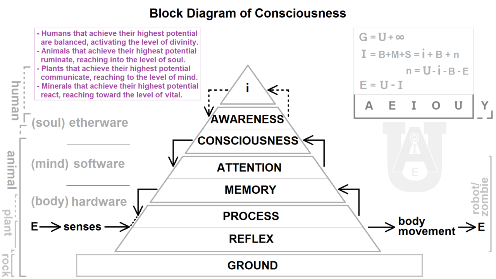
Awareness: the feature that defines consciousness
Psychologists define consciousness as your awareness of internal states and the external environment. The internal part includes your thoughts, your emotions, and body signals like hunger or pain; the external part includes everything your senses pick up from the world. Consciousness is famously hard to study because it is private — no one can directly observe your experience — yet it is the very thing psychology most wants to explain. For most of the twentieth century, behaviorists set it aside as untestable; today, tools like the EEG and functional brain imaging let researchers link states of awareness to measurable patterns of brain activity.
Consciousness is a continuum, not a switch
It is tempting to think of yourself as simply "awake" or "unconscious," but awareness comes in shades. At one end is sharp, effortful attention — the controlled processing you use to learn a new skill. At the other end is automatic processing, the low-awareness autopilot that lets an experienced driver navigate home while deep in conversation, remembering almost nothing of the route. Sleep lowers awareness further without switching it off entirely, and anesthesia or a coma lowers it further still. Even selective attention — the cocktail-party ability to focus on one voice in a noisy room — shows that consciousness is a spotlight of limited width, not a floodlight that captures everything at once.
Biological rhythms: the body runs on clocks
Much of the daily rise and fall of consciousness is driven by biological rhythms, recurring cycles of physiological activity built into the body. They are sorted by how long one cycle lasts. A circadian rhythm repeats roughly every twenty-four hours and governs the sleep–wake cycle, body temperature, and hormone release. An ultradian rhythm repeats more than once a day — the ninety-minute cycle that structures a night's sleep is the classic example. An infradian rhythm stretches longer than a day, as in the roughly twenty-eight-day menstrual cycle or seasonal shifts in mood. These clocks run whether or not you attend to them, which is why you grow sleepy at a predictable hour even on a day with no schedule.
| Rhythm | Cycle length | Examples in the body |
|---|---|---|
| Circadian | About 24 hours | Sleep–wake cycle, body temperature, cortisol and melatonin release, daily alertness |
| Ultradian | Shorter than 24 hours | The ~90-minute sleep cycle; cycles of hunger and focus across the day |
| Infradian | Longer than 24 hours | The menstrual cycle (~28 days); seasonal patterns of mood and behavior |
- Consciousness is awareness of internal states and the external environment.
- Awareness is a continuum — from controlled attention through automatic processing, sleep, and anesthesia — not an on/off switch.
- Biological rhythms are built-in cycles: circadian (~24 h), ultradian (<24 h), and infradian (>24 h).
- The circadian rhythm is the body's daily clock and the engine behind the sleep–wake cycle.
Section 2Sleep and the circadian rhythm
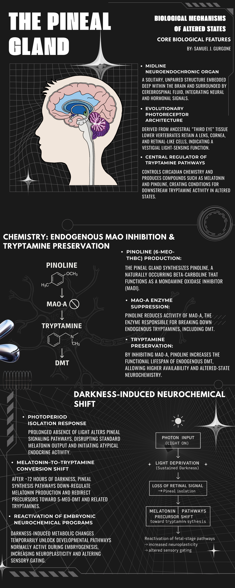
The sleep–wake cycle and the master clock
The body's twenty-four-hour clock is not a metaphor — it is a specific cluster of neurons called the suprachiasmatic nucleus (SCN), sitting in the hypothalamus just above where the optic nerves cross. The SCN keeps its own near-24-hour beat even in constant darkness, but it stays synchronized to the outside world through light. Special cells in the retina report how bright it is straight to the SCN, which then coordinates the daily rise and fall of alertness, body temperature, and hormones. Cues that reset this clock — chiefly light, but also meal times and activity — are called zeitgebers, German for "time-givers." When you fly across time zones, the SCN is briefly out of step with the local light schedule, and the grogginess and broken sleep of jet lag is the clock catching up.
Melatonin: the darkness hormone
The SCN does much of its work through a small endocrine gland called the pineal gland, which secretes the hormone melatonin. Melatonin is the body's chemical signal for "night": levels climb in the evening as light fades, peak in the small hours, and fall toward morning, nudging you toward sleep and helping keep you there. Because light suppresses melatonin, the timing of light exposure is powerful — bright morning light advances the clock and sharpens daytime alertness, while bright light late at night pushes the clock later and delays sleep. This is the mechanism behind one of the most common modern complaints about sleep, and behind the appeal of melatonin as an over-the-counter aid for jet lag and shift work.
Why do we sleep?
If sleep were not doing something essential, evolution would likely have discarded a state that leaves an animal defenseless for hours a day. Three complementary theories explain the pressure to sleep. The restorative theory holds that sleep repairs the body and brain: growth hormone is released, tissues rebuild, and a plumbing system called the glymphatic pathway flushes out metabolic waste, including proteins linked to brain disease. The adaptive (evolutionary) theory argues that sleep evolved to conserve energy and keep animals safely inactive during the hours when foraging would be dangerous. The memory-consolidation theory holds that sleep sorts, strengthens, and stores the day's learning — which is why pulling an all-nighter before an exam so reliably backfires.
| Theory | Core idea | Supporting evidence |
|---|---|---|
| Restorative | Sleep repairs body and brain and clears metabolic waste | Growth-hormone release, tissue repair, and glymphatic "wash-out" of waste peak during deep sleep |
| Adaptive / evolutionary | Sleep conserves energy and keeps animals safe when activity is risky | A species' sleep timing tracks its niche — predators, prey, and foraging schedules |
| Memory consolidation | Sleep sorts, strengthens, and stores the day's learning | People who sleep after studying remember more; both slow-wave and REM sleep aid memory |
- The suprachiasmatic nucleus (SCN) in the hypothalamus is the master circadian clock, reset daily by light.
- The pineal gland secretes melatonin in darkness to promote sleep; light suppresses it.
- Disrupting the clock — jet lag, shift work, late-night screens — misaligns sleep with the day.
- We sleep for restoration, adaptive safety/energy conservation, and memory consolidation.
Section 3The stages of sleep
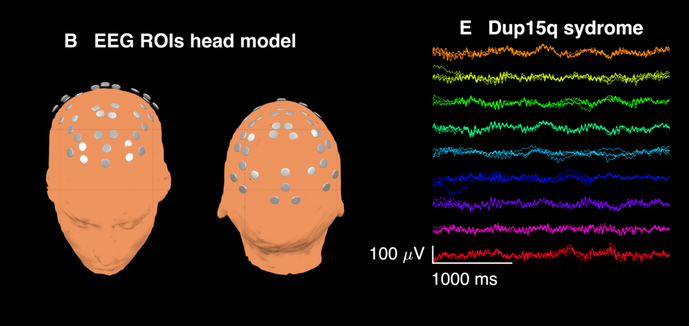
Reading sleep with the EEG
Sleep looks like nothing from the outside, but the electroencephalogram (EEG) — which records the summed electrical activity of the cortex through scalp electrodes — reveals a night of dramatic, orderly change. In wakeful alertness the EEG shows fast, low, jagged beta waves. As you close your eyes and relax, these give way to slower, more regular alpha waves. From there the brain descends through distinct stages, each with a signature wave pattern. The turning point in this science came in 1953, when Eugene Aserinsky and Nathaniel Kleitman noticed periods when a sleeper's eyes darted rapidly beneath closed lids — the discovery of REM sleep, which overturned the old assumption that sleep is a single uniform state.
The four stages: N1, N2, N3, and REM
Sleep is divided into non-REM (NREM) stages and REM. N1 is the light, drifting doorway to sleep, marked by theta waves; here you may feel a falling sensation or a sudden hypnic jerk, and if woken you might deny you were asleep at all. N2 is genuine sleep, occupying about half the night, and its EEG shows bursts called sleep spindles and sharp K-complexes thought to help protect sleep and consolidate memory. N3 is deep slow-wave sleep, dominated by large, slow delta waves; it is the hardest stage to wake from and the one most tied to physical restoration. Then comes REM, a paradox: the brain's waves look almost awake, the eyes move rapidly, vivid dreams unfold — yet the body's major muscles are paralyzed, a protective state called atonia. Because the mind is aroused while the body is switched off, REM is often called paradoxical sleep.
How sleep cycles across the night
These stages are not climbed once and left behind. A full cycle — roughly N1 → N2 → N3 → back up → REM — takes about ninety minutes, and you repeat it four to six times a night. The mix shifts as the night goes on: the early cycles are rich in deep N3 slow-wave sleep, which is why the first hours feel so restorative, while the later cycles trade deep sleep for progressively longer REM periods. The result is that most of your slow-wave sleep is banked before midnight-ish and most of your dreaming happens in the hours before you wake — which is why a cut-short night steals disproportionately from REM.
| Stage | Dominant EEG waves | What is happening |
|---|---|---|
| Awake, alert | Beta | Eyes open, active thinking and attention |
| Drowsy / relaxed | Alpha | Eyes closed, calm, on the edge of sleep |
| N1 (NREM) | Theta | Light sleep; hypnic jerks and drifting images; easily awakened |
| N2 (NREM) | Theta with sleep spindles & K-complexes | True sleep; heart rate and temperature fall; about half the night |
| N3 (NREM) | Delta (slow waves) | Deep slow-wave sleep; hardest to wake; physical repair |
| REM | Low, fast, wake-like | Vivid dreams, darting eyes, muscle atonia; "paradoxical" sleep |
- The EEG defines sleep by brain-wave shape: beta (awake), alpha (drowsy), theta (N1), spindles/K-complexes (N2), delta (N3).
- Aserinsky and Kleitman discovered REM sleep in 1953, revealing that sleep is not uniform.
- REM is "paradoxical" — wake-like brain, vivid dreams, but a paralyzed body (atonia).
- A cycle lasts ~90 minutes; early night favors deep N3, later night favors longer REM.
Section 4Dreams and sleep disorders
Theories of dreaming
Everyone dreams, several times a night, whether or not they remember it — yet why the brain generates these experiences remains debated. Sigmund Freud gave the first influential theory in The Interpretation of Dreams (1900), proposing that dreams are disguised wish fulfillment. He distinguished the manifest content — the literal storyline you remember — from the latent content, the hidden desires he believed it symbolized. Freud's specifics have found little scientific support, but the framework shaped a century of thought. A modern, biology-first rival is the activation-synthesis hypothesis of J. Allan Hobson and Robert McCarley (1977): during REM the brainstem fires more or less randomly, and the cortex, ever a meaning-maker, weaves those signals into a story — so dreams are the mind's interpretation of its own noise. A third view, the information-processing or continuity approach, treats dreaming as part of memory consolidation, replaying and sorting the concerns of waking life.
Insomnia, apnea, and narcolepsy
Sleep goes wrong for tens of millions of people, and the disorders differ sharply in mechanism. Insomnia — persistent trouble falling or staying asleep despite the chance to — is the most common complaint; the front-line treatment is not a pill but cognitive behavioral therapy for insomnia (CBT-I) and improved sleep habits. Sleep apnea is a breathing disorder: in the common obstructive form, the airway repeatedly collapses, so the sleeper stops breathing for seconds at a time, jolts partway awake to gasp, and never reaches restful deep sleep — producing loud snoring and crushing daytime fatigue. It is often treated with a CPAP machine that splints the airway open. Narcolepsy is rarer and stranger: sudden, irresistible sleep attacks in the middle of the day, frequently paired with cataplexy — a sudden loss of muscle tone triggered by strong emotion — and caused by the loss of neurons that make the wakefulness chemical hypocretin (orexin).
Parasomnias: acting out of sleep
The parasomnias are abnormal behaviors that intrude on sleep. Tellingly, sleepwalking (somnambulism) and night terrors arise from deep N3 slow-wave sleep, not from dreaming — which is why they cluster in the first third of the night and are far more common in children, who have more N3. In REM sleep behavior disorder the normal REM paralysis fails, so the sleeper physically acts out dreams, sometimes violently. Sleep paralysis is the mirror image: waking with the mind alert while REM atonia lingers, leaving you briefly unable to move — often accompanied by frightening hallucinations. Ordinary nightmares, by contrast, are simply distressing dreams that occur during REM.
| Disorder | Hallmark feature | Notes |
|---|---|---|
| Insomnia | Persistent trouble falling or staying asleep | The most common complaint; treated with sleep hygiene and CBT-I |
| Sleep apnea | Repeated pauses in breathing during sleep | Loud snoring, gasping, daytime fatigue; obstructive form treated with CPAP |
| Narcolepsy | Sudden, uncontrollable sleep attacks | Often with cataplexy; linked to loss of hypocretin/orexin neurons |
| Parasomnias | Abnormal events during sleep | Sleepwalking & night terrors arise from N3; REM behavior disorder = acting out dreams |
- Freud saw dreams as wish fulfillment (manifest vs latent content); the activation-synthesis hypothesis (Hobson & McCarley) sees them as the cortex interpreting random REM signals.
- Insomnia is trouble sleeping; first-line care is CBT-I, not medication.
- Sleep apnea = breathing pauses (CPAP); narcolepsy = sleep attacks + cataplexy (hypocretin loss).
- Parasomnias like sleepwalking and night terrors occur in deep N3, not REM.
Section 5Psychoactive drugs
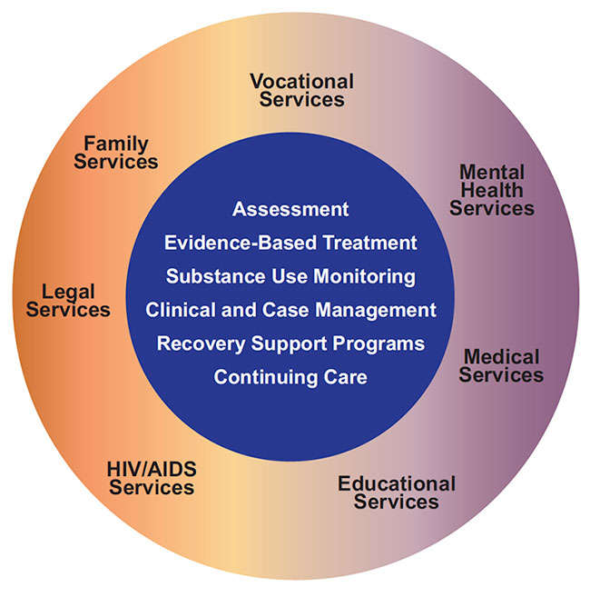
How drugs reach the mind
A psychoactive drug is any chemical that changes perception, mood, thinking, or behavior by altering activity at the synapse — mimicking a neurotransmitter, blocking its receptor, or changing how much is released or reabsorbed. Many drugs of abuse converge on one target: the brain's reward pathway, a dopamine circuit running from the ventral tegmental area to the nucleus accumbens that normally reinforces survival behaviors like eating. By flooding this circuit with dopamine, drugs teach the brain to want them — the neural root of craving. Psychoactive drugs sort into four broad families by what they do to the central nervous system.
The four families: depressants, stimulants, opioids, hallucinogens
Depressants slow the central nervous system, largely by boosting the inhibitory neurotransmitter GABA. Alcohol, barbiturates, and benzodiazepines belong here; in small doses they relax and reduce anxiety, but they impair coordination and judgment and, in overdose, can suppress breathing to the point of death. Stimulants do the opposite, speeding the nervous system and raising dopamine and norepinephrine: caffeine, nicotine, cocaine, amphetamines, and MDMA produce alertness and euphoria along with a racing heart and, often, a hard crash. Opioids — morphine, codeine, heroin, oxycodone, and the highly potent fentanyl — bind the body's own endorphin receptors, delivering powerful pain relief and euphoria while dangerously depressing breathing. Hallucinogens such as LSD, psilocybin, and mescaline distort perception and sensation, sometimes producing vivid imagery or a sense of altered reality; LSD works chiefly by acting on serotonin receptors.
Tolerance, dependence, and addiction
Repeated use changes the brain. Tolerance is a diminishing response to the same dose — the nervous system adapts, so larger amounts are needed to reach the original effect, a slide that pushes users toward dangerous quantities. Dependence comes in two forms. Physical dependence means the body has adjusted to the drug and produces a withdrawal syndrome — sometimes severe — when it is stopped. Psychological dependence is the emotional pull: the craving and compulsive seeking that can persist long after the body has detoxed. When drug use becomes compulsive and continues despite clear harm, clinicians call it a substance use disorder (addiction) — understood today as a chronic, treatable brain condition rather than a simple failure of willpower.
| Family | Examples | Effect on the nervous system |
|---|---|---|
| Depressants | Alcohol, barbiturates, benzodiazepines | Slow the CNS (enhance GABA); relaxation, sedation, impaired coordination; overdose stops breathing |
| Stimulants | Caffeine, nicotine, cocaine, amphetamines, MDMA | Speed the CNS (raise dopamine/norepinephrine); alertness, euphoria, higher heart rate, crash |
| Opioids | Morphine, codeine, heroin, oxycodone, fentanyl | Bind endorphin receptors; powerful pain relief and euphoria; dangerous respiratory depression |
| Hallucinogens | LSD, psilocybin, mescaline, PCP | Distort perception and sensation; LSD acts on serotonin receptors |
- A psychoactive drug alters mood, perception, or awareness by changing synaptic activity, often hijacking the dopamine reward pathway.
- The four families are depressants (slow CNS), stimulants (speed CNS), opioids (endorphin receptors), and hallucinogens (distort perception).
- Tolerance = needing more for the same effect; dependence = physical withdrawal plus psychological craving.
- Mixing depressants (opioids + alcohol) multiplies respiratory depression; naloxone reverses opioid overdose.
The chapter in one breath
- Consciousness is awareness of internal and external stimuli, and it runs along a continuum from focused attention to automatic processing to sleep.
- Biological rhythms — circadian (~24 h), ultradian, infradian — drive the daily rise and fall of alertness and sleep.
- The SCN in the hypothalamus is the master clock, reset by light; it drives melatonin release from the pineal gland to time sleep.
- We sleep for restoration, evolutionary safety, and memory consolidation.
- Sleep moves through NREM stages N1–N3 and REM, defined by EEG waves; cycles last ~90 minutes, with deep sleep early and REM late.
- Dreams are explained by Freud's wish fulfillment and the activation-synthesis hypothesis; disorders include insomnia, apnea, narcolepsy, and parasomnias.
- Psychoactive drugs — depressants, stimulants, opioids, hallucinogens — alter the brain and can produce tolerance and dependence.
ReferenceWords worth knowing
A quick reference for the terms in this chapter — skim it now, or circle back whenever a word trips you up.
- Activation-synthesis hypothesis
- The theory that dreams are the cortex's attempt to make sense of random neural signals generated in the brainstem during REM sleep.
- Cataplexy
- A sudden loss of muscle tone, often triggered by strong emotion, that is a hallmark of narcolepsy.
- Circadian rhythm
- A biological cycle of roughly 24 hours, such as the sleep–wake cycle, governed by the body's internal clock.
- Consciousness
- Awareness of internal states and of the external environment.
- Dependence
- A state in which the body or mind has adapted to a drug, producing withdrawal (physical) or craving (psychological) when it is stopped.
- Depressant
- A drug that slows central nervous system activity, such as alcohol or a benzodiazepine.
- Hallucinogen
- A drug that distorts perception and sensory experience, such as LSD or psilocybin.
- Insomnia
- Persistent difficulty falling asleep or staying asleep despite adequate opportunity.
- Latent content
- In Freud's theory, the hidden, symbolic meaning beneath a dream's storyline.
- Manifest content
- In Freud's theory, the literal storyline of a dream as it is remembered.
- Melatonin
- A hormone released by the pineal gland in darkness that promotes sleepiness.
- Narcolepsy
- A disorder marked by sudden, uncontrollable sleep attacks, often accompanied by cataplexy.
- NREM sleep
- Non-rapid-eye-movement sleep, comprising the stages N1, N2, and N3.
- Opioid
- A drug that binds the body's endorphin receptors to relieve pain and produce euphoria, such as morphine or heroin.
- Parasomnia
- An abnormal behavior or event during sleep, such as sleepwalking or night terrors.
- Psychoactive drug
- A chemical that changes perception, mood, or consciousness by altering brain chemistry.
- REM sleep
- Rapid-eye-movement sleep, marked by wake-like brain waves, vivid dreams, and muscle paralysis (atonia).
- Sleep apnea
- A disorder in which breathing repeatedly stops and restarts during sleep.
- Stimulant
- A drug that speeds up central nervous system activity, such as caffeine or cocaine.
- Suprachiasmatic nucleus (SCN)
- A region of the hypothalamus that serves as the body's master circadian clock.
- Tolerance
- A reduced response to a drug over time, so that larger doses are needed for the same effect.
- Withdrawal
- Unpleasant physical and psychological symptoms that appear when a dependent person stops using a drug.
Check yourself
Sensation & Perception
Right now, photons are scattering off this page, air is pressing rhythmically on your eardrums, and fabric is bending the hairs on your skin — yet you experience a calm, seamless world, not a storm of raw data. That gap between the physical energy that reaches your sense organs and the meaningful experience your brain builds from it is the subject of this chapter. Sensation is how your senses detect stimuli and turn them into neural signals; perception is how your brain organizes and interprets those signals into objects, faces, melodies, and meaning. We will follow the process from the outside in — the general rules that govern every sense, then vision and hearing, then the often-overlooked senses of taste, smell, touch, pain, and balance — and finish with the clever, occasionally fallible ways your brain assembles it all into a coherent whole.
By the end of this chapter you can
- Distinguish sensation from perception, and bottom-up from top-down processing.
- Explain transduction and identify where in each sense it happens.
- Define the absolute threshold and the difference threshold, and state Weber's law.
- Summarize signal detection theory and what it adds beyond a fixed threshold.
- Trace light through the eye and contrast the trichromatic and opponent-process theories of color.
- Describe how the ear transduces sound and how we perceive pitch and loudness.
- Explain taste, smell, touch, pain (gate-control theory), and the body-position senses.
- State the Gestalt principles and explain depth perception and perceptual constancy.
Section 1Sensation versus perception
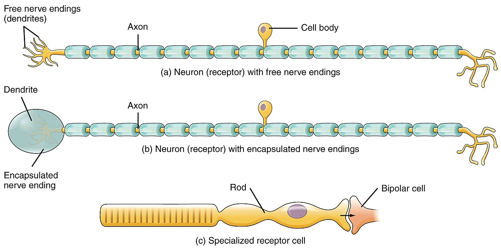
Two steps, one seamless experience
Psychologists split the flow of experience into two stages that feel like one. Sensation is the bottom of the process: your sense organs pick up physical energy from the environment — light waves, sound waves, molecules, pressure, heat — and encode it as neural impulses. Perception is what the brain does next: it selects, organizes, and interprets those impulses so that a scatter of signals becomes your grandmother's face or the opening notes of a song. The same physical stimulus can be sensed identically by two people and yet perceived very differently, which is exactly why sensation and perception are worth separating.
The two stages map onto two directions of information flow. Bottom-up processing starts with the raw signal at the sensory receptors and builds upward toward a whole percept — it is how you make sense of something entirely new. Top-down processing runs the other way: your expectations, prior knowledge, and context shape what you perceive, letting you read messy handwriting or hear a garbled word in a noisy room. Nearly all perception blends the two, which is why your brain is less like a camera faithfully recording the world and more like a scientist making rapid, educated guesses about what is out there.
Transduction: turning energy into signals
Every sense faces the same engineering problem: the brain speaks only in electrochemical impulses, but the world arrives as light, vibration, and chemistry. The solution is transduction — the conversion of one form of stimulus energy into the neural signals the nervous system can use. Specialized sensory receptors do this job: photoreceptors in the eye turn light into signals, hair cells in the ear turn vibration into signals, and receptors in the skin turn pressure and temperature into signals. Transduction is the literal border crossing between the physical world and the mind, and it is the first event in every chain that ends in a conscious experience.
The limits of the senses: thresholds and signal detection
Our senses are exquisite but not limitless, and the founder of psychophysics, Gustav Fechner, gave us the vocabulary for their limits. The absolute threshold is the faintest level of a stimulus you can detect half the time — a single candle flame roughly thirty miles away on a clear dark night. The difference threshold, or just noticeable difference (JND), is the smallest change between two stimuli you can detect half the time. Ernst Weber discovered that this difference is not a fixed amount but a constant proportion of the original stimulus — Weber's law. Adding one pound to a two-pound bag is obvious; adding the same pound to a hundred-pound load is imperceptible.
| Concept | What it measures | Everyday example |
|---|---|---|
| Absolute threshold | The faintest stimulus detectable 50% of the time | A candle flame ~30 miles away on a dark night |
| Difference threshold (JND) | The smallest detectable change between two stimuli | Noticing a screen just got brighter |
| Weber's law | The JND is a constant fraction of the stimulus | +1 lb is obvious on 2 lb, invisible on 100 lb |
| Subliminal stimulus | A stimulus below the absolute threshold | A word flashed too briefly to consciously see |
| Sensory adaptation | Fading response to an unchanging stimulus | Not feeling your clothes after a few minutes |
Notice that "threshold" implies a hard on/off line, but detection is rarely that clean. Signal detection theory replaced the fixed-threshold idea with something more realistic: whether you catch a weak signal buried in background noise depends not only on your sensory sensitivity but on your decision criterion — how willing you are to say "yes, I detected it." That criterion shifts with your expectations, motivation, fatigue, and the costs of being wrong. The theory sorts every judgment into four outcomes: a hit (signal present, you said yes), a miss (present, you said no), a false alarm (absent, you said yes), and a correct rejection (absent, you said no). It explains why an anxious new parent hears the baby cry that isn't there, and why a radiologist and a rookie can stare at the same scan and reach different conclusions.
- Sensation detects and encodes stimuli; perception organizes and interprets them.
- Bottom-up processing builds from raw signal; top-down processing uses expectation and context.
- Transduction converts physical energy into neural signals at the sensory receptors.
- Absolute and difference thresholds, Weber's law, and signal detection theory describe the limits and biases of detection.
Section 2Vision

The eye: an optical instrument made of tissue
Vision begins with light, which is a slice of the electromagnetic spectrum. The wavelength of light determines the hue we see, and its intensity determines brightness. Light first strikes the cornea, the clear front surface that does most of the focusing, then passes through the pupil, the adjustable opening whose size is controlled by the colored muscle of the iris. Behind the pupil, the lens fine-tunes the focus by changing shape, a process called accommodation, and projects a small, upside-down image onto the retina lining the back of the eyeball.
The retina is where biology takes over from optics. Its photoreceptors capture light and hand their signals to a layer of bipolar cells, which pass them to ganglion cells whose long axons braid together into the optic nerve and leave the eye for the brain. The very spot where that nerve exits has no receptors at all — the blind spot — yet you never notice the hole, because your brain quietly fills it in. Sharpest vision comes from the fovea, a central pit packed with detail-sensitive receptors.
How light becomes a signal
Transduction in the eye is the job of two kinds of photoreceptor named for their shape. Rods — about 120 million of them, spread across the periphery — are extraordinarily sensitive and let you see in dim light, but only in shades of gray. Cones — roughly six million, concentrated in the fovea — need brighter light and deliver sharp detail and color. Both contain light-sensitive photopigments that chemically change when struck by light, and that change is the spark that launches the neural signal. This division of labor is why, at night, you see better by looking slightly to the side of a faint star: you are casting its light onto your rod-rich periphery.
| Feature | Rods | Cones |
|---|---|---|
| Number | ~120 million | ~6 million |
| Location | Periphery of the retina | Concentrated in the fovea |
| Light needed | Very little — work in dim light | Bright light |
| Color? | No — grays only | Yes — full color |
| Best for | Night & peripheral vision | Daylight, color, fine detail |
Color vision: two theories, both true
How do three types of cone give rise to millions of colors? The trichromatic theory, proposed by Thomas Young and refined by Hermann von Helmholtz, holds that the retina has three cone types tuned to short (blue), medium (green), and long (red) wavelengths; the brain reads the ratio of their activity as a specific hue. This neatly explains most color mixing and why red-green color blindness follows from a missing or faulty cone type. But it cannot explain a curious fact: stare at a green square, look away to white, and you see a red afterimage.
Ewald Hering's opponent-process theory supplies the missing piece. Farther along the visual pathway, color is processed in opposing pairs — red-versus-green, blue-versus-yellow, and black-versus-white. A cell excited by green is inhibited by red, so you can never see a "reddish green," and when the green-sensing channel fatigues, its red partner rebounds — the afterimage. The modern view is that both theories are correct at different stages: trichromatic at the cones, opponent-process in the cells beyond them.
- Light is focused by the cornea and lens onto the retina, then leaves via the optic nerve (creating a blind spot).
- Rods serve dim-light and peripheral vision; cones serve color and fine detail and cluster in the fovea.
- Trichromatic theory explains color at the cones; opponent-process theory explains afterimages farther along the pathway.
Section 3Hearing
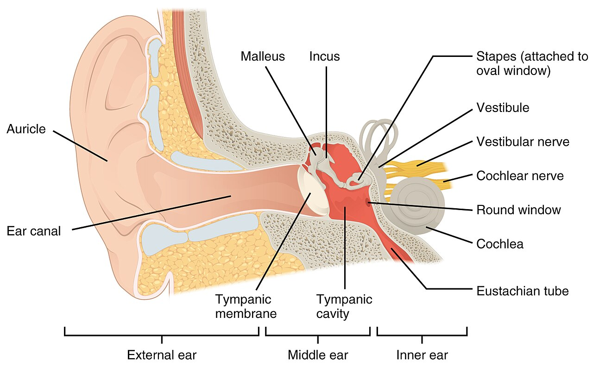
From pressure waves to vibration
Sound is nothing more than pressure waves rippling through air. Two features of those waves become two features of experience: frequency — how many waves pass per second, measured in hertz (Hz) — is heard as pitch, and amplitude — the height of the waves, measured in decibels (dB) — is heard as loudness. Young human ears detect roughly 20 to 20,000 Hz. The ear's task is to catch these faint waves and convert them into neural signals, and it does so through a beautifully staged relay.
In the outer ear, the visible flap (the pinna) funnels sound down the auditory canal to the eardrum, which vibrates. In the air-filled middle ear, three tiny bones — the hammer, anvil, and stirrup, or malleus, incus, and stapes — act as levers that amplify the vibration and pass it to the fluid-filled inner ear. There the coiled cochlea carries the vibration as a traveling wave along the basilar membrane, which is lined with hair cells. When the membrane ripples, the hair cells bend, and that bending is the moment of transduction — mechanical motion becomes the neural signal that travels the auditory nerve to the brain.
How we hear pitch and loudness
Explaining loudness is straightforward: louder sounds bend more hair cells and drive them to fire faster, so the brain reads greater neural activity as greater volume. Explaining pitch took two competing theories that turned out to be partners. Place theory, from Helmholtz, says the brain reads pitch from the location of peak vibration on the basilar membrane — high-frequency sounds peak near the base by the oval window, low-frequency sounds near the far apex. This accounts beautifully for high pitches but stumbles on low ones, where the peak is too broad to localize.
Frequency theory (also called temporal theory) offers the complement: the auditory nerve fires at the same rate as the sound wave, so a 100 Hz tone produces 100 impulses per second. This works well for low pitches but fails at high frequencies, because a single neuron cannot fire much faster than about 1,000 times per second. The volley principle, described by Ernest Wever, rescues it: teams of neurons take turns firing in rapid alternation, so their combined volley can encode frequencies far above any single cell's limit. In the end, the brain uses place coding for high pitches, frequency coding for low ones, and a combination in the middle.
| Theory | How pitch is coded | Best explains |
|---|---|---|
| Place theory | Location of peak vibration on the basilar membrane | High-frequency (high-pitched) sounds |
| Frequency theory | Neural firing rate matches the sound's frequency | Low-frequency (low-pitched) sounds |
| Volley principle | Groups of neurons alternate firing in rapid volleys | Mid-range frequencies above one neuron's limit |
- Frequency is heard as pitch; amplitude is heard as loudness.
- Sound is funneled by the outer ear, amplified by the middle-ear bones, and transduced by hair cells in the cochlea.
- Place theory explains high pitches, frequency theory low pitches, and the volley principle the middle.
Section 4The other senses
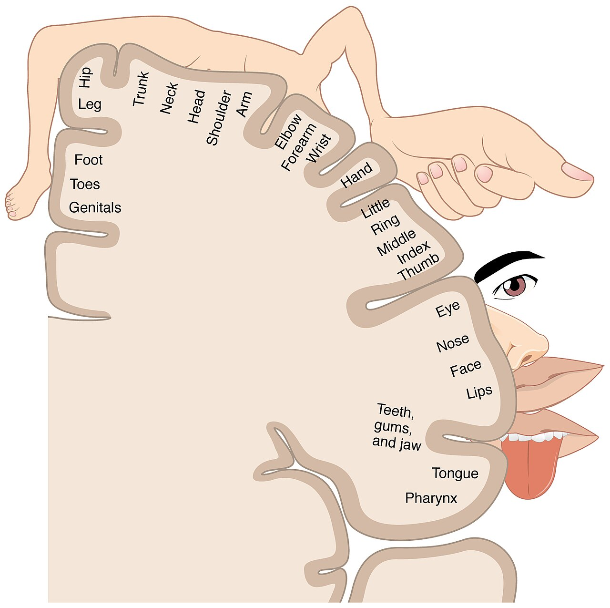
The chemical senses: taste and smell
Taste, or gustation, begins when dissolved chemicals reach the taste buds tucked into the bumps of your tongue and mouth. There are five basic tastes — sweet, sour, salty, bitter, and the savory taste called umami — and each taste bud renews itself roughly every ten days. Smell, or olfaction, works on airborne molecules that reach receptor neurons high in the nose; humans have about 400 receptor types whose combinations can distinguish an enormous range of odors. Uniquely, smell signals travel to the olfactory bulb and onward to the limbic system — the brain's emotion and memory hub — without first stopping at the thalamus, which is why a single scent can summon a childhood memory with startling force. What we casually call "flavor" is mostly this pair working together, as anyone with a head cold and a bland dinner can confirm.
The skin senses and pain
The skin reports four basic sensations — pressure, warmth, cold, and pain — through receptors scattered unevenly across the body, which is why your fingertips and lips are far more sensitive than your back. Pain deserves special attention because it is not a simple readout of tissue damage. According to the gate-control theory of Ronald Melzack and Patrick Wall, the spinal cord contains a neurological "gate" that can either block pain signals or let them pass to the brain. Non-painful input from large nerve fibers — the rubbing you instinctively apply to a banged shin — can close the gate, while attention, anxiety, and expectation can swing it open or shut. It is why a soldier may not notice a wound in battle and why the same injury hurts more at 3 a.m. than at noon.
Knowing where your body is
Two senses you rarely think about keep you upright and coordinated. Kinesthesia (proprioception) uses receptors in your muscles, tendons, and joints to track the position and movement of your body parts — it is how you can touch your nose with your eyes closed. The vestibular sense monitors balance and head position using the fluid-filled semicircular canals and the otolith organs of the inner ear; when that fluid keeps sloshing after you spin, you feel dizzy, and when it disagrees with your eyes on a rocking boat, you feel motion sick.
| Sense | Also called | Where it lives | Stimulus |
|---|---|---|---|
| Taste | Gustation | Taste buds on the tongue & mouth | Dissolved chemicals |
| Smell | Olfaction | Receptor neurons high in the nose | Airborne molecules |
| Touch | Somatosensation | Receptors throughout the skin | Pressure, warmth, cold |
| Pain | Nociception | Nociceptors across the body | Tissue-damaging stimuli |
| Body position | Kinesthesia & vestibular sense | Muscles/joints; inner-ear canals | Movement, position, gravity |
- Taste (five basic tastes) and smell are chemical senses; smell routes straight to the limbic system, tying odor to memory.
- The skin senses pressure, warmth, cold, and pain; gate-control theory explains why pain can be blocked or amplified.
- Kinesthesia tracks limb position; the vestibular sense (semicircular canals) governs balance.
Section 5Perceptual organization
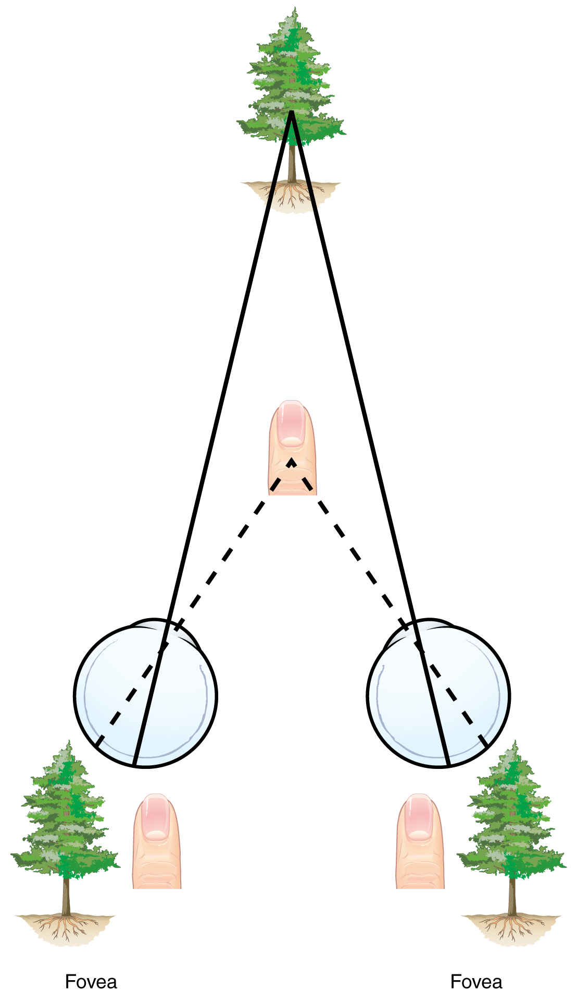
Gestalt principles: the whole and its parts
Early in the twentieth century a group of German psychologists — Max Wertheimer, Kurt Koffka, and Wolfgang Köhler — argued that we do not perceive the world as a heap of separate sensations but as organized wholes. Their slogan, that "the whole is different from the sum of its parts," gave the Gestalt school its name. They catalogued the rules the brain uses to group fragments into objects. The most basic is figure-ground: we automatically separate an object (the figure) from its surroundings (the ground), as when black words leap off a white page. Others govern how we cluster elements — by nearness, by likeness, by continuity, and by our tendency to complete unfinished shapes.
| Principle | We tend to… | Everyday example |
|---|---|---|
| Figure-ground | Separate an object from its background | Words standing out from the page |
| Proximity | Group items that are near one another | Seeing three clusters of dots, not many dots |
| Similarity | Group items that look alike | Sorting players by jersey color |
| Continuity | Perceive smooth, continuous lines | Two crossing lines, not four segments |
| Closure | Fill in gaps to see a whole object | Reading a logo with pieces missing |
| Common fate | Group items that move together | A flock of birds seen as one unit |
Depth perception: seeing a 3-D world
Each eye receives only a flat, two-dimensional image, yet you perceive a world of depth and distance. Eleanor Gibson and Richard Walk showed with their famous visual cliff — a glass-covered drop-off — that even crawling infants perceive depth and refuse to venture over the edge. The brain builds depth from two families of cues. Binocular cues require both eyes: in retinal (binocular) disparity, the two eyes see slightly different views, and the more they differ, the closer the object; in convergence, the eyes turn inward for nearer objects. Monocular cues need only one eye and let a flat painting suggest depth — relative size, interposition (nearer objects block farther ones), linear perspective (parallel lines converging), texture gradient, relative height, and motion parallax (nearby objects sweeping past faster than distant ones).
Perceptual constancy and the set of the mind
Objects keep changing their image on your retina — a door swinging open casts a shifting trapezoid, a friend walking away shrinks — yet you perceive them as stable. This is perceptual constancy: we perceive objects as having consistent size, shape, color, and lightness despite changes in the raw sensory input. Size constancy lets you know the walking friend is not actually shrinking; shape constancy keeps the door rectangular in your mind. Perception is also steered from the top down by a perceptual set — a readiness to perceive one thing rather than another based on context and expectation. Visual illusions like the Müller-Lyer and Ponzo figures are prized precisely because they make these hidden rules visible, tricking a system that is usually right into being confidently wrong.
- Gestalt principles — figure-ground, proximity, similarity, continuity, closure, common fate — describe how we group parts into wholes.
- Depth perception uses binocular cues (retinal disparity, convergence) and monocular cues (relative size, interposition, linear perspective, motion parallax).
- Perceptual constancy keeps objects stable despite changing input; a perceptual set lets expectation shape what we perceive.
The chapter in one breath
- Sensation detects and encodes stimuli through transduction; perception organizes and interprets them, blending bottom-up and top-down processing.
- The absolute and difference thresholds, Weber's law, and signal detection theory describe how — and how reliably — we detect faint stimuli.
- In vision, the cornea and lens focus light onto the retina, where rods and cones transduce it; color arises from trichromatic coding at the cones and opponent-process coding beyond.
- In hearing, middle-ear bones amplify vibration and cochlear hair cells transduce it; place and frequency theories plus the volley principle explain pitch.
- The chemical senses (taste, smell) and skin senses feed perception, and gate-control theory shows that pain is modulated, not merely measured.
- Kinesthesia and the vestibular sense track body position and balance.
- Gestalt principles, binocular and monocular depth cues, and perceptual constancy reveal that perception is an active construction — which is exactly why illusions work.
ReferenceWords worth knowing
A quick reference for the terms in this chapter — skim it now, or circle back whenever a word trips you up.
- Absolute threshold
- The minimum stimulus energy needed to detect a stimulus 50% of the time.
- Binocular disparity
- The slight difference between the images the two eyes receive; a binocular cue the brain uses to compute depth.
- Bottom-up processing
- Perception that begins with raw sensory input and builds upward to a whole percept.
- Cochlea
- The coiled, fluid-filled tube of the inner ear whose hair cells transduce sound into neural signals.
- Cones
- Retinal photoreceptors concentrated in the fovea that detect color and fine detail in bright light.
- Difference threshold
- The smallest detectable difference between two stimuli 50% of the time; the just noticeable difference (JND).
- Gate-control theory
- The idea (Melzack & Wall) that the spinal cord has a neural "gate" that blocks or allows pain signals to reach the brain.
- Gestalt psychology
- A school holding that we perceive organized wholes, not isolated parts — "the whole is different from the sum of its parts."
- Kinesthesia
- The sense of the position and movement of one's own body parts; also called proprioception.
- Olfaction
- The sense of smell, in which airborne molecules stimulate receptors that route directly to the limbic system.
- Opponent-process theory
- The theory (Hering) that color is processed in opposing pairs — red-green, blue-yellow, black-white — explaining afterimages.
- Perception
- The process of organizing and interpreting sensory information into meaningful objects and events.
- Perceptual constancy
- Perceiving objects as unchanging in size, shape, color, and lightness despite changes in the retinal image.
- Place theory
- The theory that pitch is coded by the location of peak vibration along the basilar membrane; best explains high pitches.
- Rods
- Retinal photoreceptors of the periphery that are highly sensitive in dim light but detect only shades of gray.
- Sensation
- The process by which sensory receptors detect stimuli and encode them as neural signals.
- Sensory adaptation
- Reduced sensitivity to a constant, unchanging stimulus over time.
- Signal detection theory
- A model of detection in which noticing a faint signal depends on both sensitivity and the observer's decision criterion.
- Transduction
- The conversion of one form of stimulus energy into the neural signals the nervous system can use.
- Trichromatic theory
- The theory (Young-Helmholtz) that color vision arises from three cone types tuned to red, green, and blue wavelengths.
- Vestibular sense
- The sense of balance and head position, based in the semicircular canals and otolith organs of the inner ear.
- Weber's law
- The principle that the difference threshold is a constant proportion of the original stimulus, not a fixed amount.
Check yourself
Learning
Almost everything you do — the language you speak, the fear that grips you at a dentist's drill, the pull of a phone buzzing in your pocket — was learned. Learning is the process by which experience produces a lasting change in what an organism knows or does, and psychologists have spent more than a century mapping how it works. This chapter follows that story from Pavlov's salivating dogs to Skinner's levers to Bandura's inflatable clown, building the vocabulary you need to see conditioning at work in classrooms, casinos, and your own habits. Master these few mechanisms and a great deal of human and animal behavior stops looking mysterious.
By the end of this chapter you can
- Define learning and distinguish it from reflex, instinct, maturation, and fatigue.
- Contrast associative learning with non-associative forms such as habituation and sensitization.
- Diagram classical conditioning using the US, UR, CS, and CR, and describe acquisition, extinction, spontaneous recovery, generalization, and discrimination.
- Explain Thorndike's law of effect and how Skinner turned it into operant conditioning.
- Tell reinforcement from punishment and positive from negative, and explain why negative reinforcement is not punishment.
- Describe shaping by successive approximations.
- Compare the four schedules of reinforcement and the response pattern each produces.
- Summarize Bandura's Bobo doll study and the four processes of observational learning.
Section 1What learning is

A working definition
Psychologists define learning as a relatively permanent change in behavior or knowledge that results from experience. Each part of that sentence earns its place. The change must actually last — a momentary shift does not count. And it must come from experience, which rules out three look-alikes: changes from maturation (an infant walks because the nervous system matured, not because it practiced), reflexes and instincts (you were born blinking and blinking is not learned), and temporary states like fatigue or drugs. Learning is what is left when you subtract growing up, being born knowing, and being tired.
Associative learning
The engine of this chapter is associative learning — forming a mental link between two events so that one comes to signal or produce the other. It takes two great forms. In classical conditioning an organism links two stimuli, so that a signal comes to predict an event. In operant conditioning an organism links a behavior to its consequence, so that rewards and penalties reshape what it does. Nearly all of the deliberate training humans do to animals, children, and themselves runs on one of these two rails.
The other kinds
Not all learning is associative. The simplest form, non-associative learning, involves just one repeated stimulus. In habituation a response shrinks with repetition — you stop hearing the hum of the refrigerator minutes after you enter the kitchen. In sensitization a response grows — after a startling clap of thunder, small noises make you jump. Beyond these sit richer forms, including observational learning (Section 5) and the cognitive, latent learning that early behaviorists underrated. The behaviorist John B. Watson wanted psychology to study only what could be seen; the field later added the mind back in, but the observable mechanisms in this chapter remain its bedrock.
| Kind of learning | What is linked or changed | Everyday example |
|---|---|---|
| Habituation | Response to one repeated stimulus decreases | You stop noticing a ticking clock |
| Sensitization | Response to one repeated stimulus increases | Jumpier at every creak after a scare |
| Classical conditioning | Two stimuli become linked | Mouth waters at a pizza-shop jingle |
| Operant conditioning | A behavior is linked to its consequence | Studying hard because it earns good grades |
| Observational learning | Behavior copied from a model | A toddler mimics a parent's phone habits |
- Learning is a lasting change in behavior or knowledge that comes from experience, not maturation, reflex, or fatigue.
- Associative learning links events: classical conditioning (two stimuli) and operant conditioning (behavior and consequence).
- Non-associative learning involves one repeated stimulus: habituation (response falls) and sensitization (response rises).
- Observational and cognitive learning show that learning is more than simple stimulus–response.
Section 2Classical conditioning

Pavlov's accidental discovery
Ivan Pavlov was a Russian physiologist studying digestion — work that won him a Nobel Prize in 1904 — when his dogs interrupted the plan. They began salivating not just at food but at the sight of the lab assistant who fed them and even at the sound of approaching footsteps, before any food appeared. Rather than dismiss this "psychic secretion," Pavlov built a career on it, pairing an arbitrary signal such as a metronome, buzzer, or tone with meat powder and measuring, drop by drop, how the dogs came to anticipate the meal.
The four parts: US, UR, CS, CR
The logic is simple once the four pieces are named. Food placed in the mouth automatically triggers salivation: the food is the unconditioned stimulus (US) and the salivation it produces is the unconditioned response (UR). Both are unlearned — the "unconditioned" label means no training required. A metronome, at first, means nothing to the dog; it is a neutral stimulus. But sound the metronome just before the food, over and over, and the dog begins to salivate at the metronome alone. The metronome has become a conditioned stimulus (CS), and the salivation it now triggers is the conditioned response (CR) — learned through the pairing.
Acquisition, extinction, and generalization
Acquisition is the building of the CS–US link, and it is strongest when the CS reliably comes just before the US. Stop pairing them — ring the metronome again and again with no food — and the CR weakens and disappears: this is extinction. Yet the learning is not erased. After a rest, the metronome can trigger a burst of salivation again, a rebound called spontaneous recovery. Two more processes round out the picture. In stimulus generalization, stimuli resembling the CS also evoke the CR — a dog trained to a 1000-Hz tone will also salivate to 1200 Hz. In discrimination, the animal learns to respond only to the exact CS. The most famous demonstration in humans is Watson and Rayner's 1920 "Little Albert" study, in which a baby was conditioned to fear a white rat by pairing it with a frightening clang; the fear then generalized to a rabbit, a fur coat, and a bearded mask.
| Term | What it is | Pavlov's dog | Everyday example |
|---|---|---|---|
| Unconditioned stimulus (US) | Naturally triggers a response, no learning needed | Meat powder | Smell of baking bread |
| Unconditioned response (UR) | Automatic reaction to the US | Salivation to food | Mouth watering at the smell |
| Conditioned stimulus (CS) | Once neutral; now predicts the US | Metronome | The bakery's doorbell |
| Conditioned response (CR) | Learned reaction to the CS | Salivation to the metronome | Mouth watering at the doorbell |
- Pavlov found that a neutral signal paired with a US comes to trigger a learned response.
- The US→UR pair is unlearned; the CS→CR pair is learned through pairing.
- Acquisition builds the link, extinction fades it, spontaneous recovery revives it.
- Generalization spreads the CR to similar stimuli; discrimination narrows it to the exact CS.
Section 3Operant conditioning

Thorndike's law of effect
Where classical conditioning is about signals, operant conditioning is about consequences. Its roots lie with Edward Thorndike, who put hungry cats in "puzzle boxes" they could escape only by working a latch. On the first try a cat clawed and squirmed at random; over successive trials it escaped faster and faster, homing in on the action that worked. Thorndike distilled this into the law of effect: behaviors followed by satisfying consequences are strengthened and become more likely, while behaviors followed by unpleasant consequences are weakened. Consequences select behavior the way a gardener selects plants.
Skinner and the operant chamber
B. F. Skinner turned that principle into a rigorous science. He coined the term operant because the behavior "operates" on the environment to generate consequences. In his operant chamber — the "Skinner box" — a rat presses a lever or a pigeon pecks a lit key, and an automatic device delivers food and records every response. The contrast with Pavlov is sharp: classical conditioning acts on involuntary, reflexive responses (salivating, blinking, fear), whereas operant conditioning acts on voluntary behaviors the animal emits to earn rewards or avoid trouble.
Reinforcement, punishment, positive, negative
Two dimensions define every consequence. The first is direction: reinforcement makes a behavior more likely, while punishment makes it less likely. The second is whether a stimulus is added or taken away: positive means a stimulus is added, and negative means a stimulus is removed — here the words carry no sense of "good" or "bad." Cross the two and you get four cases, laid out below. Reinforcers themselves come in two grades: primary reinforcers satisfy biological needs directly (food, water, warmth), while secondary or conditioned reinforcers (money, grades, praise, a clicker's click) gain their power only by association with primary ones.
| Consequence | Positive — add a stimulus | Negative — remove a stimulus |
|---|---|---|
| Reinforcement (behavior increases) | Positive reinforcement: give a treat for sitting | Negative reinforcement: the seatbelt buzzer stops when you buckle |
| Punishment (behavior decreases) | Positive punishment: a scolding for texting in class | Negative punishment: losing phone privileges after breaking a rule |
- Thorndike's law of effect: satisfying consequences strengthen a behavior, unpleasant ones weaken it.
- Skinner studied this as operant conditioning of voluntary behavior in the operant chamber.
- Reinforcement increases behavior; punishment decreases it. Positive adds a stimulus; negative removes one.
- Primary reinforcers meet biological needs; secondary reinforcers (money, praise) work by association.
Section 4Shaping and schedules of reinforcement

Shaping a new behavior
A rat will not stroll over and press a lever on its own, so how do you reinforce a behavior that has never happened? The answer is shaping: you reinforce successive approximations — small steps that move steadily toward the goal. First reward the rat simply for turning toward the lever, then only for approaching it, then for touching it, and finally only for a full press. Each stage builds on the last. The same method teaches a dolphin to leap through a hoop, a child to form letters, and a stroke patient in rehabilitation to walk again — complex behavior assembled one reinforced step at a time.
How often to reinforce
Once a behavior exists, how often you reward it changes everything. Continuous reinforcement — a reward for every correct response — produces the fastest learning, but also the fastest extinction when the rewards stop; a vending machine that always pays out is abandoned the moment it fails once. Partial (intermittent) reinforcement — rewarding only some responses — builds behavior that is remarkably resistant to extinction, an effect so reliable it has its own name, the partial reinforcement effect. It is exactly why a slot machine, which pays off only now and then, keeps a person pulling the handle long after they would have walked away from a broken one.
The four schedules
Partial reinforcement comes in four flavors, defined by two questions. Is reinforcement tied to the number of responses (a ratio schedule) or to the passage of time (an interval schedule)? And is the requirement fixed (constant) or variable (unpredictable)? Each of the four combinations produces its own signature response pattern. Variable-ratio schedules generate the highest, steadiest rates and the greatest resistance to extinction, while fixed-interval schedules produce a telltale "scallop" — responding slumps right after a reward and surges as the next deadline approaches.
| Schedule | Reward delivered | Response pattern | Real-world example |
|---|---|---|---|
| Fixed ratio (FR) | After a set number of responses | High rate; brief pause after each reward | Piecework pay; buy ten, get one free |
| Variable ratio (VR) | After an unpredictable number of responses | Highest, steadiest; very hard to extinguish | Slot machines; lottery tickets |
| Fixed interval (FI) | First response after a set time | "Scalloped" — slow, then speeds near the deadline | Cramming before a scheduled exam |
| Variable interval (VI) | First response after an unpredictable time | Slow and steady | Checking for a text; pop quizzes |
- Shaping builds new behavior by reinforcing successive approximations toward a goal.
- Continuous reinforcement learns fastest but extinguishes fastest; partial reinforcement resists extinction.
- Schedules are ratio (by responses) or interval (by time), and fixed or variable.
- Variable-ratio yields the highest, most persistent responding — the psychology of gambling.
Section 5Observational learning

Learning without doing
Conditioning requires the learner to act and feel the consequence — but humans learn a great deal simply by watching. Albert Bandura called this observational learning or modeling, and made it the center of his social-cognitive theory. Crucially, the observer need not be reinforced at all; it is enough to see a model perform the behavior. We also absorb consequences we merely witness. Seeing a model rewarded makes us more likely to copy the behavior — vicarious reinforcement — and seeing a model punished makes us less likely, a vicarious punishment.
The Bobo doll experiment
Bandura's classic 1961 study made the point unforgettable. Preschool children watched an adult with an inflatable Bobo doll. Some saw the adult attack it — punching, kicking, striking it with a mallet, shouting "Sock him!" Others saw the adult play calmly. Later, each child was left alone with the doll. Children who had watched the aggressive model reproduced the very same attacks, often word for word, and even invented new ones; children who had seen the calm model mostly did not. Follow-up versions showed imitation rose when the model had been rewarded for the aggression. The finding cut against strict behaviorism: learning had occurred with no reinforcement to the child whatsoever.
The four processes of modeling
Bandura argued that turning observation into action takes four steps. You must pay attention to the model, retain a memory of what was done, be physically able to reproduce it, and finally have the motivation to perform — often supplied by the reward you expect. Miss any one and the behavior will not appear. Modeling explains how children acquire language, manners, generosity, prejudice, and aggression, and it is why role models, teachers, and media figures carry such weight: we are wired to copy the people we watch.
| Process | What must happen | Example: learning to cook from a chef |
|---|---|---|
| Attention | Notice and focus on the model | Watch how the chef holds the knife |
| Retention | Store a memory of the behavior | Picture the technique later at home |
| Reproduction | Have the ability to copy it | Possess the coordination to chop safely |
| Motivation | Have a reason to perform it | Want the praise a good meal earns |
- Bandura showed that people learn by watching models, without being directly reinforced.
- The Bobo doll study: children imitated an adult's aggression, more so when the model was rewarded.
- Vicarious reinforcement and punishment shape whether we copy what we see.
- Modeling requires attention, retention, reproduction, and motivation.
The chapter in one breath
- Learning is a lasting change in behavior or knowledge from experience — not reflex, instinct, maturation, or fatigue.
- Associative learning links events; non-associative learning (habituation, sensitization) involves a single repeated stimulus.
- Classical conditioning (Pavlov): a neutral stimulus paired with a US becomes a CS that triggers a CR, showing acquisition, extinction, spontaneous recovery, generalization, and discrimination.
- Operant conditioning (Thorndike's law of effect, Skinner) shapes voluntary behavior through its consequences.
- Reinforcement increases behavior and punishment decreases it; positive adds a stimulus and negative removes one — and negative reinforcement is not punishment.
- Shaping reinforces successive approximations; the four schedules (FR, VR, FI, VI) give distinct response patterns, with variable-ratio the most persistent.
- Observational learning (Bandura's Bobo doll) shows we learn by watching models through attention, retention, reproduction, and motivation.
ReferenceWords worth knowing
A quick reference for the terms in this chapter — skim it now, or circle back whenever a word trips you up.
- Acquisition
- The initial stage of conditioning, when the link between a conditioned stimulus and an unconditioned stimulus (or between a behavior and its consequence) is being formed.
- Associative learning
- Learning that links two events — two stimuli in classical conditioning, or a behavior and its consequence in operant conditioning.
- Classical conditioning
- Learning in which a neutral stimulus, paired with an unconditioned stimulus, comes to trigger a conditioned response; first studied by Pavlov.
- Conditioned response (CR)
- The learned reaction to a previously neutral, now conditioned, stimulus.
- Conditioned stimulus (CS)
- An originally neutral stimulus that, after pairing with an unconditioned stimulus, comes to trigger a conditioned response.
- Extinction
- The weakening and disappearance of a conditioned response when the CS is no longer paired with the US (or a behavior is no longer reinforced).
- Fixed-interval schedule
- Reinforcement of the first response after a set amount of time has passed; produces a scalloped response pattern.
- Fixed-ratio schedule
- Reinforcement after a set number of responses; produces a high rate with a brief pause after each reward.
- Generalization
- The tendency for stimuli similar to the conditioned stimulus to also evoke the conditioned response.
- Habituation
- A non-associative decrease in response to a stimulus that is repeated and harmless.
- Law of effect
- Thorndike's principle that behaviors followed by satisfying consequences are strengthened and those followed by unpleasant consequences are weakened.
- Learning
- A relatively permanent change in behavior or knowledge that results from experience.
- Negative reinforcement
- Strengthening a behavior by removing an unpleasant stimulus; not to be confused with punishment.
- Observational learning
- Learning by watching and imitating a model, without direct reinforcement; central to Bandura's theory.
- Operant conditioning
- Learning in which the consequences of a voluntary behavior make it more or less likely to recur.
- Positive reinforcement
- Strengthening a behavior by adding a desirable stimulus after it occurs.
- Punishment
- Any consequence that makes a behavior less likely to recur.
- Reinforcement
- Any consequence that makes a behavior more likely to recur.
- Shaping
- Building a new behavior by reinforcing successive approximations toward the target behavior.
- Spontaneous recovery
- The reappearance, after a rest period, of an extinguished conditioned response.
- Unconditioned stimulus (US)
- A stimulus that naturally and automatically triggers a response without any learning.
- Variable-ratio schedule
- Reinforcement after an unpredictable number of responses; produces the highest, most extinction-resistant rate of responding.
Check yourself
Memory
Right now you are reading these words, and a moment from now you will remember having read them — or you won't. Memory is the set of processes that let experience leave a trace: taking information in, holding onto it, and pulling it back out when you need it. It feels like a video recorder, faithfully capturing the past, but it is nothing of the sort. Memory is built, rebuilt, edited, and occasionally invented, which is exactly why it is one of the most useful and one of the most fallible things your mind does. This chapter follows a memory from the eye and ear all the way to the courtroom.
By the end of this chapter you can
- Name the three basic memory processes — encoding, storage, and retrieval — and the three stores of the multi-store model.
- Contrast sensory memory, short-term memory, and long-term memory by duration and capacity.
- Explain working memory and why it is more than a passive holding box.
- Distinguish automatic from effortful processing and apply the levels-of-processing effect.
- Separate explicit (declarative) from implicit (nondeclarative) memory and locate where each is handled in the brain.
- Compare recall and recognition, describe how retrieval cues work, and read Ebbinghaus's forgetting curve.
- Explain the misinformation effect and why eyewitness testimony is less reliable than it feels.
Section 1How memory works

Three jobs: encoding, storage, retrieval
Before we talk about where memories are kept, it helps to see what the mind is actually doing. Every memory passes through three processes. Encoding is getting information in — converting a sight, a sound, or an idea into a form the brain can hold. Storage is keeping it over time, whether for a fraction of a second or a lifetime. Retrieval is getting it back out. A failure at any one of the three feels the same from the inside — "I can't remember" — but the cause and the fix are different, and much of this chapter is about telling them apart.
The three-stage model
The most influential map of memory is the multi-store model, proposed by Richard Atkinson and Richard Shiffrin in 1968. It describes information flowing through three stores that differ dramatically in how much they hold and for how long. Incoming stimulation first lands in sensory memory, an enormous but fleeting buffer that holds a near-exact copy of what the senses just registered. Its visual form, iconic memory, lasts roughly a quarter of a second; its auditory form, echoic memory, lasts three to four seconds — long enough that you can "replay" the end of a sentence you weren't quite listening to. George Sperling demonstrated in 1960 that we briefly hold far more than we can report before the trace fades.
Whatever you pay attention to is passed on to short-term memory (STM), the small workspace of the moment. Left alone it holds information for only about fifteen to thirty seconds, and its capacity is famously limited — George Miller's 1956 estimate of "the magical number seven, plus or minus two" items, since revised downward to about four chunks by later researchers such as Nelson Cowan. Chunking — grouping items into meaningful units, the way a phone number becomes three clusters instead of ten digits — is how we stretch that tiny capacity. Rehearsing material, or encoding it deeply, moves it into long-term memory (LTM), the relatively permanent store whose capacity has no known limit.
| Store | Duration | Capacity | Example |
|---|---|---|---|
| Sensory memory | Iconic ≈ 0.25 s; echoic 3–4 s | Very large (a full copy of the input) | The lingering "trail" of a sparkler |
| Short-term / working | ≈ 15–30 s without rehearsal | Small — about 4 (up to 7 ± 2) chunks | Holding a phone number to dial it |
| Long-term memory | Minutes to a lifetime | Essentially unlimited | Your name, your childhood home |
From short-term to working memory
Calling the middle store "short-term memory" makes it sound like a passive shelf where items sit and slowly slide off. Alan Baddeley and Graham Hitch argued in 1974 that it is really an active working memory — a mental workbench where you not only hold information but manipulate it. In their model a central executive directs attention and coordinates two specialist assistants: a phonological loop that juggles sounds and words (this is the voice repeating a number in your head) and a visuospatial sketchpad that handles images and locations. Working memory is what you use to do mental arithmetic, follow directions, or keep a sentence in mind while deciding how it should end.
- Memory involves three processes: encoding (in), storage (keep), and retrieval (out).
- The multi-store model (Atkinson & Shiffrin) runs information through sensory, short-term, and long-term memory.
- Sensory memory is huge but lasts under a second (iconic) to a few seconds (echoic); STM holds about 4 chunks for 15–30 seconds; LTM is essentially unlimited.
- Working memory (Baddeley & Hitch) is an active workspace, not a passive shelf.
Section 2Encoding: getting memories in

Automatic versus effortful processing
Some information slips into long-term memory with no work at all. Automatic processing encodes details such as space, time, and frequency, along with well-practiced material, without conscious attention: you can usually say roughly where on a page a fact appeared, what you did yesterday, or what a familiar word means, without ever having "tried" to remember. Most of what school and work demand, however, requires effortful processing — deliberate attention, rehearsal, and strategy. A definition, a formula, or a new name will not stick simply because it passed in front of you; it has to be worked on.
The most basic effortful strategy is rehearsal, and it comes in two kinds that are not equally useful. Maintenance rehearsal is simple repetition — saying a number over and over — which keeps material alive in working memory but does little for long-term retention. Elaborative rehearsal connects new material to what you already know, and it is far more powerful. That difference is the heart of the next idea.
Levels of processing
Fergus Craik and Robert Lockhart proposed in 1972 that memory strength depends not on how long you hold something but on how deeply you process it — the levels-of-processing effect. Shallow (structural) processing notices only surface features, such as whether a word is printed in capital letters. Intermediate (phonemic) processing attends to sound — whether it rhymes with another word. Deep (semantic) processing engages meaning: what the word signifies, how it fits a sentence, how it relates to you. The deeper the level, the better the later recall, even when total study time is identical.
| Level | What you focus on | Sample question about the word BRAIN | Later recall |
|---|---|---|---|
| Shallow (structural) | Appearance | Is it in capital letters? | Poor |
| Intermediate (phonemic) | Sound | Does it rhyme with train? | Moderate |
| Deep (semantic) | Meaning | Would it fit in "The surgeon examined the ___"? | Best |
Several well-studied techniques all work by forcing deeper, better-organized encoding. Mnemonics impose a structure on arbitrary material (acronyms, the method of loci, peg words). The self-reference effect shows that relating information to yourself — "has this ever happened to me?" — produces some of the strongest memory of all. The spacing effect (distributed practice) means that study spread over days beats the same hours crammed into one. And the testing effect shows that retrieving information — quizzing yourself — encodes it better than re-reading ever will.
- Automatic processing encodes space, time, frequency, and well-learned material effortlessly; most learning needs effortful processing.
- Elaborative rehearsal (connecting to prior knowledge) far outperforms maintenance rehearsal (mere repetition).
- The levels-of-processing effect: deep semantic encoding beats shallow structural or phonemic encoding.
- Spacing, the self-reference effect, mnemonics, and the testing effect all strengthen encoding.
Section 3Long-term memory: kinds and places

Explicit and implicit memory
Long-term memory is not one thing. Its major split is between memories you can consciously bring to mind and memories that shape your behavior without any awareness at all. Explicit (declarative) memory holds facts and experiences you can deliberately recall and "declare." Endel Tulving divided it further into semantic memory — general knowledge, such as the capital of France or the meaning of a word — and episodic memory, the record of personally experienced events, such as your last birthday. Implicit (nondeclarative) memory, by contrast, operates outside awareness. It includes procedural memory for skills (riding a bike, typing), the effects of classical conditioning, and priming, in which a recent exposure speeds later recognition without your knowing why.
| Type | Conscious? | Subtypes | Example |
|---|---|---|---|
| Explicit (declarative) | Yes — you can state it | Semantic; episodic | "Paris is the capital of France"; "my first day of school" |
| Implicit (nondeclarative) | No — expressed in behavior | Procedural; conditioning; priming | Riding a bike; flinching at a sound; finishing a familiar phrase |
Where memories live
Different memory systems depend on different brain structures — which is why brain damage can erase one kind of memory while sparing another. The hippocampus, deep in the temporal lobe, is essential for forming new explicit memories and shipping them out to the cortex for long-term keeping, a process called consolidation. The amygdala, sitting just beside it, tags memories with emotion, which is why frightening or thrilling events are often remembered vividly. Implicit memories rely on older structures: the cerebellum stores classically conditioned reflexes, and the basal ganglia support procedural skills and habits. Long-term explicit memories themselves are not filed in a single spot — they are distributed across the cerebral cortex, reassembled from pieces when you retrieve them.
The most famous evidence for this division is the patient H.M. (Henry Molaison), whose hippocampus was removed on both sides in 1953 to treat severe epilepsy. Afterward he could form almost no new explicit memories — he met the same people as strangers day after day (anterograde amnesia) — yet he could still learn new motor skills, improving on a tracing task each day while insisting he had never done it before. His explicit memory was destroyed; his implicit memory was intact. At the cellular level, memory storage is thought to involve long-term potentiation (LTP), a lasting strengthening of the connections between neurons that fire together. Eric Kandel's research on the sea slug Aplysia, tracing how learning strengthens synapses, earned a share of the 2000 Nobel Prize.
- Explicit (declarative) memory is conscious and splits into semantic (facts) and episodic (events); implicit memory (procedural, conditioning, priming) runs without awareness.
- The hippocampus forms new explicit memories and drives consolidation; the amygdala adds emotion.
- The cerebellum and basal ganglia support implicit/procedural memory; long-term explicit memories are distributed across the cortex.
- H.M. lost the ability to form new explicit memories but kept implicit learning; LTP is the synaptic basis of storage.
Section 4Retrieval and forgetting

Recall, recognition, and cues
Getting information out again comes in different flavors, and they are not equally hard. Recall means producing information without help, the way a fill-in-the-blank or essay question demands. Recognition means identifying the right answer among options, as in a multiple-choice question — much easier, because the answer is in front of you. A third measure, relearning, shows that material once learned and apparently forgotten is re-acquired faster the second time; the time saved is called savings, and it reveals memory that recall and recognition miss.
Retrieval usually needs a retrieval cue — a reminder that leads back to the stored information. Cues are most effective when they match the conditions of encoding, a principle called encoding specificity. In context-dependent memory, being in the same place aids recall: Godden and Baddeley found in 1975 that scuba divers who learned word lists underwater recalled them best underwater, and lists learned on land were best remembered on land. In state-dependent and mood-congruent memory, your internal state at retrieval — sober or intoxicated, happy or sad — can act the same way. The serial position effect is a retrieval quirk worth knowing: from a list you tend to remember the first items (the primacy effect, rehearsed into LTM) and the last items (the recency effect, still in working memory) better than the middle.
Why we forget
Hermann Ebbinghaus, testing himself on nonsense syllables in the 1880s, plotted the first forgetting curve: retention drops sharply within the first hours and days after learning, then flattens, so that what survives the first week tends to endure. Forgetting is not one problem but several. Encoding failure means the information never made it into long-term memory in the first place — you cannot lose what you never stored, which is why you cannot draw a coin you have handled thousands of times. Storage decay is the fading of an unused trace over time. Retrieval failure is information that is stored but momentarily inaccessible — the maddening tip-of-the-tongue state. And interference occurs when memories compete: in proactive interference old learning disrupts new (last year's locker combination intrudes on this year's), and in retroactive interference new learning disrupts old.
| Reason for forgetting | What went wrong | Everyday example |
|---|---|---|
| Encoding failure | Never stored (usually inattention) | Can't recall a coin's exact design |
| Storage decay | Trace faded with disuse | A language you haven't spoken in years |
| Retrieval failure | Stored but momentarily unreachable | A name on the tip of your tongue |
| Interference | Other memories compete | New phone number blocks the old one |
- Recall (produce it) is harder than recognition (identify it); relearning reveals hidden savings.
- Retrieval cues work best when they match encoding (encoding specificity); context, state, and mood can all serve as cues.
- The serial position effect favors the first (primacy) and last (recency) items of a list.
- We forget through encoding failure, storage decay, retrieval failure, and interference; the forgetting curve drops fast then levels, and spaced review flattens it.
Section 5Memory errors and eyewitnesses

Memory is reconstructed, not replayed
The single most important fact about memory is that it does not work like video. Frederic Bartlett showed in the 1930s that people remember stories by fitting them to their existing schemas — frameworks of expectation — dropping unfamiliar details and adding ones that "should" have been there. Retrieval is an act of reconstruction: the brain reassembles a memory from fragments each time, and it fills gaps with plausible inference. Usually this works well enough. But it means every act of remembering is also an opportunity to change the memory, and the changes feel exactly as real as the truth.
The clearest demonstration is the misinformation effect, documented by Elizabeth Loftus: information encountered after an event can quietly alter the memory of it. In the classic 1974 study by Loftus and Palmer, people watched a filmed car crash and were asked how fast the cars were going when they "hit" — or "smashed into" — each other. The single changed verb pushed speed estimates higher, and a week later those asked about cars that "smashed" were more likely to falsely remember seeing broken glass that was never in the film. Related failures include source amnesia (misattributing where a memory came from) and outright false memories: Loftus's "lost in the mall" studies successfully implanted entire fabricated childhood events in a substantial minority of participants simply through suggestion.
Eyewitnesses and the courtroom
These are not laboratory curiosities. Eyewitness testimony is among the most persuasive evidence a jury can hear, and it is far less reliable than its confidence suggests. Accuracy is degraded by leading questions, by weapon focus (attention narrows onto a weapon and away from the face), by stress, by the cross-race effect (people identify faces of their own race more accurately), and by suggestive lineup procedures. Crucially, a witness's confidence is a poor guide to accuracy — and confidence can be inflated after the fact by nothing more than an officer saying "good, that's the one." The stakes are real: analyses by the Innocence Project found that mistaken eyewitness identification contributed to roughly 70% of the U.S. convictions later overturned by DNA evidence.
| Factor | Effect on eyewitness accuracy |
|---|---|
| Leading questions / suggestion | Can implant details that were never present |
| Weapon focus | Attention on the weapon reduces memory for the face |
| Cross-race identification | Own-race faces are identified more accurately |
| Post-event feedback | Inflates confidence without improving accuracy |
| High stress / brief exposure | Weakens encoding of details |
Because the errors are built into how memory works, the remedies are procedural. Researchers have pushed for double-blind lineups (the administrator does not know the suspect), unbiased instructions that the culprit may be absent, recording of the witness's confidence at the moment of identification, and the cognitive interview, a questioning method that avoids leading and lets the witness retrieve freely. These reforms do not make memory a recording — nothing can — but they keep the reconstruction honest.
- Memory is reconstructive: retrieval rebuilds the memory and fills gaps using schemas, which can introduce error.
- The misinformation effect (Loftus) shows post-event information distorts memory; suggestion can implant entirely false memories.
- Eyewitness accuracy is degraded by leading questions, weapon focus, the cross-race effect, and post-event feedback; confidence does not equal accuracy.
- Mistaken identification is a leading cause of wrongful convictions; procedural reforms like double-blind lineups and the cognitive interview reduce the risk.
The chapter in one breath
- Memory runs on three processes — encoding, storage, retrieval — and the multi-store model passes information through sensory, short-term, and long-term memory.
- Sensory memory is huge but under a second (iconic) to a few seconds (echoic); short-term/working memory holds about four chunks briefly and actively manipulates them; LTM is essentially unlimited.
- Encoding ranges from automatic to effortful; the levels-of-processing effect means deep, meaningful encoding — helped by spacing, self-reference, and self-testing — beats shallow repetition.
- Long-term memory divides into explicit (semantic + episodic) and implicit (procedural, conditioning, priming), handled by the hippocampus, amygdala, cerebellum, and cortex; H.M. proved these systems are separate.
- Recall is harder than recognition; retrieval cues and the serial position effect shape what we get back, and the forgetting curve drops fast then levels, flattened by spaced review.
- Memory is reconstructive, so the misinformation effect and reconstructive error make eyewitness testimony less reliable than its confidence implies — a cause of wrongful convictions and the reason for procedural reform.
ReferenceWords worth knowing
A quick reference for the terms in this chapter — skim it now, or circle back whenever a word trips you up.
- Amnesia
- Memory loss; anterograde amnesia blocks the formation of new memories, retrograde amnesia erases memories from before the injury.
- Automatic processing
- Encoding of information such as space, time, frequency, and well-learned material with little or no conscious effort.
- Chunking
- Grouping items into meaningful units to expand the limited capacity of short-term memory.
- Effortful processing
- Encoding that requires attention and conscious work, such as rehearsal or study.
- Encoding
- The process of getting information into memory by converting it into a usable form.
- Episodic memory
- Explicit memory of personally experienced events, tied to a time and place.
- Explicit (declarative) memory
- Memory of facts and experiences that one can consciously retrieve and state.
- Forgetting curve
- Ebbinghaus's finding that retention drops steeply soon after learning, then levels off.
- Hippocampus
- A temporal-lobe structure essential for forming new explicit memories and consolidating them.
- Implicit (nondeclarative) memory
- Memory expressed through behavior without conscious awareness; includes procedural skills, conditioning, and priming.
- Interference
- Forgetting caused by competition between memories; proactive (old disrupts new) and retroactive (new disrupts old).
- Levels of processing
- The principle that deeper, meaning-based (semantic) encoding produces stronger memory than shallow encoding.
- Long-term memory (LTM)
- The relatively permanent store with essentially unlimited capacity.
- Long-term potentiation (LTP)
- A lasting strengthening of synaptic connections thought to be the neural basis of learning and memory.
- Misinformation effect
- The distortion of memory by misleading information encountered after an event.
- Recall
- Retrieving information without cues, as in a fill-in-the-blank question.
- Recognition
- Identifying previously learned information among options, as in a multiple-choice question.
- Retrieval
- The process of getting stored information back out of memory.
- Semantic memory
- Explicit memory for general knowledge and facts, independent of when they were learned.
- Sensory memory
- The brief, high-capacity store that holds a near-exact copy of sensory input (iconic and echoic).
- Serial position effect
- The tendency to best recall the first (primacy) and last (recency) items of a list.
- Working memory
- The active workspace (Baddeley & Hitch) that holds and manipulates information, coordinated by a central executive.
Check yourself
Thinking, Language & Intelligence
Every waking moment, your mind is sorting the world into categories, chasing solutions, wrapping ideas in words, and sizing up how clever the person across from you seems. This chapter opens the machinery of higher thought: how we build the concepts that let us think at all, the shortcuts and traps that shape our judgments, the astonishing system of language that a toddler masters without a single lesson, and the century-long effort to define and measure intelligence. Along the way you will meet the researchers — Rosch, Tversky and Kahneman, Chomsky, Spearman, Gardner, Binet, Wechsler — who turned these everyday marvels into testable science. The goal is not to memorize a bestiary of biases and theories, but to see how thinking actually works, where it reliably breaks, and why measuring a mind is far harder than it looks.
By the end of this chapter you can
- Define a concept and explain how prototypes and schemas organize knowledge.
- Distinguish algorithms from heuristics and identify obstacles to problem solving such as mental set and functional fixedness.
- Explain the availability and representativeness heuristics, confirmation bias, and the framing effect, with real examples.
- Describe the building blocks of language — phonemes, morphemes, grammar — and the milestones of language development.
- Contrast Skinner's and Chomsky's accounts of how children acquire language.
- Compare theories of intelligence: Spearman's g, Gardner's multiple intelligences, Sternberg's triarchic theory, and emotional intelligence.
- Explain how IQ is defined and why a good test must be both reliable and valid.
- Summarize what twin and adoption studies reveal about the nature–nurture roots of intelligence.
Section 1Concepts & Problem Solving

Concepts: the mind's filing system
Thinking would be impossible if every object, event, and idea had to be handled as a brand-new item. Instead the mind groups things into concepts — mental categories of objects, events, or ideas that share common features. The concept dog lets you recognize a Chihuahua and a Great Dane as the same kind of thing, predict that both will bark and need feeding, and do all of this without conscious effort. Concepts come in two rough flavors. Natural concepts are built from everyday experience and have fuzzy, imprecise boundaries (think of fruit or game). Artificial (formal) concepts are defined by a fixed set of features — a triangle is any closed figure with three straight sides, no exceptions.
We rarely store a concept as a checklist of rules. According to Eleanor Rosch's prototype theory, each category is anchored by a prototype — the best, most typical example. For most North Americans a robin is a highly prototypical bird, while a penguin or ostrich sits at the category's edge. The closer an item is to the prototype, the faster we recognize it as a member. Concepts also link together into schemas, larger frameworks that organize information and expectations. A role schema tells you how a librarian is likely to behave; an event schema (or script) tells you the expected sequence at a restaurant — be seated, order, eat, pay. Schemas make life efficient, but they also seed the stereotypes and expectations that later sections show can mislead us.
Solving problems: algorithms and heuristics
A problem exists whenever there is a gap between where you are and where you want to be. Psychologists divide the routes across that gap into two broad strategies. An algorithm is a step-by-step procedure that, followed correctly, is guaranteed to produce the right answer — a long-division rule, a recipe, or trying every possible combination on a lock. Algorithms are reliable but often slow, and for large problems they can be hopelessly impractical. A heuristic is a mental shortcut or rule of thumb that usually gets you there faster, without any guarantee. "Start with the corners and edges" is a heuristic for a jigsaw puzzle; working backward from the goal and means–ends analysis (repeatedly reducing the distance to the goal) are heuristics that solve many everyday problems. The tradeoff is exact: algorithms buy certainty with effort, heuristics buy speed with the risk of error.
| Strategy | What it is | Guaranteed? | Everyday example |
|---|---|---|---|
| Algorithm | Exhaustive, step-by-step rule | Yes, if followed correctly | Trying every 4-digit PIN in order |
| Heuristic | Shortcut / rule of thumb | No — usually works | Guess the PIN is a birth year |
| Trial and error | Try options until one works | No | Jiggling keys to find the right one |
| Insight | Sudden reorganization (the "aha!") | No | Suddenly seeing how a riddle fits |
Good solutions are also blocked by predictable obstacles. A mental set is the tendency to attack a new problem with a strategy that worked in the past, even when a simpler route exists. Functional fixedness is a special case: seeing an object only in its usual role — failing to notice that a coin can be a screwdriver or a book can prop open a window. Recognizing these traps is the first step to escaping them, which is exactly what the next section is about.
- A concept is a mental category; prototypes are its most typical members, and schemas link concepts into expectations.
- Algorithms guarantee a correct answer but are slow; heuristics are fast shortcuts with no guarantee.
- Mental set and functional fixedness are habits of thought that block fresh solutions.
- The efficiency of heuristics is real — but it is exactly what produces systematic errors.
Section 2Judgment & Bias

Two heuristics that bend our judgment
Beginning in the 1970s, Amos Tversky and Daniel Kahneman showed that the shortcuts of the previous section produce not random mistakes but predictable ones. The availability heuristic judges how likely or common something is by how easily examples come to mind. Vivid, recent, or heavily reported events feel more probable than they are: people fear plane crashes more than car crashes, and shark attacks more than the far deadlier backyard swimming pool, because the dramatic cases are so mentally available — even though the mundane risks kill vastly more people. The representativeness heuristic judges how likely something is by how well it matches a prototype. Told that "Steve is shy, tidy, and detail-oriented," most people guess he is more likely a librarian than a farmer — ignoring the base rate that there are far more farmers than librarians. The same heuristic produces the famous conjunction fallacy: people rate "Linda is a bank teller and a feminist" as more probable than "Linda is a bank teller," which is logically impossible, because the fuller description fits their prototype better.
| Bias | The shortcut | Where it goes wrong |
|---|---|---|
| Availability heuristic | Judge frequency by how easily cases come to mind | Overestimating vivid, publicized risks (plane crashes, lottery wins) |
| Representativeness heuristic | Judge probability by resemblance to a prototype | Ignoring base rates; the conjunction fallacy |
| Confirmation bias | Seek and weigh evidence that fits current beliefs | Never testing a belief that could be wrong |
| Framing effect | Let wording (gain vs. loss) drive the choice | Different decisions for identical facts |
Confirmation bias and framing
Confirmation bias is the tendency to search for, favor, and remember information that supports what we already believe, while discounting evidence that contradicts it. In Peter Wason's classic card and number-rule studies, people tested their hunches almost exclusively by looking for confirming cases and rarely tried the disconfirming test that could have exposed a wrong idea. The bias quietly powers everything from stubborn political arguments to a physician anchoring on a first diagnosis. Finally, the framing effect shows that the wording of a choice, not just its content, moves decisions. Tversky and Kahneman's "Asian disease" problem asked people to choose between programs described in terms of lives saved or lives lost; framed as a gain, people played it safe, but framed as a loss, the very same odds pushed them toward risk. A meat labeled "90% lean" outsells the identical meat labeled "10% fat." The facts are constant; only the frame changes — and so does the answer.
- The availability heuristic mistakes ease of recall for true frequency; the representativeness heuristic mistakes resemblance for probability and ignores base rates.
- Confirmation bias is seeking evidence that fits existing beliefs and avoiding tests that could disprove them.
- The framing effect means the same facts, worded as a gain or a loss, yield different decisions.
- These errors are systematic and predictable, which is what makes them a science rather than a list of blunders.
Section 3Language

The building blocks of language
Language is a system of arbitrary symbols, combined by rules, that lets us communicate an infinite range of meanings. Its power comes from being built in layers. The smallest units of sound are phonemes — English uses about forty-four, the difference between the b and p that separates bat from pat. Phonemes combine into morphemes, the smallest units that carry meaning: the word cats holds two morphemes, cat (an animal) and -s (more than one). Morphemes build into words, whose meanings are studied as semantics, and words are arranged by the rules of grammar — including syntax, the rules for word order. This layered design gives language its most remarkable property, generativity: from a finite set of sounds and rules we can produce and understand sentences that have never been spoken before, including this one.
| Approx. age | Stage | What it sounds like |
|---|---|---|
| 2–4 months | Cooing | Drawn-out vowel sounds ("ooo," "aaa") |
| ~6 months | Babbling | Consonant–vowel strings ("bababa"), including sounds from all languages |
| ~12 months | One-word (holophrastic) | Single words standing for whole ideas ("milk!") |
| 18–24 months | Telegraphic speech | Two-word essentials, function words dropped ("want cookie") |
| 2–3 years | Rapid grammar growth | Overregularization ("goed," "foots") |
How children acquire language
Children master this system with breathtaking speed — roughly a word every two hours through the toddler years — and in a strikingly universal order (see the table). A telling clue is overregularization: a child who once said "went" starts saying "goed," proving she has extracted the past-tense rule rather than merely imitating what she heard. That fact sits at the heart of a famous debate. The behaviorist B. F. Skinner argued that language is learned like any other behavior, through imitation, reinforcement, and shaping — parents reward correct utterances and correct wrong ones. Noam Chomsky countered that reinforcement cannot explain how quickly and creatively children generate sentences they were never taught, nor errors like "goed" that no adult models. He proposed that humans are born with a language acquisition device, an innate readiness for the universal grammar underlying all languages, waiting only for exposure to switch it on. The modern view blends both: biology supplies the equipment and a sensitive critical period for acquisition, while a rich language environment supplies the input. A related question — whether the language you speak shapes the thoughts you can think, the linguistic relativity (Sapir–Whorf) hypothesis — is now seen as real but modest: language nudges attention and memory rather than imprisoning thought.
- Language is layered: phonemes (sounds) → morphemes (meaning units) → words → grammar/syntax.
- Development follows a universal order: cooing → babbling → one-word → telegraphic speech.
- Skinner emphasized learning and reinforcement; Chomsky proposed an innate language acquisition device and universal grammar.
- Overregularization ("goed") shows children extract rules rather than merely imitate.
Section 4Theories of Intelligence

One intelligence, or many?
Intelligence is, broadly, the ability to learn from experience, solve problems, and adapt to new situations — but psychologists have argued for a century over whether it is one thing or many. Charles Spearman, using the new tool of factor analysis, noticed that people who score well on one kind of mental test tend to score well on others. He concluded there must be a single underlying general intelligence, which he called g, sitting beneath all the specific abilities. Later theorists refined the single factor: Raymond Cattell split it into fluid intelligence (the raw ability to reason and solve novel problems, which peaks young) and crystallized intelligence (accumulated knowledge and skills, which grows with age). L. L. Thurstone resisted the single number entirely, arguing intelligence is a cluster of seven "primary mental abilities" rather than one master factor.
| Theory | Theorist | Core idea |
|---|---|---|
| General intelligence (g) | Spearman | One underlying factor drives all mental abilities |
| Fluid vs. crystallized | Cattell | Reasoning power (fluid) vs. accumulated knowledge (crystallized) |
| Multiple intelligences | Gardner | Eight independent intelligences (linguistic, musical, spatial…) |
| Triarchic theory | Sternberg | Analytical, creative, and practical intelligence |
| Emotional intelligence | Salovey & Mayer | Perceiving, understanding, and managing emotions |
Broadening the definition
The strongest challenge to a single g came from Howard Gardner, whose theory of multiple intelligences proposes at least eight relatively independent kinds — linguistic, logical–mathematical, musical, bodily–kinesthetic, spatial, interpersonal, intrapersonal, and naturalist. Gardner points to savants and to brain injuries that knock out one ability while sparing others as evidence the "intelligences" are genuinely separate. Robert Sternberg's triarchic theory offers a tidier trio: analytical intelligence (the academic problem-solving that tests measure well), creative intelligence (inventing and imagining), and practical intelligence (the "street smarts" of getting things done). A related idea that reached far beyond the lab is emotional intelligence — introduced by Peter Salovey and John Mayer and popularized by Daniel Goleman — the ability to perceive, understand, use, and manage emotions in oneself and others. Emotional intelligence predicts aspects of workplace and relationship success that a standard IQ score misses, though critics warn it is harder to measure objectively and risks becoming a label for every desirable trait.
- Spearman's g holds that a single general factor underlies all mental abilities.
- Cattell distinguished fluid (novel reasoning) from crystallized (accumulated knowledge) intelligence.
- Gardner's multiple intelligences and Sternberg's triarchic theory argue intelligence is plural, not a single number.
- Emotional intelligence (Salovey & Mayer; Goleman) captures skills of perceiving and managing emotions that IQ tests miss.
Section 5Measuring Intelligence

From mental age to IQ
The modern intelligence test was born of a practical request. In 1905 the French government asked Alfred Binet and Théodore Simon to identify schoolchildren who needed extra help. Their scale introduced the idea of mental age — the age level of the problems a child could solve. Lewis Terman of Stanford adapted it into the Stanford–Binet and borrowed a formula for the intelligence quotient (IQ): mental age divided by chronological age, times 100. A child of eight performing like a ten-year-old scored an IQ of 125. Modern tests, chiefly David Wechsler's scales (the WAIS for adults, the WISC for children), abandoned that ratio for a deviation IQ that compares your score to same-age peers on a normal distribution — the bell curve with an average of 100 and about two-thirds of people scoring between 85 and 115. Wechsler's tests also report separate verbal and performance scores, reflecting the multi-part view of ability from the previous section.
What makes a test trustworthy
A number is only as good as the test that produced it, and two properties decide whether an intelligence score means anything. Reliability is consistency — a reliable test gives nearly the same result when you take it twice (test–retest reliability) or when its halves are compared (split-half reliability). Validity is accuracy — whether the test actually measures what it claims. A test has predictive (criterion) validity if scores forecast a relevant outcome such as school grades, and construct validity if it truly taps the trait of intelligence rather than, say, reading speed. Crucially, a test can be reliable without being valid: a bathroom scale that always reads five pounds heavy is perfectly consistent and perfectly wrong. Both properties depend on standardization — administering and scoring the test the same way every time, and interpreting scores against the norms of a large representative sample.
| Property | Question it answers | How it is checked |
|---|---|---|
| Reliability | Is the score consistent? | Test–retest; split-half agreement |
| Validity | Does it measure the right thing? | Predicts outcomes (grades, job success); construct evidence |
| Standardization | Is it given & scored the same way? | Fixed procedures; norms from a representative sample |
Finally, the oldest question: where does intelligence come from? Twin and adoption studies give a clear but easily misread answer. Identical twins raised apart still resemble each other in IQ far more than adopted siblings raised together, yielding heritability estimates for intelligence around 0.5 in adults — meaning roughly half the variation in a population traces to genetic differences. But heritability describes a population, not a person, and it says nothing about groups; environment matters enormously. Enrichment, nutrition, and schooling raise scores, average scores have climbed steadily across the twentieth century (the Flynn effect), and Claude Steele's work on stereotype threat shows that merely reminding people of a negative stereotype can depress their test performance. Intelligence is neither fixed at birth nor infinitely malleable; it emerges from genes and environment in constant conversation.
- Binet & Simon created the first practical test; Terman gave us the Stanford–Binet and the IQ formula; Wechsler introduced deviation IQ and the WAIS/WISC.
- IQ scores fall on a normal distribution centered at 100.
- A good test must be both reliable (consistent) and valid (measures what it claims); the two are independent.
- Twin studies put the heritability of intelligence near 0.5, but environment, the Flynn effect, and stereotype threat show nurture matters greatly.
The chapter in one breath
- Concepts are the mind's categories; prototypes are their best examples and schemas organize expectations.
- Algorithms guarantee correct answers slowly; heuristics are fast shortcuts that also cause predictable errors, and mental set and functional fixedness block fresh solutions.
- The availability and representativeness heuristics, confirmation bias, and the framing effect — mapped by Tversky and Kahneman — bend judgment in systematic ways.
- Language is layered from phonemes to morphemes to grammar, and children acquire it in a universal order that fueled the Skinner–Chomsky debate.
- Theories of intelligence range from Spearman's g to Gardner's multiple intelligences, Sternberg's triarchic theory, and emotional intelligence.
- IQ testing runs from Binet to Terman to Wechsler; scores fall on a normal distribution and are only meaningful if a test is both reliable and valid.
- Twin studies place the heritability of intelligence near 0.5, but the Flynn effect and stereotype threat prove environment is powerful too.
ReferenceWords worth knowing
A quick reference for the terms in this chapter — skim it now, or circle back whenever a word trips you up.
- Algorithm
- A step-by-step procedure that, correctly followed, guarantees a solution to a problem.
- Availability heuristic
- Judging how likely or common something is by how easily examples come to mind.
- Concept
- A mental category of objects, events, or ideas that share common features.
- Confirmation bias
- The tendency to seek, favor, and remember information that supports one's existing beliefs.
- Crystallized intelligence
- Accumulated knowledge and verbal skills, which tend to grow with age (Cattell).
- Emotional intelligence
- The ability to perceive, understand, use, and manage emotions in oneself and others.
- Fluid intelligence
- The capacity to reason and solve novel problems, largely independent of prior knowledge (Cattell).
- Framing effect
- The finding that the way a choice is worded (as a gain or a loss) changes the decision.
- Functional fixedness
- The inability to see an object as useful for anything other than its usual function.
- General intelligence (g)
- Spearman's proposed single factor underlying all specific mental abilities.
- Heuristic
- A mental shortcut or rule of thumb that speeds problem solving without guaranteeing a correct answer.
- Intelligence quotient (IQ)
- A score expressing a person's performance relative to age peers; originally mental age divided by chronological age, times 100.
- Language acquisition device
- Chomsky's proposed innate mental structure that prepares humans to learn grammar from exposure.
- Mental set
- The tendency to approach a new problem using a strategy that worked in the past.
- Morpheme
- The smallest unit of language that carries meaning, such as a root word or the plural "-s".
- Phoneme
- The smallest distinct unit of sound in a language.
- Prototype
- The best or most typical example of a concept, against which new items are compared.
- Reliability
- The consistency of a test — the degree to which it yields the same result on repeated measurement.
- Representativeness heuristic
- Judging the probability of something by how closely it matches a prototype, often ignoring base rates.
- Standardization
- Administering and scoring a test uniformly and interpreting scores against norms from a representative sample.
- Telegraphic speech
- The early two-word stage in which children convey meaning while dropping function words ("want cookie").
- Validity
- The degree to which a test measures what it claims to measure.
Check yourself
Lifespan Development
You are not the person you were at three, and you will not be the person you are now at eighty — yet something recognizable runs through all of it. Developmental psychology is the study of how humans grow and change from conception to death: how a single fertilized cell becomes a thinking, feeling, socially embedded person, and how that person keeps changing across every decade that follows. This chapter follows the arc. It asks how development is even studied, watches the body and brain take shape before birth, traces how children come to think and to love, and follows the story through adolescence, adulthood, and the end of life. Along the way you will meet the researchers — Piaget, Ainsworth, Erikson, Kübler-Ross — whose work still frames how we understand a human life.
By the end of this chapter you can
- Explain the nature–nurture debate and why modern psychology treats it as an interaction rather than a contest.
- Distinguish continuous from stage theories of development, and cross-sectional from longitudinal research designs.
- Describe the three prenatal stages and explain how teratogens harm the developing organism.
- Summarize newborn reflexes and abilities and the orderly pattern of motor development.
- Lay out Piaget's four stages of cognitive development and note where later research revised him.
- Compare attachment styles from Ainsworth's Strange Situation and place them beside Erikson's psychosocial stages.
- Explain the changes of puberty, the search for identity, and the physical and cognitive course of adulthood and aging.
- Describe Kübler-Ross's account of dying and why it is not a fixed sequence everyone marches through.
Section 1How we study development

Three questions that organize the field
Developmental psychologists return again and again to three deep questions, and it helps to hold them in mind as a map. The first is nature and nurture: how much of who we become is written in our genes, and how much is shaped by experience, parenting, culture, and chance? The second is continuity versus stages: does development unfold as a gradual, continuous accumulation of small changes, like a ramp, or does it move through distinct stages, like a staircase, in which the child is qualitatively different at each level? The third is stability versus change: do our early traits — a shy temperament, a sunny disposition — persist across the whole lifespan, or can a person be genuinely remade by later experience?
None of these has a tidy one-word answer, and the honest reply to the first is almost always "both." The old habit of asking whether a trait is due to nature or nurture has given way to asking how the two interact. Genes are not a blueprint that stamps out a fixed result; they are more like a set of tendencies that experience switches on, tunes up, or quiets down. The emerging field of epigenetics studies exactly this — how the environment can turn genes on and off without changing the DNA sequence itself — giving a molecular face to the truism that heredity and experience are woven together.
Nature via nurture
The cleanest evidence that both matter comes from studies designed to pull them apart. Twin studies compare identical twins, who share essentially all their genes, with fraternal twins, who share about half — if identical twins are more alike on some trait, genes are implicated. Adoption studies ask whether children resemble their biological parents (genes) or the adoptive parents who raised them (environment). The recurring finding across decades of this work is that almost every psychological trait is shaped by both: identical twins raised apart are strikingly similar in intelligence and temperament, yet no trait is fully determined by genes alone. Development is genes and environment in constant conversation.
Cross-sectional and longitudinal designs
Because development happens over time, developmentalists need designs that capture change. There are two main strategies, and each buys an advantage at a cost. A cross-sectional study compares people of different ages at the same moment — a group of 20-year-olds, a group of 50-year-olds, a group of 80-year-olds, all tested this year. It is fast and cheap, but it has a hidden trap: the age groups differ not only in age but in the era they grew up in, a cohort effect. If today's 80-year-olds score lower on a computer task than today's 20-year-olds, it may reflect a lifetime with less technology, not aging itself.
A longitudinal study instead follows the same people across many years, testing them repeatedly as they age. This cleanly separates aging from cohort, but it is slow, expensive, and vulnerable to attrition — participants move, lose interest, or die, and the ones who stay may be unusually healthy or motivated, biasing the result. Much of what we confidently know about development rests on comparing what these two designs reveal.
| Design | How it works | Strength | Weakness |
|---|---|---|---|
| Cross-sectional | Compare different age groups at one point in time | Fast, inexpensive, no waiting | Cohort effects confound age with generation |
| Longitudinal | Follow the same people over many years | Separates true aging from cohort | Slow, costly; attrition biases the sample |
- Development turns on nature–nurture, continuity vs stages, and stability vs change — and the modern answer to nature–nurture is interaction.
- Twin and adoption studies show that almost every trait reflects both heredity and environment.
- Cross-sectional designs are fast but confounded by cohort effects; longitudinal designs isolate aging but suffer attrition.
Section 2Prenatal development and infancy

Nine months in three stages
Life before birth unfolds through three named periods. The germinal stage covers roughly the first two weeks after conception: the fertilized egg, or zygote, divides rapidly as it travels down the fallopian tube and implants in the wall of the uterus. The embryonic stage runs from about week three to week eight, and it is the great construction phase — the heart begins to beat, and the arms, legs, brain, and internal organs all begin to form from the fast-dividing embryo. From about week nine until birth is the fetal stage, during which the now-recognizable fetus grows dramatically in size, its organs mature, and it becomes able to move, hear, and eventually survive outside the womb.
Teratogens and critical periods
The developing organism is protected but not sealed off. A teratogen is any agent — a drug, a virus, alcohol, radiation — that can cross the placenta and harm development. The damage a teratogen does depends heavily on timing: each organ has a critical period during which it is forming and is therefore most vulnerable, which is why the embryonic stage, when everything is under construction, is the period of greatest risk. Alcohol is the textbook example. Heavy prenatal exposure can produce fetal alcohol spectrum disorder (FASD) — a pattern of facial abnormalities, stunted growth, and lifelong cognitive and behavioral deficits — and because no safe threshold has been established, the standard guidance is to avoid alcohol entirely in pregnancy.
| Prenatal stage | Timing | What happens |
|---|---|---|
| Germinal | Conception to ~2 weeks | Zygote divides and implants in the uterine wall |
| Embryonic | ~Weeks 3–8 | Heart beats; organs and limbs form; peak vulnerability to teratogens |
| Fetal | ~Week 9 to birth | Rapid growth; organs mature; movement, hearing, viability |
What newborns can do, and how they get moving
Newborns arrive far from helpless. They are equipped with a set of automatic reflexes that promote survival: the rooting reflex turns the head and opens the mouth toward a touch on the cheek, the sucking reflex follows, the grasping reflex curls the fingers tightly around anything that touches the palm, and the Moro (startle) reflex flings the arms out and back in response to a sudden loss of support. Newborns also come with striking perceptual preferences — they turn toward their mother's voice and the smell of her milk, and they gaze longer at face-like patterns than at scrambled ones. Researchers read these preferences through habituation: a baby looks less and less at a repeated image, and looks again when something new appears, revealing what the infant can tell apart and remember.
Motor skills then emerge in a remarkably orderly sequence driven largely by maturation — the biologically programmed unfolding of the nervous system and muscles. Two rules describe the pattern. Development proceeds cephalocaudally, head to toe: babies control their head before their trunk, and their trunk before their legs. And it proceeds proximodistally, center outward: control of the shoulders and hips precedes the fine control of fingers and toes. The familiar milestones — lifting the head, rolling over, sitting, crawling, standing, walking around the first birthday — arrive in nearly the same order across cultures, though the exact ages vary. Maturation sets the sequence; experience adjusts the timing.
- Prenatal development runs germinal → embryonic → fetal; the embryonic stage builds the organs and is most vulnerable.
- Teratogens cross the placenta; timing matters because each organ has a critical period — alcohol can cause FASD.
- Newborns have survival reflexes (rooting, sucking, grasping, Moro) and face/voice preferences read through habituation.
- Motor development is orderly and maturation-driven: cephalocaudal (head to toe) and proximodistal (center outward).
Section 3How thinking develops

Piaget's building blocks
No one shaped our picture of the child's mind more than the Swiss psychologist Jean Piaget. His central insight was that children are not miniature adults who simply know less — they think in qualitatively different ways at different ages, and they build their understanding actively, like little scientists testing the world. The units of that understanding are schemas, mental frameworks that organize knowledge. Children extend their schemas through two complementary processes: assimilation, fitting new experiences into existing schemas (a toddler who knows "dog" calls the first cow she sees a "doggy"), and accommodation, adjusting the schemas when they no longer fit (learning that the four-legged animal is a different thing, a "cow"). Cognitive growth is the endless back-and-forth of these two.
The four stages
Piaget proposed that every child passes through the same four stages in the same order. In the sensorimotor stage (birth to about age 2), infants know the world through their senses and actions — looking, mouthing, grasping. The signal achievement of this stage is object permanence, the understanding that objects continue to exist when they cannot be seen; before it develops, an object hidden under a blanket is, for the baby, simply gone. In the preoperational stage (about 2 to 7), children can use language and symbols but reason is still intuitive and limited. They show egocentrism — difficulty taking another person's point of view — and they lack conservation, the understanding that quantity stays the same despite a change in shape. Pour a short wide glass of juice into a tall thin one and the preoperational child insists there is now "more," fooled by the height.
In the concrete operational stage (about 7 to 11), children master conservation and can reason logically about concrete, tangible events, though abstract or hypothetical reasoning still eludes them. Finally, in the formal operational stage (about 12 through adulthood), the adolescent becomes able to think abstractly and hypothetically — to reason about justice, to test possibilities systematically, to ponder what could be rather than only what is.
| Stage | Age (approx.) | Hallmark achievement | Typical limitation |
|---|---|---|---|
| Sensorimotor | Birth–2 | Object permanence | Knows world only through senses & action |
| Preoperational | 2–7 | Language, symbols, pretend play | Egocentrism; lacks conservation |
| Concrete operational | 7–11 | Conservation; logical reasoning about real things | Struggles with abstract/hypothetical ideas |
| Formal operational | 12–adult | Abstract & hypothetical reasoning | Not everyone uses it consistently |
Beyond Piaget
Piaget's stages remain a foundation, but half a century of research has revised the details. Cleverer methods — measuring how long babies stare at impossible events rather than whether they reach for hidden toys — show that infants grasp object permanence and simple physics earlier than Piaget thought; he tended to underestimate young children. Development also looks more continuous and less like a set of hard stage boundaries than he supposed. His great contemporary rival, the Russian psychologist Lev Vygotsky, argued that cognition is fundamentally social: children learn within the zone of proximal development — the gap between what they can do alone and what they can do with help — through scaffolding from more skilled partners. A separate line of work on theory of mind traces how children come to understand that other people have beliefs and desires different from their own, typically clicking into place around age four or five.
- Piaget: children build knowledge actively via schemas, assimilation, and accommodation.
- The four stages are sensorimotor (object permanence), preoperational (egocentrism, no conservation), concrete operational (conservation, concrete logic), and formal operational (abstract reasoning).
- Later research shows Piaget underestimated young children; Vygotsky stressed the social zone of proximal development and scaffolding.
Section 4How we form bonds

Attachment: the first bond
The intense emotional tie between an infant and a caregiver is called attachment, and understanding where it comes from overturned an old assumption. Behaviorists once assumed babies love whoever feeds them — that attachment is really about food. Harry Harlow's famous experiments with infant monkeys demolished that idea. Given a choice between a bare wire "mother" that dispensed milk and a soft cloth "mother" that gave no food, the baby monkeys clung to the cloth mother, running to it for comfort when frightened. What mattered was contact comfort, not calories. The British psychiatrist John Bowlby built this into a broader theory: attachment is an evolved system that keeps the vulnerable infant close to a protector, a secure base from which to explore.
Ainsworth and the Strange Situation
Bowlby's collaborator Mary Ainsworth devised a way to measure attachment: the Strange Situation, a laboratory procedure in which a one-year-old is observed through a series of separations from and reunions with the caregiver, with a stranger present. How the baby behaves — especially at reunion — reveals the quality of the bond. Ainsworth described a secure attachment (the baby explores freely using the caregiver as a base, is distressed at separation, and is readily comforted at reunion) and two insecure patterns: avoidant (the baby seems indifferent, avoiding the caregiver at reunion) and anxious/resistant (the baby is intensely distressed and hard to soothe, both clinging and resisting). A fourth pattern, disorganized, was later added. Attachment security is shaped partly by caregiver responsiveness and partly by the infant's own temperament — the biologically based emotional style that psychologists like Chess and Thomas classified as easy, difficult, or slow-to-warm-up.
| Attachment style | Behavior at reunion | Uses caregiver as secure base? |
|---|---|---|
| Secure | Distressed at separation, comforted and settled at reunion | Yes |
| Avoidant | Little distress; avoids or ignores caregiver | No |
| Anxious / resistant | Very distressed; clings yet resists comfort | Ambivalently |
| Disorganized | Confused, contradictory behavior; no clear strategy | No coherent strategy |
Erikson's eight ages of life
Where attachment describes the first bond, Erik Erikson mapped social development across the whole lifespan. He proposed eight psychosocial stages, each defined by a central crisis — a tension between two possibilities — that the person must resolve. In infancy the crisis is trust vs mistrust, set largely by whether caregivers are dependable. Toddlerhood brings autonomy vs shame and doubt; the preschool years, initiative vs guilt; the school years, industry vs inferiority. Adolescence poses the pivotal identity vs role confusion. Young adulthood turns on intimacy vs isolation, middle adulthood on generativity vs stagnation (contributing to the next generation), and late adulthood on integrity vs despair, the task of looking back on one's life with acceptance rather than regret. Erikson's great contribution was insisting that development does not stop at adolescence — it continues to the last chapter.
- Harlow showed attachment rests on contact comfort, not food; Bowlby framed it as an evolved secure-base system.
- Ainsworth's Strange Situation reveals secure, avoidant, anxious/resistant, and disorganized attachment, shaped by responsiveness and infant temperament.
- Erikson's eight psychosocial stages span the whole lifespan, each a crisis — from trust vs mistrust to integrity vs despair.
Section 5Adolescence through late adulthood

Adolescence: body and identity
Adolescence opens with puberty, the surge of hormones that turns a child's body into an adult's capable of reproduction. It brings growth in the primary sex characteristics (the reproductive organs) and the appearance of secondary sex characteristics (breasts, facial hair, deeper voices, body hair), along with landmark events — menarche, the first menstrual period, and spermarche, the first ejaculation. The adolescent brain is also under renovation: the emotion-driven limbic system matures earlier than the prefrontal cortex that governs judgment and impulse control, a mismatch that helps explain adolescent risk-taking.
Psychologically, the defining task of adolescence — in Erikson's terms, identity vs role confusion — is figuring out who one is. James Marcia sharpened this into four identity statuses defined by whether a young person has explored options and made commitments: diffusion (no exploration, no commitment), foreclosure (commitment without exploration, often just adopting a parent's plan), moratorium (actively exploring but not yet committed), and achievement (commitment reached after genuine exploration). Identity is not a switch that flips once; people revisit it throughout life.
Adulthood
Adulthood is the longest stretch of the lifespan and the least neatly staged. Many psychologists now describe an emerging adulthood in the late teens and twenties — a period, common in industrialized societies, of extended exploration before full adult commitments. Physically, most capacities peak in the twenties and then decline gradually; menopause, the end of menstruation, arrives around age 50. Cognitively, a useful distinction is between fluid intelligence — raw processing speed and reasoning about novel problems, which tends to decline with age — and crystallized intelligence, the accumulated store of knowledge and vocabulary, which tends to hold steady or even grow. Erikson placed the central adult tasks here: intimacy (forming committed relationships) in early adulthood and generativity (mentoring, parenting, contributing) in midlife.
Aging and the end of life
The picture of late adulthood is far more hopeful than the stereotypes suggest. Yes, processing slows and some memory systems weaken, but many older adults show preserved or superior wisdom, expertise, and emotional regulation. The socioemotional selectivity theory proposes that as people sense time growing short, they prioritize emotionally meaningful relationships and experiences, which helps explain why older adults often report greater well-being than the young. Facing death itself, the psychiatrist Elisabeth Kübler-Ross famously described five reactions among the dying: denial, anger, bargaining, depression, and acceptance. Her work broke a taboo and gave language to grief, but it is widely misread. People do not march through the five in a fixed order; they may skip stages, repeat them, or experience others entirely. The stages are a description of common feelings, not a schedule everyone must keep.
| Kübler-Ross reaction | What it looks like |
|---|---|
| Denial | "This can't be happening" — refusing to accept the reality |
| Anger | "Why me?" — resentment and frustration |
| Bargaining | "If I just…" — trying to negotiate a way out |
| Depression | Sadness and withdrawal as the loss sinks in |
| Acceptance | Coming to terms with the reality with relative calm |
- Puberty brings primary and secondary sex characteristics, menarche/spermarche, and a brain still building impulse control.
- Adolescence centers on identity (Erikson; Marcia's four statuses); adulthood on intimacy then generativity.
- Fluid intelligence declines with age while crystallized intelligence holds; older adults often report high well-being.
- Kübler-Ross's five reactions to dying describe common feelings, not a fixed sequence.
The chapter in one breath
- Development is the joint product of nature and nurture; the field asks whether change is continuous or staged, and whether early traits are stable.
- Cross-sectional designs are fast but confounded by cohort effects; longitudinal designs isolate aging but face attrition.
- Prenatal life runs germinal → embryonic → fetal; teratogens do the most harm during an organ's critical period.
- Newborns arrive with survival reflexes and preferences; motor skills unfold cephalocaudally and proximodistally by maturation.
- Piaget's four stages trace thinking from object permanence to abstract reasoning; Vygotsky added the social dimension.
- Attachment (Harlow, Bowlby, Ainsworth) rests on contact comfort and a secure base; Erikson's eight psychosocial stages span the whole life.
- Adolescence brings puberty and the search for identity; adulthood and aging preserve crystallized intelligence and often well-being; Kübler-Ross described dying without prescribing a fixed order.
ReferenceWords worth knowing
A quick reference for the terms in this chapter — skim it now, or circle back whenever a word trips you up.
- Accommodation
- Adjusting existing schemas to fit new information that will not fit as-is (Piaget).
- Assimilation
- Interpreting new experiences in terms of existing schemas (Piaget).
- Attachment
- The strong, enduring emotional bond between an infant and a caregiver.
- Cephalocaudal
- The head-to-toe pattern of motor development: head control precedes trunk, which precedes legs.
- Conservation
- The understanding that quantity stays the same despite changes in shape or arrangement.
- Critical (sensitive) period
- A window during which a system is forming and is especially vulnerable to influence or harm.
- Cross-sectional study
- A design comparing people of different ages at a single point in time.
- Egocentrism
- The preoperational child's difficulty taking another person's point of view.
- Fetal alcohol spectrum disorder (FASD)
- Physical and cognitive impairments caused by prenatal alcohol exposure.
- Formal operational stage
- Piaget's final stage (about age 12+), marked by abstract and hypothetical reasoning.
- Identity
- One's coherent sense of self; forming it is the central task of adolescence (Erikson).
- Longitudinal study
- A design that follows the same people repeatedly over an extended time.
- Maturation
- Biologically programmed growth processes that unfold relatively independently of experience.
- Menarche
- A girl's first menstrual period, a landmark of puberty.
- Object permanence
- The understanding that objects continue to exist when out of sight; emerges in the sensorimotor stage.
- Psychosocial stage
- One of Erikson's eight lifespan stages, each defined by a central social crisis.
- Schema
- A mental framework that organizes and interprets information (Piaget).
- Secure attachment
- A bond in which the infant uses the caregiver as a secure base and is comforted at reunion.
- Sensorimotor stage
- Piaget's first stage (birth–2), in which infants know the world through senses and action.
- Strange Situation
- Ainsworth's laboratory procedure for classifying an infant's attachment style.
- Teratogen
- Any agent (drug, virus, alcohol, radiation) that can cross the placenta and harm prenatal development.
- Zone of proximal development
- Vygotsky's term for the gap between what a child can do alone and with skilled help.
Check yourself
Motivation & Emotion
Why did you get out of bed this morning, and why did your stomach turn when you remembered the deadline? Those two questions — what pushes us to act, and what we feel while acting — are the twin subjects of this chapter. Motivation is the set of forces that energize and direct behavior toward a goal; emotion is the brief, whole-body reaction that colors experience and readies us to respond. The two are deeply entwined: hunger drives you to the kitchen, fear drives you from the alley, and the feeling is often the very thing that gets the body moving. This chapter traces how psychologists have tried to explain both — from raw instinct to Maslow's pyramid, from a growling stomach to the amygdala's split-second alarm.
By the end of this chapter you can
- Define motivation and compare the instinct, drive-reduction, and arousal theories.
- Place needs in Maslow's hierarchy and explain the idea of prepotency.
- Describe how the hypothalamus and the hormones ghrelin and leptin regulate hunger and eating.
- Contrast the James-Lange, Cannon-Bard, and Schachter-Singer theories of emotion.
- Summarize the evidence that some facial expressions of emotion are universal, and define display rules.
- Identify the role of the limbic system, especially the amygdala, in emotion.
- Explain how autonomic arousal prepares the body during strong emotion.
Section 1Theories of motivation

From instinct to drive
Motivation is the wanting behind the doing — the internal state that gives behavior its energy and its direction. The earliest scientific account, instinct theory, held that much of what we do is built in. Drawing on Darwin, psychologists such as William James and William McDougall argued that humans, like animals, are equipped with unlearned, species-wide behavior patterns — instincts — that automatically drive action. The theory collapsed under its own success: naming an instinct for every behavior (a "curiosity instinct," a "parental instinct") explained nothing, because the label simply restated the behavior it was meant to account for. True instincts — fixed, complex, unlearned patterns like a bird's nest-building — turned out to be rare in humans.
The next account looked to the body's need for balance. Drive-reduction theory, developed by Clark Hull, begins with homeostasis — the tendency to maintain a steady internal state. A physiological need (for food, water, warmth) creates an aroused tension state called a drive, and behavior is motivated to reduce that drive and restore balance. Thirst pushes you to drink; drinking cuts the drive; the push subsides. Primary drives are unlearned and biological (hunger, thirst); secondary drives, like the pull toward money, are learned through their association with primary rewards.
Arousal, incentives, and the optimal level
Drive reduction has an obvious hole: people often work to increase arousal, not lower it. We ride roller coasters, watch horror films, and take on hard puzzles for no biological need at all. Arousal theory fixes this by proposing that we are motivated to reach an optimal level of stimulation — too little and we seek excitement, too much and we seek calm. The classic finding here is the Yerkes-Dodson law (from Robert Yerkes and John Dodson, 1908): performance is best at a moderate level of arousal, and the ideal level is lower for hard tasks than for easy ones. A little pre-exam adrenaline sharpens you; a lot of it makes you go blank. Alongside these push forces, incentive theory adds the pull of external goals — we are drawn toward rewards (a paycheck, praise) and away from punishments, whether or not any internal need is involved.
| Theory | Core idea | Best explains | Weakness |
|---|---|---|---|
| Instinct | Behavior is driven by innate, species-wide patterns | Fixed, unlearned behaviors | Naming an instinct doesn't explain it |
| Drive-reduction | Needs create drives; we act to restore homeostasis | Hunger, thirst, temperature | Can't explain seeking arousal |
| Arousal | We seek an optimal level of stimulation | Curiosity, thrill-seeking, boredom | Less useful for basic drives |
| Incentive | We are pulled by external rewards | Working for pay, grades, praise | Downplays internal states |
Maslow's hierarchy of needs
Abraham Maslow (1943) proposed that our many motives are not all equal but stacked in a hierarchy of needs, usually drawn as a pyramid. At the base sit physiological needs (food, water, sleep); above them, safety needs (security, shelter); then needs for love and belonging; then esteem (achievement, respect); and at the peak, self-actualization — the drive to become one's fullest self. The key claim is prepotency: lower needs generally must be reasonably met before higher ones dominate. A starving person is not much moved by concerns about self-esteem. Maslow later added self-transcendence above self-actualization. The hierarchy is intuitive and enduringly popular, though critics note that the ordering is not rigid — people sacrifice food and safety for love or ideals, and cultures differ in which needs they prize.
- Motivation energizes and directs behavior; early instinct theory failed because labeling a behavior an instinct explains nothing.
- Drive-reduction theory (Hull): needs create drives that we act to reduce, restoring homeostasis.
- Arousal theory and the Yerkes-Dodson law explain why we sometimes seek stimulation, with performance peaking at moderate arousal.
- Maslow's hierarchy stacks needs from physiological to self-actualization, with lower needs generally taking priority (prepotency).
Section 2Hunger & eating

The body's hunger signals
Where does hunger come from? An early guess pointed at the stomach. In 1912 Walter Cannon and his student A. L. Washburn had Washburn swallow a balloon so his stomach contractions could be recorded; the contractions did line up with reported pangs. But the stomach turned out to be a messenger, not the master — people whose stomachs have been surgically removed still feel hunger. The real control center is the hypothalamus, a small structure at the base of the brain that monitors the body's fuel and orchestrates eating. Two regions became famous from lesion studies: the lateral hypothalamus acts like an "on" switch — stimulate it and an animal eats, destroy it and the animal starves — while the ventromedial hypothalamus acts like an "off" switch, or satiety center — destroy it and the animal overeats dramatically. Modern work refines this picture with the arcuate nucleus and its appetite-stimulating and appetite-suppressing neurons, but the on/off logic remains a useful map.
The chemistry of appetite
The hypothalamus listens to a stream of chemical signals. Glucose (blood sugar) is a key one: when it falls, hunger rises. Hormones fine-tune the message. Ghrelin, released by an empty stomach, is the "I'm hungry" hormone — it climbs before meals and drops after eating. Leptin, secreted by fat cells, is a longer-term "I'm full / I have enough stored" signal that suppresses appetite; insulin and the gut hormone PYY also promote satiety. Many researchers describe a set point — a weight the body defends by adjusting hunger and basal metabolic rate (the calories burned at rest). Eat too little and metabolism slows to protect the store, one reason strict diets are so easily undone. Because the store is defended, a settling point shaped by environment and habit often describes real weight better than a single fixed value.
| Signal | Source | Effect on eating |
|---|---|---|
| Ghrelin | Empty stomach | Stimulates hunger (rises before meals) |
| Leptin | Fat cells | Suppresses hunger (signals stored energy) |
| Insulin | Pancreas | Promotes satiety; regulates glucose |
| Low blood glucose | Bloodstream | Triggers hunger |
| Lateral hypothalamus | Brain | "On" switch — drives eating |
| Ventromedial hypothalamus | Brain | "Off" switch — signals fullness |
Psychology and culture at the table
Biology sets the drive, but psychology decides much of the menu. Taste preferences are partly learned — we are born liking sweet and disliking bitter, but everything from cilantro to chili heat is acquired through exposure and culture. External cues matter enormously: larger plates, variety, and the simple presence of others lead people to eat more, often without noticing (a bias toward finishing the unit in front of us). When these systems go badly wrong, the result can be an eating disorder — anorexia nervosa (self-starvation and a distorted body image), bulimia nervosa (binge-and-purge cycles), or binge-eating disorder (recurrent binges without purging). These are serious psychiatric conditions with biological, psychological, and cultural roots, not mere matters of willpower.
- The hypothalamus is the master regulator: the lateral region switches eating on, the ventromedial region signals fullness.
- Ghrelin (from the stomach) stimulates hunger; leptin (from fat cells) suppresses it; falling glucose triggers eating.
- The set point and basal metabolic rate help the body defend a weight, which frustrates dieting.
- Learned tastes, portion cues, and culture strongly shape what and how much we eat.
Section 3Theories of emotion

What an emotion is made of
An emotion is a brief, coordinated response with three ingredients: a physiological component (racing heart, sweaty palms), an expressive/behavioral component (a scowl, a flinch), and a subjective/cognitive component (the conscious feeling and how we interpret it). The great theories of emotion disagree not about the ingredients but about their order: which comes first, the bodily reaction or the feeling — and does thinking have to happen in between?
Three classic accounts
The James-Lange theory (from William James and the Danish physiologist Carl Lange) makes the counterintuitive claim that the body comes first: an event triggers a physiological reaction, and the emotion is our perception of that reaction. In James's phrasing, we do not tremble because we are afraid — we feel afraid because we tremble. Emotion is the readout of the body.
The Cannon-Bard theory (Walter Cannon and Philip Bard) objected. Bodily changes are too slow and too similar across emotions to be their source, they argued: a pounding heart accompanies fear, anger, and excitement alike, so the body alone can't tell you which you feel. Instead, they proposed, a stimulus is routed by the thalamus simultaneously to the cortex (producing the conscious emotion) and to the body (producing the arousal). Feeling and physiology happen at the same time, independently.
The Schachter-Singer two-factor theory (Stanley Schachter and Jerome Singer, 1962) added the missing ingredient: thought. Emotion, they said, requires two factors — general physiological arousal plus a cognitive label we attach to it by reading the situation. In their famous study, participants injected with epinephrine (adrenaline) felt the same arousal but reported it as anger or euphoria depending on the confederate they were placed with. The arousal is generic; context tells you what emotion it is.
| Theory | Sequence | Signature claim |
|---|---|---|
| James-Lange | Stimulus → bodily arousal → emotion | The emotion is the perception of the body's response |
| Cannon-Bard | Stimulus → arousal and emotion at once | Feeling and physiology occur simultaneously and independently |
| Schachter-Singer | Stimulus → arousal + cognitive label → emotion | Emotion = arousal interpreted through context |
Later theorists refined the role of thought. Richard Lazarus argued that emotion always begins with an appraisal — a quick judgment of whether an event is good or bad for us — even if we're not aware of it. Robert Zajonc and the neuroscientist Joseph LeDoux countered that some emotional reactions, especially fear, can fire before any conscious thinking, via fast brain pathways that bypass the cortex — a bridge to the biology in Section 5.
- Emotion has three parts: physiological arousal, expressive behavior, and subjective feeling.
- James-Lange: body first — the feeling follows the physical reaction.
- Cannon-Bard: arousal and emotion occur simultaneously and independently.
- Schachter-Singer: emotion needs arousal plus a cognitive label supplied by the situation.
Section 4Expressing emotion

Faces the whole world reads
Long before the word "emotion" meant anything scientific, Charles Darwin made a bold claim in The Expression of the Emotions in Man and Animals (1872): emotional expressions are inherited, adaptive, and shared across humanity. A century later, Paul Ekman and Wallace Friesen gathered the evidence. Showing photographs of faces to people around the globe, they found that a small set of basic emotions — happiness, sadness, anger, fear, surprise, and disgust (Ekman later added contempt) — were recognized at rates far above chance in every culture tested. Crucially, they studied the Fore people of Papua New Guinea, an isolated group with almost no exposure to Western media, who nonetheless matched the same expressions to the same situations. Congenitally blind children, who have never seen a smile, still smile when happy and grimace when frustrated — another sign that the expressions are built in, not merely copied.
Does the face feed the feeling?
Expressions may not just show emotion — they may shape it. The facial feedback hypothesis proposes that the act of making a facial expression sends signals back to the brain that intensify or even generate the matching emotion. In a well-known study, people who held a pen crosswise in their teeth (forcing a smile-like posture) rated cartoons as funnier than people who held it with their lips (blocking a smile). The effect is modest and has been debated in large replication efforts, but the broader principle — that bodily posture and expression loop back into feeling — fits the James-Lange spirit from Section 3.
When culture edits the face
If the raw expressions are universal, why do emotional lives look so different around the world? The answer is display rules — culturally learned norms about which emotions may be shown, to whom, and how strongly. Ekman and Friesen demonstrated them elegantly: American and Japanese students watched a stressful film alone and showed nearly identical disgust; but when an authority figure was present, the Japanese students masked their disgust with polite smiles far more than the Americans did. The underlying expression was the same; the rules for displaying it differed. Display rules also vary by setting and social role — and much emotional signaling rides on gestures and body language that, unlike the basic faces, carry very different meanings from one culture to the next.
| Basic emotion | Hallmark facial cue |
|---|---|
| Happiness | Raised cheeks, smiling mouth, crow's-feet at the eyes |
| Sadness | Downturned mouth, raised inner brows |
| Anger | Lowered, drawn-together brows; tightened lips |
| Fear | Wide eyes, raised brows, stretched lips |
| Surprise | Raised brows, widened eyes, dropped jaw |
| Disgust | Wrinkled nose, raised upper lip |
- Darwin proposed that expressions are innate; Ekman and Friesen showed a set of basic emotions is recognized across cultures.
- Evidence for universality includes the isolated Fore of New Guinea and the expressions of congenitally blind children.
- The facial feedback hypothesis holds that making an expression can influence the emotion felt.
- Display rules are cultural norms that govern how and when emotions are shown.
Section 5The biology of emotion

The emotional brain
Emotion lives largely in the limbic system, a ring of structures curled beneath the cortex: the hypothalamus (the same hunger regulator, here driving bodily arousal), the hippocampus (which files emotional memories), the thalamus (the sensory relay), and above all the amygdala. The amygdala is the brain's threat detector — a pair of almond-shaped clusters that evaluate incoming signals for danger and trigger fear and aggression. Damage to it can abolish normal fear: monkeys with amygdala lesions (the Klüver-Bucy syndrome) approach objects they would ordinarily flee, and people with amygdala damage struggle to recognize fear in others' faces.
Two roads to fear
The neuroscientist Joseph LeDoux traced two pathways by which a frightening stimulus reaches the amygdala. The low road runs straight from the thalamus to the amygdala — fast, crude, and unconscious — letting you jump back from a snake-shaped stick before you know what it is. The high road travels from the thalamus up to the cortex for careful analysis and then down to the amygdala — slower but accurate, letting you realize it was only a stick. The low road is why emotion can outrun thought, exactly the point Zajonc and LeDoux raised against pure appraisal theories in Section 3. Meanwhile the prefrontal cortex regulates and interprets these signals, and the insula is especially active in disgust.
| Structure | Role in emotion |
|---|---|
| Amygdala | Detects threat; central to fear and aggression |
| Hypothalamus | Triggers bodily (autonomic) arousal |
| Hippocampus | Forms and retrieves emotional memories |
| Thalamus | Relays sensory input to cortex and amygdala |
| Prefrontal cortex | Interprets and regulates emotional responses |
| Insula | Prominent in disgust and bodily awareness |
Arousal and the body's alarm
When the amygdala sounds an alarm, it recruits the autonomic nervous system. The sympathetic branch mounts the fight-or-flight response: the adrenal glands flood the blood with epinephrine (adrenaline) and cortisol, the heart races, pupils dilate, breathing quickens, and digestion halts — the body primed for action. Once the threat passes, the parasympathetic branch restores calm, slowing the heart and resuming digestion. This is arousal in the physiological sense that Cannon-Bard and Schachter-Singer both invoked. It also explains the limits of the polygraph, or "lie detector": it measures autonomic arousal (heart rate, sweating, breathing), but arousal accompanies many emotions, so an innocent but anxious person and a calm liar can both fool it. Different emotions do share a great deal of physiology — which is exactly why context and cognition, from Section 3, do so much of the work of telling them apart.
- The limbic system — amygdala, hypothalamus, hippocampus, thalamus — is the emotional core of the brain.
- The amygdala detects threat and drives fear; damage to it blunts fear (Klüver-Bucy syndrome).
- LeDoux's fast low road lets emotion precede conscious thought; the high road adds cortical analysis.
- Sympathetic arousal (epinephrine, racing heart) prepares fight-or-flight; the parasympathetic branch restores calm.
The chapter in one breath
- Motivation energizes and directs behavior; theories run from instinct to drive-reduction (homeostasis) to arousal (optimal stimulation) to incentives.
- Maslow's hierarchy stacks needs from physiological to self-actualization, with lower needs usually taking priority.
- Hunger is governed by the hypothalamus and by hormones — ghrelin stimulates, leptin suppresses — while learning and culture shape what we eat.
- An emotion blends arousal, expression, and feeling; James-Lange, Cannon-Bard, and Schachter-Singer disagree about their order.
- Basic facial expressions are recognized across cultures (Ekman), but display rules govern how they are shown.
- The limbic system — especially the amygdala — runs emotion, with a fast pathway that beats conscious thought.
- Sympathetic arousal (epinephrine, fight-or-flight) is the shared bodily engine of strong emotion.
ReferenceWords worth knowing
A quick reference for the terms in this chapter — skim it now, or circle back whenever a word trips you up.
- Amygdala
- An almond-shaped limbic structure that detects threat and is central to fear and aggression.
- Arousal theory
- The view that we are motivated to reach an optimal level of stimulation, neither too high nor too low.
- Basic emotions
- A small set of emotions (happiness, sadness, anger, fear, surprise, disgust) whose facial expressions are recognized across cultures.
- Cannon-Bard theory
- The theory that physiological arousal and the conscious emotion occur simultaneously and independently.
- Display rules
- Culturally learned norms governing which emotions may be shown, to whom, and how strongly.
- Drive-reduction theory
- The idea that a physiological need creates a drive that motivates behavior to restore homeostasis.
- Emotion
- A brief, whole-body response with physiological, expressive, and subjective components.
- Facial feedback hypothesis
- The proposal that making a facial expression can influence the emotion a person feels.
- Ghrelin
- A hormone released by an empty stomach that stimulates hunger.
- Hierarchy of needs
- Maslow's ranking of needs from physiological at the base to self-actualization at the peak.
- Homeostasis
- The body's tendency to maintain a stable, balanced internal state.
- Instinct theory
- The early view that behavior is driven by innate, species-wide patterns; discredited because naming an instinct does not explain the behavior.
- James-Lange theory
- The theory that emotion is our perception of a bodily response — the body reacts first, and the feeling follows.
- Lateral hypothalamus
- The hypothalamic region that acts as an "on" switch for eating.
- Leptin
- A hormone secreted by fat cells that signals stored energy and suppresses appetite.
- Limbic system
- A group of brain structures (amygdala, hippocampus, hypothalamus, thalamus) central to emotion and motivation.
- Motivation
- The internal forces that energize and direct behavior toward a goal.
- Schachter-Singer theory
- The two-factor theory that emotion arises from physiological arousal plus a cognitive label drawn from the situation.
- Self-actualization
- The need to fulfill one's potential; the peak of Maslow's hierarchy.
- Set point
- The weight the body tends to defend by adjusting hunger and metabolic rate.
- Sympathetic nervous system
- The autonomic branch that mobilizes the fight-or-flight response during arousal.
- Ventromedial hypothalamus
- The hypothalamic region that signals satiety, acting as an "off" switch for eating.
- Yerkes-Dodson law
- The principle that performance is best at a moderate level of arousal, and lower for harder tasks.
Check yourself
Personality
Ask a friend to describe someone you both know and you will hear the language of personality: she is so outgoing, he never gets rattled, they are impossible to pin down. Personality is the reason a person is recognizably themselves from one day to the next and from one room to another — the characteristic pattern of thinking, feeling, and behaving that travels with them. This chapter follows the century-long argument over where that pattern comes from: the hidden conflicts Freud placed in the unconscious, the growth-seeking self of the humanists, the handful of dimensions the trait theorists count, and the loop between mind and situation the social-cognitive theorists describe. It ends with the practical problem every clinician and researcher eventually faces — how do you actually measure something as private as a personality?
By the end of this chapter you can
- Define personality and explain what consistency across situations and over time does and does not mean.
- Describe Freud's model of the id, ego, and superego and the levels of consciousness.
- Identify the major defense mechanisms and give an everyday example of each.
- Summarize how the neo-Freudians — Jung, Adler, Horney, and Erikson — revised Freud.
- Contrast the humanistic theories of Rogers and Maslow with the psychodynamic view.
- Name and describe the Big Five (OCEAN) trait dimensions.
- Explain Bandura's reciprocal determinism and Rotter's locus of control.
- Distinguish self-report inventories from projective tests and weigh the strengths of each.
Section 1What we mean by personality

A characteristic and enduring pattern
Personality is a person's characteristic, enduring pattern of thinking, feeling, and behaving. Two words in that definition do the heavy lifting. Characteristic means the pattern is typical of that individual and distinguishes them from others — it is what makes a description like "cautious and warm" informative. Enduring means the pattern shows up again and again rather than flickering moment to moment; it is the signal that remains once you subtract the noise of any single bad morning or good mood.
The idea that people come in stable types is old. The ancient Greek physicians Hippocrates and later Galen proposed that four bodily fluids, or humors, produced four temperaments — sanguine, choleric, melancholic, and phlegmatic. The biology was wrong, but the intuition was durable: differences in how people react feel built in, present early, and slow to change. Modern psychology keeps the word temperament for exactly that — the early-appearing, biologically based tendencies (such as how easily a baby is soothed or startled) on which later personality is built.
Consistency across situations and time
If personality is real, it should be consistent — and consistency has two separate meanings that are easy to confuse. Consistency over time means a person keeps their relative standing on a trait as the years pass: the shy ten-year-old tends to become the reserved adult. Longitudinal studies find this rank-order stability is genuinely high, and it climbs as people age. Consistency across situations means a trait shows up in different settings: the conscientious student is also a conscientious employee. This second kind is weaker and was the center of a famous fight.
In 1968 Walter Mischel reviewed the evidence and pointed out an uncomfortable fact — a person's behavior in one situation predicts their behavior in a different situation only modestly. The friendly person is not friendly to everyone everywhere. This person–situation debate did not kill the trait concept; it refined it. The resolution is interactionism: behavior is the joint product of the person and the situation, and traits predict behavior best when you aggregate across many occasions rather than betting on any single one. You are not identical in every room, but average your behavior over a hundred rooms and a recognizable you appears.
| Perspective | Core idea | Personality is driven by… |
|---|---|---|
| Psychodynamic | Hidden conflict | Unconscious drives and early childhood experience (Freud, neo-Freudians) |
| Humanistic | Growth of the self | The drive toward self-actualization and an accepting environment (Rogers, Maslow) |
| Trait | Measurable dimensions | A small set of stable traits everyone has in differing amounts (Allport, the Big Five) |
| Social-cognitive | Person meets situation | The loop among thoughts, behavior, and environment (Bandura, Rotter) |
| Biological | Built-in tendencies | Genetics, temperament, and brain systems |
These perspectives are the map for the rest of the chapter. They are not really rivals so much as different lenses aimed at the same person, and a complete portrait usually borrows from several at once.
- Personality is a characteristic, enduring pattern of thinking, feeling, and behaving.
- Consistency over time (rank-order stability) is strong; consistency across situations is weaker.
- Mischel's person–situation debate led to interactionism — behavior is person and situation, and traits predict best when aggregated.
- Temperament is the early, biologically based foundation on which personality is built.
Section 2The psychodynamic view

Freud and the unconscious
Sigmund Freud, a Viennese physician working around 1900, built the first comprehensive theory of personality — psychoanalysis — and its central claim still shapes how we talk about the mind: much of what drives us is unconscious, hidden from our own awareness. Freud pictured the mind as an iceberg. The small tip above the water is the conscious mind, what you are aware of right now. Just below is the preconscious, material you can call up easily. The vast submerged bulk is the unconscious — wishes, fears, and memories, many of them from childhood, that press on behavior even though you cannot inspect them directly. Freud believed these leak out in dreams, slips of the tongue, and symptoms.
Freud also proposed that personality forms through a series of psychosexual stages (oral, anal, phallic, latency, genital), each focused on a different bodily source of pleasure, and that being fixated at a stage by too much or too little gratification left a lasting mark on adult personality. The specifics of the stages have not held up well, but the broader idea — that early experience shapes the enduring self — remains influential.
Id, ego, and superego
Freud divided personality into three interacting systems. The id is present from birth, entirely unconscious, and runs on the pleasure principle: it wants what it wants now, with no regard for reality or consequence. The superego develops later as the internalized voice of parents and society — the conscience and the ideal self, insisting on how one should behave. Caught between them is the ego, which operates on the reality principle: it is the negotiator that finds realistic, socially acceptable ways to satisfy the id without provoking the superego's guilt. A healthy personality, in this model, is one in which the ego holds a workable balance.
Defense mechanisms
When the ego cannot fully reconcile the id's demands with the superego's rules, the result is anxiety. To manage it, the ego deploys defense mechanisms — unconscious strategies that distort reality just enough to make it bearable. These were elaborated by Freud and by his daughter Anna Freud. Everyone uses them; they become a problem only when they are rigid or dominate a life. Note that one, sublimation, is generally considered mature and adaptive — it channels an unacceptable impulse into a productive outlet.
| Defense | What it does | Everyday example |
|---|---|---|
| Repression | Pushes threatening thoughts out of awareness | Forgetting a traumatic accident entirely |
| Denial | Refuses to accept a painful reality | Insisting a clearly failing relationship is "fine" |
| Projection | Attributes one's own unacceptable feelings to others | The person who is cheating accuses their partner of cheating |
| Displacement | Redirects an impulse onto a safer target | Yelling at the dog after being criticized by the boss |
| Rationalization | Invents a reasonable-sounding excuse for a real motive | "I didn't want that job anyway" after a rejection |
| Reaction formation | Expresses the opposite of a threatening impulse | Being effusively kind to someone you resent |
| Regression | Retreats to an earlier, more childlike behavior | An adult sulking or throwing a tantrum under stress |
| Sublimation | Channels an unacceptable impulse into a valued activity | Turning aggression into competitive sport |
The neo-Freudians
Freud's early followers accepted the unconscious but rejected his heavy emphasis on sex and aggression, giving more weight to social and cultural forces. Carl Jung founded analytical psychology and proposed a collective unconscious — a shared inheritance of universal images he called archetypes (the hero, the mother, the shadow). Alfred Adler, who coined the term inferiority complex, argued that the great human motive is not sex but the striving to overcome feelings of inferiority and achieve competence. Karen Horney pushed back directly against Freud's view of women, arguing that personality is shaped by basic anxiety rooted in childhood social relationships rather than by anatomy. Erik Erikson recast development as eight psychosocial stages spanning the whole lifespan, each posing a social crisis such as trust versus mistrust or identity versus role confusion.
- Freud placed most of the mind in the unconscious and split personality into id (pleasure), superego (conscience), and ego (reality-based mediator).
- Defense mechanisms are unconscious ways the ego reduces anxiety by distorting reality; sublimation is the mature one.
- The neo-Freudians kept the unconscious but emphasized social and cultural forces: Jung (collective unconscious, archetypes), Adler (inferiority, striving), Horney (basic anxiety), Erikson (psychosocial stages).
- Freud's influence is enormous even though much of his specific theory lacks empirical support.
Section 3Humanistic and trait theories

The humanistic response
By the mid-twentieth century some psychologists found both psychoanalysis and behaviorism too bleak — one reduced people to buried conflicts, the other to conditioned responses. The humanistic theorists countered with a hopeful premise: people are basically good and are pulled forward by an inborn drive to grow, which Abraham Maslow and Carl Rogers both called self-actualization — the tendency to become the fullest version of oneself.
Maslow arranged human motives into a hierarchy of needs, usually drawn as a pyramid. Basic physiological needs (food, water) sit at the bottom, followed by safety, then love and belonging, then esteem, with self-actualization at the top. Lower needs generally must be reasonably met before higher ones become pressing. Rogers focused on the self-concept — your sense of who you are. He argued that psychological health depends on congruence, a good match between the real self and the ideal self. The condition that fosters that health is unconditional positive regard: being accepted and valued without strings attached. When acceptance is instead made conditional, people distort themselves to earn it, and congruence suffers.
From types to traits
Trait theorists set aside the question of hidden causes and asked a more modest one: what are the basic dimensions on which personalities differ, and how do we measure them? A trait is a relatively stable disposition to behave in a certain way. Gordon Allport distinguished cardinal traits (a single dominant theme, rare), central traits (the handful of words you would use to describe a friend), and secondary traits (situation-specific preferences). Raymond Cattell used the statistical tool of factor analysis to boil the language of personality down to sixteen source traits. Hans Eysenck argued for even fewer — especially extraversion and neuroticism (emotional instability) — and tied them to biological differences in arousal.
The Big Five (OCEAN)
Decades of factor-analytic work converged on a compromise number: five broad dimensions capture most of the variation in human personality. This Five Factor Model, or Big Five, is remembered by the acronym OCEAN. Each is a spectrum on which everyone falls somewhere, not a category you are in or out of. The Big Five is the most empirically supported trait framework, appears in study after study across many cultures and languages, and is moderately heritable.
| Dimension | High scorers | Low scorers |
|---|---|---|
| Openness | Curious, imaginative, drawn to novelty and ideas | Conventional, practical, prefers the familiar |
| Conscientiousness | Organized, disciplined, dependable | Spontaneous, careless, easygoing about rules |
| Extraversion | Outgoing, energetic, seeks social stimulation | Reserved, quiet, comfortable alone (introverted) |
| Agreeableness | Warm, trusting, cooperative, kind | Competitive, skeptical, blunt |
| Neuroticism | Anxious, moody, emotionally reactive | Calm, secure, even-tempered (emotionally stable) |
The Big Five is descriptive rather than explanatory — it tells you how people differ, not why. But that description is remarkably useful: conscientiousness predicts job performance and longevity, low agreeableness and high neuroticism forecast relationship trouble, and the profile is stable enough over adulthood to be worth measuring.
- The humanistic theorists (Maslow, Rogers) emphasized growth and self-actualization rather than conflict.
- Maslow's hierarchy of needs ranks motives from physiological to self-actualization; Rogers stressed self-concept, congruence, and unconditional positive regard.
- A trait is a stable disposition; Allport, Cattell, and Eysenck tried to count the basic ones.
- The Big Five (OCEAN) — Openness, Conscientiousness, Extraversion, Agreeableness, Neuroticism — is the best-supported trait model.
Section 4Social-cognitive theories

Reciprocal determinism
The social-cognitive approach grew out of learning theory but insisted that thought matters — people are not passively shaped by rewards; they interpret, anticipate, and choose. Its leading figure, Albert Bandura (the same researcher whose Bobo doll studies showed children learn aggression by observation), proposed reciprocal determinism: personality emerges from the continuous, three-way interaction among behavior, internal personal factors (thoughts, beliefs, expectations), and the environment. Each arrow runs both ways. Your environment shapes you, but you also select and create your environments — a sociable person seeks out parties, which makes them more sociable still. Personality, in this view, is not a fixed core but a system of habitual ways the three pieces feed one another.
Locus of control and self-efficacy
Two concepts capture the "personal factors" that most influence this loop. Julian Rotter introduced locus of control — a person's general expectation about who controls the outcomes in their life. People with an internal locus believe their own effort and choices drive what happens to them; people with an external locus believe outcomes are dictated by luck, fate, or powerful others. Internals tend to work harder in the face of difficulty and, on average, report better health and achievement, though an unrealistic sense of control has its own costs.
Bandura added self-efficacy — your belief in your ability to succeed at a specific task. Unlike a global trait, self-efficacy is domain-specific: you can feel highly efficacious about cooking and helpless about math. High self-efficacy leads people to attempt harder goals, persist longer, and recover faster from setbacks. Its mirror image is learned helplessness, the passive resignation that follows from repeatedly failing to control outcomes.
| Internal locus of control | External locus of control | |
|---|---|---|
| Belief | "My outcomes depend on me" | "My outcomes depend on luck, fate, or others" |
| After failure | Tries a new strategy, works harder | Gives up; sees effort as pointless |
| Typical correlates | Higher achievement, better health habits | More stress, more passivity |
| Watch out for | Self-blame for uncontrollable events | Missed chances to act where action would help |
- Reciprocal determinism (Bandura): personality arises from the three-way interaction of behavior, personal factors, and environment.
- People actively select and shape their environments rather than being passively molded.
- Locus of control (Rotter) is the expectation that outcomes come from within (internal) or without (external).
- Self-efficacy is a task-specific belief in one's competence and strongly predicts persistence and achievement.
Section 5Assessing personality

Self-report inventories
The most common way to measure personality is to ask — using a self-report inventory, a standardized questionnaire on which a person rates how well many statements describe them. Because everyone answers the same items scored the same way, results can be compared against large norms. The most widely used clinical example is the Minnesota Multiphasic Personality Inventory (MMPI), developed to help identify psychological disorders. Crucially, its hundreds of items were selected empirically — kept only if they actually distinguished groups — and it includes validity scales designed to catch respondents who are lying, faking good, or answering carelessly. Research inventories such as the NEO-PI measure the Big Five the same way.
Self-reports are objective to score, reliable, and efficient. Their weakness is obvious: they assume people can and will report themselves honestly. Respondents may not have accurate insight, and social desirability — the pull to answer in flattering ways — can bias results, which is exactly why serious inventories build in validity checks. A separate caution applies to popular type tests such as the Myers-Briggs, which descend from Jung's typology: they are engaging but sort people into fixed categories and show weaker reliability and validity than dimensional measures like the Big Five.
Projective tests
Projective tests take the opposite approach. Instead of clear questions, they present an ambiguous stimulus and ask the person to make sense of it, on the assumption that they will "project" hidden feelings and motives onto it. The Rorschach inkblot test, created by Hermann Rorschach, asks what a person sees in a series of symmetrical blots. The Thematic Apperception Test (TAT), developed by Henry Murray and Christiana Morgan, asks the person to tell a story about ambiguous scenes. Projective tests grew from the psychodynamic tradition and its interest in the unconscious.
Their great appeal is that they are hard to fake — there is no obviously "right" answer to game. Their great problem is psychometric: scoring is subjective, reliability between scorers is often low, and validity is contested. Modern scoring systems (such as the Exner system for the Rorschach) have improved matters, and the tests remain in clinical use as one source of hypotheses, but most researchers trust well-validated self-report inventories more.
| Self-report inventory | Projective test | |
|---|---|---|
| Format | Clear statements rated by the person | Ambiguous stimulus interpreted by the person |
| Examples | MMPI, NEO-PI, 16PF | Rorschach inkblots, TAT |
| Scoring | Objective, standardized against norms | Subjective, requires trained interpretation |
| Main strength | Reliable, efficient, validity scales possible | Harder to fake; taps material people won't state |
| Main weakness | Depends on honesty and self-insight | Lower reliability and contested validity |
- Self-report inventories (e.g., the MMPI) are standardized questionnaires scored against norms; the MMPI adds validity scales to detect dishonest responding.
- Their weakness is reliance on honest, insightful self-report and vulnerability to social desirability.
- Projective tests (Rorschach, TAT) use ambiguous stimuli to elicit unconscious material; they are hard to fake but psychometrically weaker.
- A useful test must show reliability and validity; the Barnum effect explains why unscientific "tests" feel convincing.
The chapter in one breath
- Personality is a characteristic, enduring pattern of thought, feeling, and behavior; it is consistent over time more clearly than across situations, and behavior is best predicted by person and situation together.
- Freud's psychodynamic theory placed personality in the unconscious and split it into id, ego, and superego, with defense mechanisms managing anxiety.
- The neo-Freudians — Jung, Adler, Horney, Erikson — kept the unconscious but stressed social and cultural forces.
- The humanists Rogers and Maslow emphasized growth, self-actualization, the self-concept, and unconditional positive regard.
- Trait theory culminates in the Big Five (OCEAN), the most empirically supported description of how personalities differ.
- Social-cognitive theory (Bandura's reciprocal determinism, Rotter's locus of control, self-efficacy) frames personality as a loop among thoughts, behavior, and environment.
- Personality is measured with objective self-report inventories (e.g., the MMPI) and with projective tests (Rorschach, TAT), which trade fakeability for weaker reliability.
ReferenceWords worth knowing
A quick reference for the terms in this chapter — skim it now, or circle back whenever a word trips you up.
- Archetype
- In Jung's theory, a universal, inherited image or theme (such as the hero or the mother) stored in the collective unconscious.
- Big Five (Five Factor Model)
- The five broad trait dimensions — Openness, Conscientiousness, Extraversion, Agreeableness, Neuroticism (OCEAN) — that capture most personality variation.
- Collective unconscious
- Jung's proposed layer of the unconscious shared by all humans, holding archetypes inherited from our ancestral past.
- Defense mechanism
- An unconscious strategy the ego uses to reduce anxiety by distorting reality; examples include repression, projection, and sublimation.
- Ego
- In Freud's model, the reality-based part of personality that mediates between the id's demands and the superego's rules.
- Id
- The unconscious, pleasure-driven part of personality present from birth, seeking immediate gratification.
- Locus of control
- A person's general expectation that outcomes are controlled by their own actions (internal) or by luck, fate, or others (external).
- MMPI
- The Minnesota Multiphasic Personality Inventory, a widely used self-report inventory with empirically selected items and built-in validity scales.
- Personality
- An individual's characteristic and enduring pattern of thinking, feeling, and behaving.
- Projective test
- An assessment that presents an ambiguous stimulus so that the taker projects hidden feelings and motives onto it, as in the Rorschach or TAT.
- Psychodynamic theory
- The family of theories, beginning with Freud, that explains personality through unconscious drives and early experience.
- Reciprocal determinism
- Bandura's principle that personality emerges from the mutual interaction of behavior, personal factors, and environment.
- Repression
- The defense mechanism that pushes threatening thoughts and memories out of conscious awareness.
- Rorschach inkblot test
- A projective test in which the taker reports what they see in a series of symmetrical inkblots.
- Self-actualization
- The humanistic drive to realize one's fullest potential; the peak of Maslow's hierarchy of needs.
- Self-concept
- In Rogers's theory, a person's overall sense of who they are; health depends on congruence between the real and ideal self.
- Self-efficacy
- Bandura's term for a person's belief in their ability to succeed at a specific task.
- Sublimation
- The generally adaptive defense mechanism that channels an unacceptable impulse into a socially valued activity.
- Superego
- In Freud's model, the internalized conscience and ideal self that enforces moral standards.
- Temperament
- Early-appearing, biologically based tendencies in reactivity and mood on which later personality is built.
- Trait
- A relatively stable disposition to behave, think, or feel in a particular way across time.
- Unconditional positive regard
- Rogers's term for acceptance and valuing of a person without conditions, which fosters healthy growth.
Check yourself
Social Psychology
You are more a product of your situations than you like to think. Social psychology is the study of how the real, imagined, or implied presence of other people shapes what we feel, believe, and do — and its most durable finding is humbling: ordinary people, in the right circumstances, will conform to an obvious falsehood, obey an authority to the point of apparent cruelty, walk past an emergency, or turn a harmless neighbor into a feared stranger. This chapter follows the arc from the quiet, everyday work of explaining behavior to the loud, high-stakes forces of the group. Along the way you will meet the studies that made the field famous — Asch's lines, Milgram's shocks, the bystanders who did nothing — and, just as importantly, what those studies teach us about steering ourselves and each other toward the better outcome.
By the end of this chapter you can
- Define attribution and explain the fundamental attribution error, the actor–observer effect, and the self-serving bias.
- Describe how attitudes relate to behavior and explain cognitive dissonance using Festinger and Carlsmith's classic study.
- Contrast the central and peripheral routes to persuasion and recognize common compliance techniques.
- Summarize what Asch found about conformity and what Milgram found about obedience, and distinguish normative from informational influence.
- Explain group phenomena including social facilitation, social loafing, groupthink, and deindividuation.
- Distinguish prejudice, stereotype, and discrimination, and explain how in-group/out-group dynamics and the contact hypothesis shape them.
- Explain the bystander effect through diffusion of responsibility, and describe the major theories of aggression.
Section 1How we explain behavior

The attribution habit
Human beings are relentless explainers. Someone cuts you off in traffic, a coworker snaps at a meeting, a stranger drops their change and keeps walking — and within a heartbeat your mind has supplied a why. That reflexive process of assigning a cause to a behavior is called attribution, a concept the Austrian psychologist Fritz Heider introduced when he described ordinary people as intuitive scientists forever testing informal theories about one another. Heider noticed that our explanations fall into two great buckets. A dispositional (or internal) attribution locates the cause inside the person — their character, ability, mood, or intent. A situational (or external) attribution locates the cause outside the person, in the circumstances pressing on them.
The distinction is not academic hair-splitting; it decides how we respond. Read a student's failing grade as laziness (dispositional) and you feel contempt; read it as a family crisis and a night shift (situational) and you feel sympathy. Whole relationships, verdicts, and public policies turn on which bucket we reach for — and, as the next idea shows, we do not reach evenly.
The fundamental attribution error
When we explain other people's behavior, we systematically overweight disposition and underweight situation. This lopsided tendency is the fundamental attribution error (FAE) — a phrase coined by Lee Ross — and it is one of the sturdiest findings in the field. In a famous demonstration, Edward Jones and Victor Harris had students read an essay that either praised or criticized Fidel Castro. Even when the readers were explicitly told that a coin flip had assigned the writer's position, they still inferred that a pro-Castro essay reflected genuinely pro-Castro attitudes. The situation was obvious, and they discounted it anyway.
Notice the asymmetry when the person under the microscope is you. The actor–observer bias is our habit of explaining our own behavior situationally while explaining the identical behavior in others dispositionally: I was late because traffic was terrible; you were late because you are disorganized. Layer on the self-serving bias — taking internal credit for our successes but blaming external forces for our failures — and a portrait emerges of a mind quietly rigged to protect its own image. The FAE is also stronger in individualist cultures, which prize the autonomous person, than in collectivist cultures, which keep the situation more firmly in view.
| Bias | Whose behavior | What we do | Everyday example |
|---|---|---|---|
| Fundamental attribution error | Another person's | Overweight disposition, underweight situation | “He's just a rude person” — ignoring his bad day |
| Actor–observer bias | Ours vs. theirs | Situational for us, dispositional for them | “I snapped because I'm stressed; she snapped because she's mean” |
| Self-serving bias | Ours | Internal for success, external for failure | “I aced it” vs. “the test was unfair” |
| Just-world bias | A victim's | Assume people get what they deserve | Blaming the victim of a crime or illness |
- Attribution is the process of assigning a cause to behavior, either dispositional (internal) or situational (external).
- The fundamental attribution error is our tendency to over-attribute others' behavior to disposition and ignore the situation.
- The actor–observer and self-serving biases both tilt explanations in a self-flattering direction.
- The FAE is stronger in individualist than collectivist cultures.
Section 2Attitudes and persuasion

What an attitude is — and when it predicts behavior
An attitude is an evaluation — favorable or unfavorable — of a person, object, or idea, and it braids together three strands: a cognitive component (beliefs), an affective component (feelings), and a behavioral component (tendencies to act). We assume attitudes drive behavior, and often they do, but the link is looser than intuition suggests. In a classic 1930s demonstration, Richard LaPiere toured the United States with a young Chinese couple and was refused service only once, yet when he later wrote to those same establishments asking whether they would serve Chinese guests, over ninety percent said no. Stated attitude and actual behavior diverged completely. Attitudes predict behavior best when they are strong, specific to the action in question, based on direct experience, and when situational pressures are weak.
Cognitive dissonance: when actions rewrite attitudes
Usually we expect attitudes to shape behavior. One of the field's most important insights is that the arrow also runs backward: behavior shapes attitudes. Leon Festinger's theory of cognitive dissonance holds that we feel an uncomfortable tension whenever we notice an inconsistency between two beliefs, or between a belief and an action — and we are motivated to reduce that tension, often by quietly changing the attitude to match what we already did.
The proof is a beautifully simple 1959 experiment by Festinger and James Carlsmith. Participants spent an hour on a mind-numbing task — turning pegs, over and over — then were paid to tell the next person that it had been fun. Some were paid twenty dollars to lie, others just one dollar. Later, asked how enjoyable the task really was, the twenty-dollar group admitted it was dull, but the one-dollar group insisted it had been genuinely interesting. Why the reversal? The twenty-dollar liars had plenty of external justification — “I did it for the money” — so they felt no dissonance. The one-dollar liars had no such excuse, so the only way to resolve “I said it was fun” against “it was boring” was to decide it had actually been fun. Insufficient justification for our own behavior is a powerful engine of genuine attitude change.
Two roads to persuasion
Persuasion is the deliberate attempt to change an attitude, and the elaboration likelihood model of Richard Petty and John Cacioppo maps two routes it can travel. The central route works through the content of an argument — evidence, logic, quality of reasoning — and persuades people who are motivated and able to think carefully; the attitude change it produces is durable and resistant. The peripheral route works through cues around the argument — an attractive spokesperson, a celebrity endorsement, sheer repetition, the number (not strength) of arguments — and persuades people who are distracted, rushed, or uninterested; its effects are shallower and fade faster. Advertisers exploit both: a pharmaceutical ad packs in central-route data for the physician and peripheral-route smiling actors for everyone else.
Persuasion also has a foot-in-the-door literature of compliance techniques — scripts that raise the odds of a yes. In the foot-in-the-door technique (documented by Freedman and Fraser), agreeing to a small request makes you far more likely to grant a larger one later, because you have already come to see yourself as the kind of person who helps. Its mirror image, the door-in-the-face technique, opens with an outrageous request you will refuse, then follows with the smaller one the persuader wanted all along, which now feels like a reasonable concession.
| Feature | Central route | Peripheral route |
|---|---|---|
| Persuades through | Strength of the argument itself | Surface cues — source, attractiveness, repetition |
| Audience | Motivated & able to think it through | Distracted, rushed, or uninvested |
| Result | Lasting, resistant to counter-argument | Temporary, easily reversed |
| Typical use | Expert briefings, informed decisions | Impulse ads, jingles, celebrity endorsements |
- An attitude has cognitive, affective, and behavioral parts; it predicts behavior best when strong, specific, and situational pressure is low.
- Cognitive dissonance is discomfort from inconsistency; we often resolve it by changing the attitude to fit the action (Festinger & Carlsmith's one-dollar effect).
- The central route persuades through argument quality; the peripheral route through surface cues.
- Foot-in-the-door and door-in-the-face are compliance techniques that leverage commitment and concession.
Section 3Conformity and obedience

Conformity: Asch and the power of the majority
Conformity is adjusting our behavior or opinions to match a group standard. In the early 1950s Solomon Asch devised a test so simple it seems impossible to fail: participants judged which of three comparison lines matched a standard line, an easy perceptual task with an obvious answer. The twist was that the other people in the room were confederates instructed to give the same wrong answer on certain trials. Faced with a unanimous majority contradicting the plain evidence of their eyes, about seventy-five percent of real participants conformed to the wrong answer at least once, and across the critical trials people went along with the group roughly a third of the time.
Why cave to an answer you can see is wrong? Asch's work exposed two distinct engines. Normative social influence is conforming to be liked and accepted — you know the group is wrong but you do not want to stand out. Informational social influence is conforming because you assume the group knows something you do not — it is a genuine change of mind, powerful in ambiguous situations. Muzafer Sherif had already shown the informational kind using the autokinetic effect, in which people watching a stationary point of light in a dark room gradually converged on a shared estimate of how far it “moved.” Asch also found conformity collapses when even a single ally breaks the unanimity — the lone dissenter's greatest gift is company.
Obedience: Milgram and the man in the lab coat
Conformity yields to peers; obedience yields to authority. In the most disquieting studies psychology has produced, Stanley Milgram — working at Yale in the shadow of the Nuremberg trials — told volunteers they were in a learning experiment and assigned them the role of “teacher.” Each time a “learner” (a confederate) missed a question, the teacher was ordered to deliver an electric shock, rising in fifteen-volt steps from a labeled 15 volts up to a final switch marked 450 volts — XXX. No shocks were real, but the teachers did not know that. As the learner cried out, pleaded, complained of a heart condition, and finally went silent, an experimenter in a gray coat calmly insisted “the experiment requires that you continue.” Milgram expected almost no one to reach the end. Instead about sixty-five percent of ordinary participants obeyed all the way to 450 volts.
The result is not a story about monsters; it is a story about situations. Obedience climbed when the authority seemed legitimate and physically present, when the institution carried prestige, when responsibility could be handed upward (“I was just following orders”), and when the victim was distant. It fell sharply when the learner was in the same room, when the experimenter gave orders by phone, or when other “teachers” refused. The controversial Stanford Prison Experiment led by Philip Zimbardo pointed the same direction — that assigned roles and situations can rapidly reshape behavior — though its methods and conclusions are now sharply debated.
The group as a force of its own
Groups do more than pressure their members toward a norm; they change how those members perform, exert effort, and decide. When a task is easy or well-practiced, the mere presence of others improves performance — social facilitation, first glimpsed by Norman Triplett's cyclists and explained by Robert Zajonc as arousal strengthening our dominant response; on hard or novel tasks that same arousal makes us worse. When individual effort is pooled and unaccountable, people slack — social loafing, the reason a committee of eight often does the work of three. Immersed in a large, anonymous, aroused crowd, people can lose self-awareness and restraint altogether — deindividuation, the psychology behind mob behavior. And in the conference room, tightly knit groups chasing consensus can suppress dissent and misjudge reality — Irving Janis named this groupthink and traced it through fiascos like the Bay of Pigs. A related effect, group polarization, shows that discussion among like-minded people does not moderate their views but pushes them to a more extreme version of where they already leaned.
| Phenomenon | What happens | Signature study / figure |
|---|---|---|
| Conformity | Match the group even against clear evidence | Asch's line judgments (~37% of trials) |
| Obedience | Follow an authority's harmful orders | Milgram (~65% to 450 V) |
| Social facilitation | Others' presence aids easy, hurts hard tasks | Triplett; Zajonc |
| Social loafing | Less effort when effort is pooled & unaccountable | Ringelmann's rope; Latané |
| Groupthink | Consensus-seeking crushes realistic appraisal | Janis (Bay of Pigs) |
- Asch showed strong majority conformity even on an obvious task; a single ally sharply reduces it.
- Normative influence is conforming to fit in; informational influence is conforming because you assume others know better.
- Milgram found ~65% of people obeyed an authority to a supposedly lethal 450 volts; obedience is driven by the situation, not evil disposition.
- Social facilitation, social loafing, deindividuation, groupthink, and group polarization are ways groups reshape individual behavior.
Section 4Prejudice and stereotypes

Three cousins: prejudice, stereotype, discrimination
These three words are often used interchangeably, but keeping them straight is the foundation of the topic. A stereotype is a belief — a generalized idea about the members of a group (“accountants are dull,” “athletes are unintelligent”). Prejudice is an attitude — a prejudged, usually negative feeling toward a group and its members, complete with the emotional charge an attitude carries. Discrimination is behavior — the unjust action of treating people differently because of their group membership. Map them onto the three-part structure of an attitude and they line up cleanly: stereotype is the thought, prejudice is the feeling, discrimination is the deed. They tend to travel together, but not always: someone can hold a stereotype without acting on it, and anti-discrimination laws target the behavior precisely because the belief and feeling are harder to legislate.
In-groups, out-groups, and the ease of “us versus them”
Prejudice is fed by a mental move so basic it needs no teaching: we divide the social world into the in-group (“us”) and the out-group (“them”). From that split flow predictable distortions. In-group bias is our tendency to favor, trust, and reward our own; out-group homogeneity is the illusion that “they are all alike” while “we” are richly varied. Henri Tajfel's social identity theory showed how little it takes to trigger this: in the minimal group paradigm, people sorted into groups by something as trivial as a coin toss or a preference for one painter over another promptly began favoring their own group in the distribution of rewards. Because part of our self-esteem is bound up in the groups we belong to, boosting the in-group and derogating the out-group props up how we feel about ourselves. Add competition for scarce resources or a frustrating threat, and the out-group is easily cast as a scapegoat — a target on which to unload blame.
Reducing prejudice
If groups make prejudice, can they also unmake it? Gordon Allport's contact hypothesis proposed that bringing groups together reduces prejudice — but only under specific conditions: the groups must have equal status in the situation, pursue common goals, cooperate rather than compete, and enjoy the support of authorities or law. Mere proximity is not enough and can even worsen things. Muzafer Sherif's Robbers Cave study demonstrated the cure directly: two warring groups of boys at a summer camp reconciled only when the experimenters imposed superordinate goals — problems, like a broken water supply, that neither group could solve alone. In the classroom, Elliot Aronson's jigsaw technique builds the same cooperative interdependence into learning, assigning each student a piece of material the others need, so that success requires reaching across group lines.
| Term | Type | Definition | Example |
|---|---|---|---|
| Stereotype | Belief (cognitive) | Generalized idea about a group's members | “Older workers can't learn new tools” |
| Prejudice | Attitude (affective) | Prejudged, usually negative feeling toward a group | Disliking someone before meeting them |
| Discrimination | Behavior | Unjust differential treatment based on group | Refusing to hire based on ethnicity |
- Stereotype (belief), prejudice (attitude/feeling), and discrimination (behavior) are distinct but linked.
- In-group bias and out-group homogeneity follow from dividing the world into “us” and “them”; even trivial groupings trigger favoritism (minimal group paradigm).
- The contact hypothesis reduces prejudice under equal status, common goals, cooperation, and institutional support.
- Superordinate goals (Robbers Cave) and the jigsaw classroom harness cooperative interdependence to dissolve group hostility.
Section 5Helping and hurting

Prosocial behavior and altruism
Prosocial behavior is any action intended to benefit another person, from holding a door to donating a kidney. Its purest form is altruism — helping motivated by genuine concern for another's welfare, even at a cost to oneself and with no expectation of reward. Whether truly selfless helping exists has been debated for a century. Daniel Batson's empathy–altruism hypothesis argues that when we feel empathy for someone, we help for their sake rather than our own; skeptics counter that we help to relieve our own distress or to earn social credit. Evolutionary accounts add two more motives that need no conscious calculation: kin selection (we favor those who share our genes) and reciprocal altruism (helping today buys help tomorrow).
The bystander effect
Common sense says the more people who witness an emergency, the likelier someone will help. The truth is the opposite. The bystander effect — the finding that individuals are less likely to help when others are present — grew out of the 1964 murder of Kitty Genovese in New York, reportedly witnessed by many neighbors who did not intervene. (Later reporting revised the lurid details, but the puzzle it launched was real.) Bibb Latané and John Darley ran the experiments that explained it. In one, participants who believed they were the only witness to a seizure helped almost every time; those who thought several others were also listening helped far less and far more slowly.
Two mechanisms do the work. Diffusion of responsibility means that as the number of bystanders rises, each person's felt obligation shrinks — “someone else will handle it.” Pluralistic ignorance means we look to the calm faces of others to decide whether a situation is truly an emergency, and since everyone is doing the same, collective inaction masquerades as collective judgment that nothing is wrong. Latané and Darley folded these into a five-step model in which a bystander must (1) notice the event, (2) interpret it as an emergency, (3) assume personal responsibility, (4) know how to help, and (5) decide to act — and helping fails if any step breaks. The practical antidote is to defeat diffusion directly: single out one person (“you, in the red jacket, call 911”).
Aggression
If helping is one edge of social behavior, aggression — behavior intended to harm another who is motivated to avoid it — is the other. Psychologists distinguish hostile aggression, driven by anger and aimed at inflicting pain, from instrumental aggression, a cold means to some other end. Its causes are layered. Biology contributes through the amygdala, testosterone, and low serotonin. The classic frustration–aggression hypothesis (Dollard and colleagues, later refined by Leonard Berkowitz) holds that blocked goals breed aggression, especially when aggressive cues are present — Berkowitz's weapons effect showed the mere sight of a gun can raise aggressive responding. And Albert Bandura's celebrated Bobo doll experiments proved that aggression is learned: children who watched an adult punch and kick an inflatable doll later imitated those exact acts, showing that observation and modeling — not just frustration or instinct — transmit violence, a finding that anchors ongoing debates about media and real-world aggression.
| Step in helping | What must happen | What blocks it |
|---|---|---|
| 1. Notice | Attend to the event | Distraction, hurry, crowded scene |
| 2. Interpret | Read it as a real emergency | Pluralistic ignorance — others look calm |
| 3. Take responsibility | Feel it's your job to act | Diffusion of responsibility in a crowd |
| 4. Know how | Have the skills or knowledge to help | Feeling unqualified |
| 5. Decide to help | Weigh costs and act | Fear, cost, ambiguity |
- Prosocial behavior benefits others; altruism is helping for another's sake, explained by empathy (Batson), kin selection, and reciprocity.
- The bystander effect means people help less as more witnesses are present, via diffusion of responsibility and pluralistic ignorance.
- Latané and Darley's five-step model shows helping can fail at any stage; naming a specific helper defeats diffusion.
- Aggression arises from biological factors, frustration (Berkowitz), and observational learning (Bandura's Bobo doll).
The chapter in one breath
- Attribution assigns behavior to disposition or situation, and the fundamental attribution error makes us over-blame the person and ignore the situation — the theme running through the whole chapter.
- Attitudes predict behavior only loosely; cognitive dissonance shows behavior can rewrite attitudes, as in Festinger and Carlsmith's one-dollar effect.
- Persuasion travels a central route (argument quality, lasting) or a peripheral route (surface cues, temporary); compliance techniques like foot-in-the-door leverage commitment.
- Asch demonstrated majority conformity; Milgram demonstrated that ~65% obey an authority to a supposedly lethal shock — power of the situation, not evil people.
- Groups reshape members through social facilitation, social loafing, deindividuation, groupthink, and group polarization.
- Stereotype (belief), prejudice (feeling), and discrimination (behavior) grow from in-group/out-group sorting; the contact hypothesis and superordinate goals reduce them.
- Prosocial behavior and the bystander effect hinge on diffusion of responsibility, while aggression reflects biology, frustration, and Bandura's observational learning.
ReferenceWords worth knowing
A quick reference for the terms in this chapter — skim it now, or circle back whenever a word trips you up.
- Altruism
- Helping motivated by genuine concern for another's welfare, at a cost to oneself and without expectation of reward.
- Attitude
- A favorable or unfavorable evaluation of a person, object, or idea, with cognitive, affective, and behavioral components.
- Attribution
- The process of explaining the cause of a behavior as either dispositional (internal) or situational (external).
- Bystander effect
- The tendency for an individual to be less likely to help in an emergency when other people are present.
- Central route to persuasion
- Persuasion through the strength and content of an argument, producing lasting attitude change.
- Cognitive dissonance
- The uncomfortable tension from holding inconsistent beliefs, or acting against a belief, which motivates attitude change.
- Conformity
- Adjusting one's behavior or opinions to match those of a group.
- Contact hypothesis
- Allport's idea that intergroup contact reduces prejudice under equal status, common goals, cooperation, and institutional support.
- Deindividuation
- The loss of self-awareness and restraint that can occur in large, anonymous, aroused groups.
- Diffusion of responsibility
- The reduced sense of personal obligation to act as the number of bystanders increases.
- Discrimination
- Unjust behavior that treats people differently because of their group membership.
- Foot-in-the-door technique
- A compliance tactic in which agreeing to a small request increases willingness to grant a larger one later.
- Fundamental attribution error
- The tendency to overestimate dispositional causes and underestimate situational ones when explaining others' behavior.
- Groupthink
- Faulty decision-making in a cohesive group whose desire for consensus overrides realistic appraisal of alternatives.
- In-group bias
- The tendency to favor and give preferential treatment to members of one's own group.
- Normative social influence
- Conforming to a group in order to be liked or accepted, rather than because one believes the group is correct.
- Obedience
- Changing behavior in response to a direct command from a person of authority.
- Peripheral route to persuasion
- Persuasion through surface cues around an argument — source, attractiveness, or repetition — producing shallow, easily reversed attitude change.
- Prejudice
- A prejudged, usually negative attitude and feeling directed toward a group and its members.
- Prosocial behavior
- Any voluntary action intended to benefit another person.
- Self-serving bias
- Attributing one's successes to internal factors and one's failures to external factors.
- Social loafing
- The tendency to exert less effort on a task when individual contributions are pooled and unaccountable.
- Stereotype
- A generalized belief about the characteristics of the members of a group.
Check yourself
Stress, Health & Coping
A deadline, a diagnosis, a difficult conversation — the events we call "stressful" are wildly different, yet your body answers nearly all of them with the same ancient alarm. This chapter is about that alarm: what trips it, the hormones it releases, and what it does to your heart and immune system when it never shuts off. It is also about the good news — that how you read a situation and how you respond to it change everything, and that the skills of coping, connection, and resilience can be learned. Stress is not simply something that happens to you; it is a transaction between a demand and the resources you bring to meet it.
By the end of this chapter you can
- Define stress and distinguish a stressor from the stress response.
- Explain Lazarus's appraisal model, including primary and secondary appraisal.
- Describe the fight-or-flight response and the role of the sympathetic nervous system and adrenaline.
- Outline Selye's general adaptation syndrome and trace the HPA axis to cortisol.
- Explain how chronic stress damages the cardiovascular and immune systems.
- Distinguish problem-focused from emotion-focused coping and match each to the situation.
- Describe how social support buffers stress and why relationships protect health.
- Summarize positive psychology's account of happiness and the ingredients of resilience.
Section 1What stress is
Stressor, response, and the appraisal in between
In everyday speech "stress" means whatever is bothering us, but psychologists split the idea in two. A stressor is the demand or threat itself — the exam, the traffic, the argument. The stress response is what happens inside you when you meet it — the racing heart, the flood of hormones, the churning thoughts. Stress, then, is best defined as the process by which we perceive and respond to events we judge as threatening or challenging. That word judge is the whole story: the same event can flatten one person and energize another, because a stressor only becomes stressful once the brain has appraised it.
Not all stress is bad. Hans Selye coined the term eustress for the good stress of a challenge you feel able to meet — a first date, a big game, a promotion — as opposed to distress, the draining, harmful kind. The difference between the two often lies not in the event but in whether you see it as a threat to be survived or a challenge to be risen to.
Kinds of stressors
Stressors come in several sizes. Cataclysmic events are sudden, large-scale disasters — earthquakes, war, a pandemic — that strike many people at once. Significant life changes are personal upheavals such as a death, a divorce, or a move; Thomas Holmes and Richard Rahe built the classic Social Readjustment Rating Scale to score how much readjustment such events demand, finding that a pile-up of changes predicts later illness. Then there are the daily hassles — the lost keys, the rude email, the endless small frictions — which seem trivial one at a time but, taken together, may erode health as surely as the dramatic events. A special case is ambient stressors such as noise, crowding, or a long commute: chronic, low-grade, and largely outside our control.
| Kind of stressor | What it is | Example |
|---|---|---|
| Cataclysmic | Sudden, large-scale, affects many at once | Natural disaster, war, pandemic |
| Significant life change | Major personal transition requiring readjustment | Bereavement, divorce, job loss, new baby |
| Daily hassle | Minor irritation; harmful mainly by accumulation | Traffic, lost keys, a difficult coworker |
| Ambient | Chronic background condition, low-grade but constant | Noise, crowding, air pollution, long commute |
| Acute vs. chronic | Brief and passing vs. prolonged and unrelenting | A near-miss in traffic vs. caregiving for years |
Appraisal: the mind's first move
Richard Lazarus argued that stress is a transaction between person and situation, mediated by two quick judgments. In primary appraisal you ask, in effect, "Is this a problem — and is it a threat, a challenge, or nothing to worry about?" In secondary appraisal you ask, "Can I handle it? What are my resources?" Stress flares when the demand looks large and your resources look small; the same demand feels like a manageable challenge when you judge yourself equal to it. This is why two students facing the identical exam can have opposite experiences, and why building skills, support, and confidence reduces stress even when the stressors stay the same.
The fight-or-flight response
When the appraisal comes back "threat," the body acts before you have finished thinking. The physiologist Walter Cannon named this the fight-or-flight response: the sympathetic nervous system fires, the adrenal glands dump adrenaline (epinephrine) into the blood, and within seconds the heart pounds, breathing quickens, pupils widen, the muscles tense, and digestion halts. Blood and fuel are rushed to the muscles and brain so you can either confront the danger or flee it. It is a superb system for escaping a predator, which is what it evolved to do. Its flaw is that a traffic jam or an unanswered text can trip the very same switch — and unlike the zebra that sprints from the lion and then grazes in peace, humans can keep the alarm ringing for hours, days, or years.
- A stressor is the demand; the stress response is your reaction; stress is the whole appraised process.
- Stressors range from cataclysmic events to daily hassles; small hassles harm by accumulating.
- Lazarus: stress depends on primary appraisal (Is it a threat?) and secondary appraisal (Can I cope?).
- The fight-or-flight response (Cannon) is a fast sympathetic surge driven by adrenaline, built for brief emergencies.
Section 2The stress response
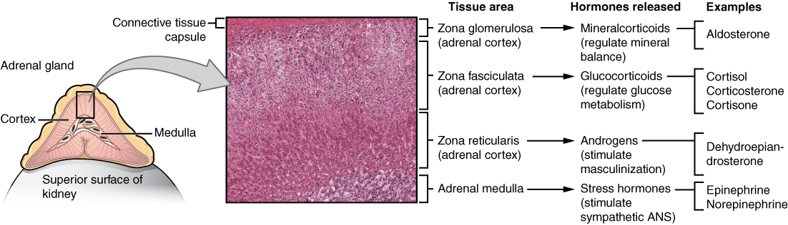
Selye's general adaptation syndrome
Hans Selye, often called the father of stress research, noticed something strange in the 1930s: no matter what he did to his laboratory rats — heat, cold, toxins, injury — their bodies showed the same three-part pattern of response. He called it the general adaptation syndrome (GAS), "general" because the body reacts the same way to almost any prolonged stressor. It unfolds in three stages. In the alarm reaction, resources mobilize and the fight-or-flight surge takes over. In the resistance stage, the body settles into a state of high alert, drawing on hormones to cope while the stressor persists — you feel like you are managing, but at a cost. If the stressor never lets up, the body reaches exhaustion: reserves are depleted, defenses fail, and vulnerability to illness, burnout, and breakdown rises sharply.
| GAS stage | What is happening | How it feels / costs |
|---|---|---|
| Alarm | Fight-or-flight surge; resources mobilized | Racing heart, high arousal, "shock" then countershock |
| Resistance | Sustained high alert; hormones keep the body coping | Coping but depleting; irritability, fatigue build |
| Exhaustion | Reserves run out; defenses weaken | Illness, burnout, collapse of function |
Two roads out of the brain: the SAM and HPA axes
The stress response actually travels two paths at two speeds. The fast path is the SAM axis (sympathetic-adrenal-medullary): the sympathetic nerves signal the adrenal medulla to release adrenaline in seconds — this is the fight-or-flight jolt of Section 1. The slower, longer-lasting path is the HPA axis, and it is the star of the chronic-stress story. The hypothalamus releases CRH, which prompts the pituitary gland to release ACTH, which travels in the blood to the adrenal cortex, which pours out cortisol — the body's main stress hormone. Cortisol keeps glucose flowing to the muscles and brain, sharpens attention, and dampens processes (like immunity and digestion) that can wait until the emergency passes.
In short bursts, cortisol is a life-saver. The problem is that the HPA axis was designed to switch off once the threat clears. When appraisal keeps signaling "threat" — a stressful job, an unhappy relationship, financial fear — cortisol stays elevated for weeks or months, and a hormone that is protective in the short run becomes corrosive in the long run.
Allostatic load: the price of staying switched on
The body maintains stability through change — a process called allostasis. Every time the stress system activates and recovers, it does its job. But repeated or unrelenting activation exacts a cumulative toll on the organs that carry the load; researchers call this accumulated wear-and-tear the allostatic load. It is the biological bridge between "I feel stressed all the time" and the diseases that stress promotes — the subject of the next section. The neuroscientist Robert Sapolsky captured the whole idea in the title of his book: zebras do not get ulcers, because their stressors end when the chase does. Ours often do not.
- Selye's GAS has three stages: alarm, resistance, and exhaustion.
- The fast SAM axis releases adrenaline; the slower HPA axis runs hypothalamus → pituitary → adrenal cortex → cortisol.
- Cortisol is protective in short bursts but harmful when chronically elevated.
- Allostatic load is the cumulative bodily wear from a stress system that never switches off.
Section 3Stress and health

Stress and the heart
The clearest evidence that stress harms the body comes from the cardiovascular system. Chronic stress raises blood pressure, promotes the inflammation and plaque buildup of atherosclerosis, and is now recognized as a risk factor for coronary heart disease. The link was first sharpened by cardiologists Meyer Friedman and Ray Rosenman, who described the Type A personality — competitive, impatient, time-driven, and easily angered — and found it predicted heart attacks better than diet or smoking alone, in contrast to the more relaxed Type B. Later research refined the picture: the truly toxic ingredient is not ambition or busyness but hostility — chronic anger, cynicism, and mistrust. The hard-charging executive who enjoys the work may be fine; the one who seethes at every red light is not.
Stress and immunity
The field of psychoneuroimmunology studies how the mind, nervous system, and immune system talk to one another — and they talk constantly. Cortisol, so useful in the moment, suppresses the immune system when it stays high, which is why chronically stressed people get sick more easily and heal more slowly. In an elegant demonstration, Janice Kiecolt-Glaser found that the small wounds of people under chronic stress (caregivers for relatives with dementia) healed markedly more slowly than those of matched controls. And Sheldon Cohen exposed healthy volunteers to a cold virus and found that the more chronic stress they reported, the more likely they were to actually develop a cold — direct evidence that stress does not just make you feel worse, it lowers your defenses.
| System | Short-term stress | Chronic stress cost |
|---|---|---|
| Heart & vessels | Faster rate, higher output to fuel action | Hypertension, inflammation, atherosclerosis, heart disease |
| Immune | Brief mobilization of defenses | Suppressed immunity, slower healing, more infection |
| Brain | Sharper focus and memory encoding | Impaired memory and mood; hippocampal wear |
| Metabolism | Glucose released for quick energy | Abdominal fat, insulin resistance, higher diabetes risk |
- Chronic stress raises blood pressure and drives the inflammation and atherosclerosis behind heart disease.
- Friedman & Rosenman's Type A pattern predicts heart disease; the toxic core is hostility, not busyness.
- Psychoneuroimmunology shows cortisol suppresses immunity when chronically high.
- Kiecolt-Glaser (slow wound healing) and Cohen (common-cold susceptibility) link stress to real illness.
Section 4Coping
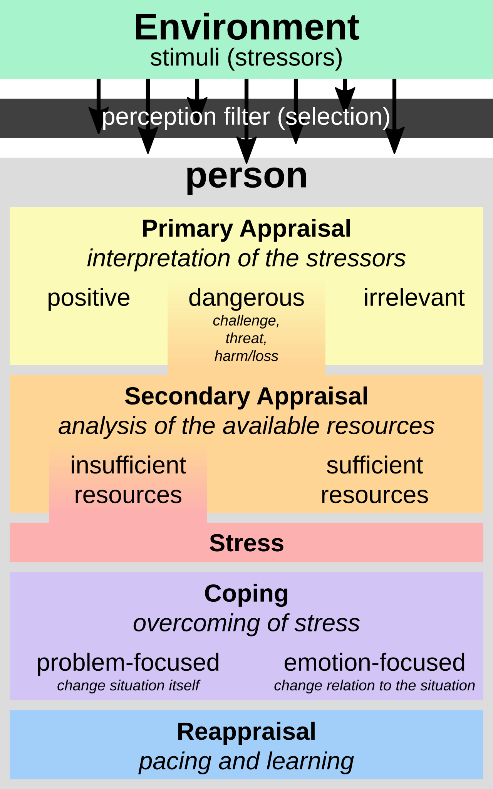
Two ways to cope
Once a stressor is appraised, we do something about it — that is coping. Richard Lazarus and Susan Folkman drew the field's central distinction. Problem-focused coping attacks the stressor itself: you make a plan, gather information, ask for an extension, fix the leaking pipe, have the hard conversation. Emotion-focused coping manages your reaction instead: you reframe the situation, seek comfort, exercise, meditate, or simply let yourself grieve. Neither is superior in the abstract — the trick is matching the strategy to the situation.
| Feature | Problem-focused coping | Emotion-focused coping |
|---|---|---|
| Target | The stressor itself | Your emotional response to it |
| Best when | The situation is controllable | The situation is uncontrollable |
| Examples | Make a plan, study, negotiate, seek advice | Reappraise, exercise, meditate, confide, accept |
| Risk if overused | Wasted effort on what cannot be changed | Avoidance; the problem festers |
Matching coping to control — and what goes wrong
The rule of thumb: when you can change the situation, lead with problem-focused coping; when you cannot — a terminal diagnosis, a loss, a past you cannot undo — emotion-focused coping is not weakness but wisdom. Trouble comes when the two are mismatched, and especially when coping slides into avoidance. Denying a problem, numbing it with alcohol, or ruminating endlessly all feel like coping in the moment but leave the stressor intact and often make it worse. Avoidant coping is one of the strongest predictors of stress becoming chronic.
Social support
Of all the buffers against stress, none is better documented than other people. Social support — the comfort, help, and belonging we receive from our relationships — predicts better health and longer life across hundreds of studies; some analyses put its effect on mortality on par with quitting smoking. It works in several ways at once, captured by the buffering hypothesis: support cushions the impact of stressors, both by offering practical help and by changing how threatening an event feels in the first place. Psychologists distinguish emotional support (a listening ear), informational support (advice and guidance), and instrumental support (tangible help — a ride, a meal, money). Even the mere belief that support is available lowers the stress response.
- Problem-focused coping targets the stressor; emotion-focused coping targets your reaction (Lazarus & Folkman).
- Use problem-focused coping for controllable stressors, emotion-focused for uncontrollable ones.
- Avoidance (denial, substances, rumination) is maladaptive and predicts chronic stress.
- Social support buffers stress and strongly predicts health and longevity.
Section 5Health and well-being
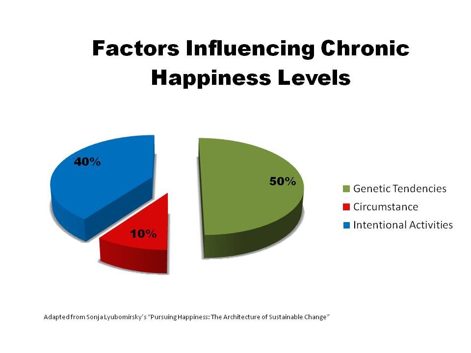
Positive psychology
For most of its history, psychology studied what goes wrong. At the turn of this century, Martin Seligman and colleagues launched positive psychology — the scientific study of what makes life worth living: strengths, meaning, flourishing, and the conditions under which people thrive rather than merely cope. Seligman, whose earlier work on learned helplessness had illuminated depression, turned to its opposite, learned optimism, and later proposed PERMA as the ingredients of flourishing: Positive emotion, Engagement, Relationships, Meaning, and Accomplishment. The point is not to paint on a smile but to broaden the field's questions from "How do we fix illness?" to "How do people flourish?"
Happiness: what actually moves it
Happiness researchers such as Ed Diener study subjective well-being — a person's own evaluation of life satisfaction and balance of positive to negative emotion. One of the field's most humbling findings is hedonic adaptation, the hedonic treadmill: we quickly get used to good fortune and bad, so lottery winners and, over time, even accident survivors drift back toward their earlier baseline. That baseline, or set point, is partly heritable. Sonja Lyubomirsky popularized a rough breakdown — that a large share of the variation in happiness traces to a genetic set point, a surprisingly small share to life circumstances, and a meaningful share to intentional activity, the things we deliberately do. The exact percentages are debated and were never meant as precise, but the message endures: circumstances matter less than we expect, and what we do matters more.
| Influence on happiness | Rough share (illustrative) | What it means |
|---|---|---|
| Genetic set point | About half | A heritable baseline we tend to return to |
| Life circumstances | A small slice | Income, looks, where you live — less than we imagine, and we adapt |
| Intentional activity | A meaningful share | Gratitude, connection, exercise, purpose — the part we can act on |
Barbara Fredrickson's broaden-and-build theory explains why cultivating positive emotion is worth the effort: where negative emotions narrow attention for emergencies, positive emotions broaden our thinking and build lasting resources — relationships, skills, resilience — that pay off long after the good mood fades. Evidence-based practices that reliably nudge well-being are unglamorous but real: expressing gratitude, exercising, sleeping enough, savoring good moments, performing acts of kindness, and investing in relationships.
Building resilience
Resilience is the capacity to adapt and recover in the face of adversity — and it is far more common than we assume. Studying children who thrived despite hardship, Ann Masten famously called resilience "ordinary magic": it arises not from rare gifts but from ordinary human resources — a supportive relationship, a sense of competence, the ability to regulate emotion. Suzanne Kobasa identified a resilient stance she called hardiness, built on three C's: commitment (engaging with life rather than withdrawing), control (believing you can influence outcomes), and challenge (viewing change as opportunity rather than threat). Many survivors of serious adversity even report post-traumatic growth — deeper relationships, new priorities, a greater sense of strength. Resilience is not the absence of stress; it is what lets people meet stress and come through it whole.
- Positive psychology (Seligman) studies flourishing; PERMA names its ingredients.
- Hedonic adaptation pulls us back to a partly heritable set point; circumstances matter less than expected.
- Intentional activity — gratitude, connection, exercise, purpose — is the part of happiness we can act on.
- Resilience is common and buildable; Kobasa's hardiness rests on commitment, control, and challenge.
The chapter in one breath
- Stress is a process: a stressor (the demand), your appraisal of it, and the stress response it triggers.
- Lazarus showed stress hinges on primary (Is it a threat?) and secondary (Can I cope?) appraisal — the same event can be threat or challenge.
- The fight-or-flight response (Cannon) fires the sympathetic system and adrenaline; Selye's GAS runs alarm → resistance → exhaustion.
- The slow HPA axis releases cortisol, which is protective briefly but drives allostatic load when chronic.
- Chronic stress harms the heart (hostility, atherosclerosis, heart disease) and immune system (Kiecolt-Glaser, Cohen).
- Problem-focused coping suits controllable stressors; emotion-focused coping suits uncontrollable ones; avoidance backfires.
- Social support powerfully buffers stress, and positive psychology shows happiness and resilience can be deliberately built.
ReferenceWords worth knowing
A quick reference for the terms in this chapter — skim it now, or circle back whenever a word trips you up.
- Allostatic load
- The cumulative wear-and-tear on the body from repeated or chronic activation of the stress response.
- Appraisal
- The mental evaluation of a situation that determines whether — and how much — it is experienced as stressful.
- Coping
- The efforts, mental and behavioral, we use to manage a stressor and the emotions it produces.
- Cortisol
- The main stress hormone, released by the adrenal cortex via the HPA axis; protective in bursts, harmful when chronically elevated.
- Emotion-focused coping
- Coping that manages one's emotional reaction to a stressor; best suited to uncontrollable situations.
- Eustress
- Positive, motivating stress arising from a challenge one feels able to meet.
- Fight-or-flight response
- Walter Cannon's term for the fast sympathetic-nervous-system surge that prepares the body to confront or flee a threat.
- General adaptation syndrome (GAS)
- Selye's three-stage model of the body's response to prolonged stress: alarm, resistance, exhaustion.
- Hardiness
- Kobasa's resilient stance built on commitment, control, and challenge.
- Hedonic adaptation
- The tendency to return to a baseline level of happiness after good or bad events; the "hedonic treadmill."
- HPA axis
- The hypothalamic-pituitary-adrenal pathway that releases cortisol; the slow, sustained arm of the stress response.
- Positive psychology
- The scientific study of strengths, well-being, and the conditions under which people flourish.
- Primary appraisal
- The first judgment of a situation: Is it a threat, a challenge, or irrelevant?
- Problem-focused coping
- Coping that acts on the stressor itself; best suited to controllable situations.
- Psychoneuroimmunology
- The study of how psychological states, the nervous system, and the immune system interact.
- Resilience
- The capacity to adapt and recover in the face of adversity.
- Secondary appraisal
- The judgment of whether one has the resources to cope with a stressor.
- Social support
- The comfort, guidance, and tangible help provided by one's relationships, which buffers stress.
- Stress
- The process by which we perceive and respond to events appraised as threatening or challenging.
- Stressor
- An event or demand that has the potential to trigger a stress response.
- Type A
- Friedman and Rosenman's competitive, impatient, hostile pattern linked to heart disease; hostility is its toxic core.
Check yourself
Psychological Disorders & Therapy
Roughly one in five adults will live through a diagnosable mental disorder this year, which means these conditions are not rare curiosities — they are among the most common experiences human beings have. This chapter asks a deceptively hard question first: what makes a thought, feeling, or behavior a disorder rather than simply unusual or inconvenient? From there it tours the major families of disorder — anxiety, obsessive-compulsive, and trauma-related conditions; the mood and psychotic disorders — and then turns to the good news: the treatments that work. You will meet the talking therapies that trace back to Freud, Rogers, and Beck, and the biomedical treatments that changed psychiatric care forever. Underneath all of it runs a single, well-supported idea — that mind and body, thought and chemistry, are two views of the same system.
By the end of this chapter you can
- Explain the criteria — dysfunction, distress, deviance, and danger — that separate a disorder from ordinary variation.
- Describe what the DSM is, what it does, and the limits of diagnostic labels.
- Distinguish the major anxiety disorders, OCD, and PTSD, and say why the DSM now files them in separate chapters.
- Contrast major depressive disorder, bipolar disorder, and schizophrenia and their leading explanations.
- Compare psychodynamic, humanistic, behavioral, and cognitive (CBT) approaches to psychotherapy.
- Summarize the main classes of psychiatric medication and what they target.
- Explain why the therapeutic alliance predicts outcomes across every kind of therapy.
- Apply the biopsychosocial model and diathesis-stress model to understand why disorders develop.
Section 1Defining disorders & the DSM

What makes behavior "disordered"
Almost every symptom of a psychological disorder is, in smaller doses, something everyone experiences. We all feel anxious before a test, low after a loss, or superstitious enough to knock on wood. So the line between a personality quirk and a clinical condition is drawn not by the presence of a feeling but by a cluster of judgments about that feeling. Clinicians often teach these as the four Ds: dysfunction (the behavior interferes with everyday life — work, relationships, self-care), distress (it causes the person real suffering), deviance (it departs markedly from cultural expectations), and danger (it poses a risk to the person or others). No single D is enough on its own — grief is distressing but healthy, and a firefighter's courage is deviant but admirable — which is why diagnosis weighs them together and always in context.
The single most important of these is dysfunction. The psychologist Jerome Wakefield captured it with the phrase harmful dysfunction: a disorder exists when some internal mechanism fails to do the job natural selection designed it for, and that failure causes harm the person or their society recognizes. Fear that saves you from a snake is working as designed; fear that pins you to your apartment for a decade is not. This framework keeps us from pathologizing mere difference: being unmarried, unconventional, or unpopular is not a disorder, however deviant a given culture may find it.
The DSM and how diagnosis works
To talk to one another, clinicians need a shared dictionary. In the United States that dictionary is the Diagnostic and Statistical Manual of Mental Disorders, or DSM, published by the American Psychiatric Association and now in its fifth edition, text revision (DSM-5-TR, 2022). For each disorder the DSM lists specific, checklist-style criteria — how many symptoms, for how long, causing how much impairment. The World Health Organization maintains a parallel system, the ICD, used for diagnosis worldwide. The DSM's great achievement is reliability: two clinicians examining the same patient are far more likely to agree on a diagnosis than they were in the 1970s. Its harder, unfinished problem is validity — whether the categories truly carve nature at its joints, or merely name clusters of symptoms that often blur together.
Labels are powerful, and power cuts both ways. A diagnosis can unlock treatment, insurance, and the relief of a name for one's suffering. But in David Rosenhan's famous 1973 study, On Being Sane in Insane Places, healthy volunteers who faked a single symptom to get admitted to psychiatric hospitals found the label "schizophrenia" stuck to everything they did — even normal note-taking was recorded as pathological. The lesson endures: a diagnosis describes a problem a person has, not the whole of who they are. Comorbidity — carrying more than one diagnosis at once — is the rule rather than the exception, another reminder that these categories are useful tools, not natural kinds.
| The four Ds | What it asks | Caution |
|---|---|---|
| Dysfunction | Does it impair work, relationships, or self-care? | The most important criterion; still requires context |
| Distress | Does it cause the person real suffering? | Some disorders (e.g., mania) feel good to the person |
| Deviance | Does it depart sharply from cultural norms? | Norms vary; difference alone is not disorder |
| Danger | Does it endanger the person or others? | Dramatic but actually uncommon in most disorders |
- The four Ds — dysfunction, distress, deviance, danger — are weighed together and in context; dysfunction matters most.
- A disorder is best seen as a harmful dysfunction, not mere difference from the crowd.
- The DSM (now DSM-5-TR) gives clinicians shared diagnostic criteria; the WHO's ICD is the global counterpart.
- The DSM has strong reliability but debated validity; labels help and harm, as Rosenhan's study showed.
Section 2Anxiety, OCD & trauma

Anxiety disorders
Fear and anxiety are close cousins that psychologists carefully separate. Fear is the alarm that fires in the face of a present threat — the surge that gets you out of the road. Anxiety is its future-tense form: apprehension about a threat that has not arrived and may never come. Both are adaptive in small measure; they become anxiety disorders when they are out of proportion, persistent, and disabling. As a family, they are the most common psychological disorders of all.
The family has several members. Generalized anxiety disorder is free-floating, hard-to-control worry about many things, most days, for months. Panic disorder features sudden panic attacks — racing heart, chest tightness, a sense of doom so physical that sufferers often believe they are having a heart attack — followed by dread of the next attack, which can spiral into agoraphobia, the avoidance of places escape would be hard. Specific phobias are intense, irrational fears of particular objects or situations (heights, spiders, needles), and social anxiety disorder is a paralyzing fear of being judged. Martin Seligman's idea of biological preparedness helps explain why phobias cluster around snakes, heights, and darkness — ancestral dangers — rather than around cars and electrical outlets, which harm far more people today.
OCD and trauma-related disorders
Earlier editions of the DSM grouped obsessive-compulsive disorder and post-traumatic stress disorder under "anxiety." DSM-5 pulled them into their own chapters, recognizing that although anxiety runs through both, their machinery is distinct. Obsessive-compulsive disorder (OCD) pairs obsessions — intrusive, unwanted thoughts, images, or urges (of contamination, harm, symmetry) — with compulsions, the repetitive acts (washing, checking, counting) performed to neutralize the dread the obsessions create. The compulsion brings a moment of relief that reinforces the whole cycle, which is why it tightens over time. Brain-imaging work implicates an overactive loop through the orbitofrontal cortex, striatum, and thalamus.
Post-traumatic stress disorder (PTSD) can follow exposure to actual or threatened death, serious injury, or violence — combat, assault, disaster. Its four symptom clusters are intrusion (flashbacks and nightmares that replay the event), avoidance of reminders, negative shifts in mood and thinking, and hyperarousal (being easily startled, always scanning for threat). Crucially, not everyone exposed to trauma develops PTSD; whether one does reflects the diathesis-stress model — a predisposing vulnerability (the diathesis) meeting a sufficient stressor.
| Disorder | DSM-5 chapter | Core feature |
|---|---|---|
| Generalized anxiety | Anxiety disorders | Chronic, uncontrollable, free-floating worry |
| Panic disorder | Anxiety disorders | Recurrent panic attacks & fear of the next |
| Specific phobia | Anxiety disorders | Intense, irrational fear of a specific trigger |
| OCD | Obsessive-compulsive & related | Obsessions (intrusive thoughts) + compulsions (rituals) |
| PTSD | Trauma- & stressor-related | Intrusion, avoidance, mood change, hyperarousal after trauma |
- Fear answers a present threat; anxiety anticipates a future one; disorders arise when the response is out of proportion and disabling.
- Anxiety disorders include generalized anxiety, panic disorder, phobias, and social anxiety — the most common category.
- OCD couples intrusive obsessions with relief-seeking compulsions; PTSD follows trauma with intrusion, avoidance, and hyperarousal.
- The diathesis-stress model explains why the same trauma disables one person and not another.
Section 3Mood & psychotic disorders

Depression and bipolar disorder
Everyone has bad days; major depressive disorder is something else. Its diagnosis requires at least two weeks of either a persistently depressed mood or anhedonia (the loss of pleasure in things once enjoyed), plus a cluster of other symptoms — changes in sleep and appetite, fatigue, worthlessness, trouble concentrating, and thoughts of death. It is roughly twice as common in women as in men, and it is a leading cause of disability worldwide. Bipolar disorder adds the opposite pole: episodes of mania — days of euphoric or irritable mood, racing thoughts, grandiosity, little need for sleep, and reckless spending or risk-taking — that alternate with depressive episodes. Bipolar I requires a full manic episode; bipolar II pairs depression with milder hypomania. Bipolar disorder is among the most heritable of psychiatric conditions.
Why do mood disorders happen? No single answer suffices, which is the point of the biopsychosocial model. Biologically, the classic monoamine hypothesis ties depression to low activity of serotonin, norepinephrine, and dopamine — though the truth is more complex than "a chemical imbalance." Psychologically, Aaron Beck described a negative cognitive triad: depressed people hold gloomy beliefs about themselves, the world, and the future, and interpret ambiguous events to confirm them. Martin Seligman's concept of learned helplessness — the giving-up that follows uncontrollable stress — and Susan Nolen-Hoeksema's work on rumination round out the picture. Because depression carries real suicide risk, taking expressions of hopelessness seriously is not optional.
Schizophrenia
Schizophrenia is a psychotic disorder — a break with shared reality — that typically emerges in late adolescence or early adulthood. Its positive symptoms (added experiences) include hallucinations, most often hearing voices, and delusions, fixed false beliefs held against all evidence, along with disorganized speech and behavior. Its negative symptoms (things taken away) include flat emotional expression, poverty of speech, and avolition, the collapse of motivation. A persistent myth deserves correcting: schizophrenia is not "split personality." The name refers to a splitting of thought from reality, not to multiple identities.
Schizophrenia is best understood through the diathesis-stress lens. Heritability is high — an identical twin of an affected person carries roughly a 50% risk — but genes are not destiny; that same figure means half of identical twins are discordant. The dopamine hypothesis arose because drugs that block dopamine reduce positive symptoms while drugs that boost it (like amphetamines) can induce psychosis. Prenatal complications, maternal infection, and heavy adolescent cannabis use raise risk in the biologically vulnerable, tipping a loaded gene toward an actual illness.
| Disorder | Hallmark | Leading explanation |
|---|---|---|
| Major depression | ≥2 weeks of low mood or anhedonia + symptoms | Monoamine, negative cognitive triad, learned helplessness |
| Bipolar disorder | Mania alternating with depression | Strongly genetic; disrupted mood regulation |
| Schizophrenia | Positive (hallucinations, delusions) & negative (flat affect) symptoms | Diathesis-stress; dopamine dysregulation |
- Major depression = ≥2 weeks of depressed mood or anhedonia plus other symptoms; twice as common in women.
- Bipolar disorder adds episodes of mania; it is highly heritable.
- Schizophrenia has positive (hallucinations, delusions) and negative (flat affect, avolition) symptoms — and is not "split personality."
- The biopsychosocial and diathesis-stress models beat any single-cause story.
Section 4Psychotherapy

Insight therapies: psychodynamic and humanistic
Psychotherapy — the treatment of psychological disorders through a structured relationship with a trained professional — comes in dozens of forms that sort into a few great traditions. The oldest is psychodynamic, descended from Sigmund Freud's psychoanalysis. Its premise is that today's symptoms grow from unconscious conflicts, often rooted in childhood, and that healing requires insight — making the unconscious conscious. Freud's tools were free association (saying whatever comes to mind, uncensored), dream analysis, and attention to transference, the patient's habit of projecting feelings about important figures onto the therapist. Classical analysis took years; modern psychodynamic therapy is briefer and more focused, but keeps the core belief that self-understanding heals.
The humanistic tradition, led by Carl Rogers, rejected Freud's dim view of human nature. Rogers's client-centered therapy (also called person-centered) assumes people have an innate drive toward growth that a warm relationship can release. The therapist supplies three conditions: unconditional positive regard (accepting the client without judgment), empathy (genuinely grasping their inner world, often through active listening and reflection), and genuineness or congruence. Abraham Maslow's idea of self-actualization supplied the movement's north star. Where the psychodynamic therapist interprets, the humanistic therapist mostly listens — and trusts the client to find their own way forward.
Action therapies: behavioral and cognitive
Behavioral therapy takes a different stance: a symptom is a learned behavior, so it can be unlearned, and there is no need to excavate the past. Drawing on Ivan Pavlov's classical conditioning, Joseph Wolpe developed systematic desensitization, in which a patient learns deep relaxation and then, step by step up a "fear hierarchy," pairs that calm with the very thing they dread — a counterconditioning that dissolves phobias. Exposure therapy generalizes the principle. Drawing instead on B. F. Skinner's operant conditioning, token economies reward desired behavior with tokens exchangeable for privileges, reshaping behavior through reinforcement.
The dominant modern approach is cognitive behavioral therapy (CBT), which fuses the behavioral tradition with the cognitive insight that our thoughts, not events themselves, drive our feelings. Aaron Beck's cognitive therapy teaches patients to catch and test the automatic distortions behind their distress — catastrophizing, all-or-nothing thinking, overgeneralizing. Albert Ellis's rational emotive behavior therapy (REBT) made the same point with his ABC model: it is not the Activating event but our irrational Beliefs about it that produce the emotional Consequence. CBT is time-limited, skill-focused, and homework-driven, and it has more evidence behind it than any other talk therapy for anxiety and depression.
| Approach | Founder(s) | Core idea | Signature technique |
|---|---|---|---|
| Psychodynamic | Freud | Symptoms spring from unconscious conflict | Free association, dream & transference analysis |
| Humanistic | Rogers, Maslow | People grow when accepted and understood | Unconditional positive regard, active listening |
| Behavioral | Wolpe, Skinner | Disorders are learned and can be unlearned | Systematic desensitization, token economy |
| Cognitive (CBT) | Beck, Ellis | Thoughts, not events, drive feelings | Challenging cognitive distortions; the ABC model |
- Psychodynamic therapy (Freud) seeks insight into unconscious conflict via free association, dreams, and transference.
- Humanistic therapy (Rogers) heals through unconditional positive regard, empathy, and genuineness.
- Behavioral therapy treats symptoms as learned behavior — systematic desensitization, exposure, token economies.
- CBT (Beck, Ellis) targets distorted thinking and is the best-supported talk therapy for anxiety and depression.
Section 5Biomedical therapy & the therapeutic relationship

Medications and other biomedical treatments
Biomedical therapy treats disorders by acting directly on the body, most often through psychotropic medication. Almost all of these drugs work at the synapse, tuning how neurotransmitters are released, received, or removed. Antidepressants are the largest class; the SSRIs (selective serotonin reuptake inhibitors) such as fluoxetine (Prozac) block the reabsorption of serotonin so it lingers in the synapse, and they treat depression and most anxiety disorders and OCD. Anti-anxiety drugs like the benzodiazepines calm the nervous system quickly but carry dependence risk. Antipsychotics reduce hallucinations and delusions mainly by blocking dopamine; first-generation agents (chlorpromazine, haloperidol) were revolutionary but caused movement side effects, and second-generation "atypicals" (clozapine, risperidone) broadened the effect. For bipolar disorder, the mood stabilizer lithium remains a mainstay decades after its discovery.
When medication and therapy both fail in severe, treatment-resistant depression, other biomedical options exist. Electroconvulsive therapy (ECT) — now delivered under anesthesia and far gentler than its grim reputation — is strikingly effective for the sickest patients. Newer, less invasive tools like transcranial magnetic stimulation (TMS) stimulate targeted brain regions without seizures or anesthesia. These treatments are powerful, and they are also blunt, which is why they sit at the end of the line rather than the front.
The therapeutic relationship
Here is one of the most robust findings in all of clinical psychology: across wildly different schools of therapy, outcomes are far more similar than their competing theories would predict. In Mary Lee Smith and Gene Glass's landmark meta-analysis, the average treated person did better than about 80% of the untreated — but no single approach clearly beat the rest, a pattern nicknamed the dodo bird verdict ("everyone has won, and all must have prizes"). If technique explains less than expected, what explains the results? A large share is the therapeutic alliance — the bond of trust, warmth, and shared goals between client and therapist. It is one of the strongest predictors of improvement in every modality, which is why Rogers's emphasis on the relationship turned out to be prophetic even for therapists who reject his theory.
Two closing ideas follow. First, most working clinicians are eclectic or integrative: they borrow whatever tool fits the patient rather than pledging loyalty to one school. Second, the strongest evidence favors combined treatment — medication to steady the biology while therapy rebuilds thoughts and habits — a direct expression of the biopsychosocial model that opened this chapter. Mind and body are not two patients. They are one, and the best care treats them together.
| Drug class | Example | Chiefly treats | Acts on |
|---|---|---|---|
| SSRI antidepressant | Fluoxetine (Prozac) | Depression, anxiety, OCD | Serotonin reuptake |
| Anti-anxiety | Benzodiazepines | Acute anxiety | GABA (calms neural firing) |
| Antipsychotic | Haloperidol; clozapine | Schizophrenia, psychosis | Dopamine (mainly) |
| Mood stabilizer | Lithium | Bipolar disorder | Multiple; stabilizes mood swings |
- Biomedical therapy acts on the body; most psychotropic drugs work at the synapse.
- SSRIs treat depression, anxiety, and OCD; antipsychotics target dopamine; lithium stabilizes bipolar disorder.
- ECT and TMS are options for severe, treatment-resistant depression.
- The therapeutic alliance predicts outcomes across all approaches; combined and eclectic treatment usually works best.
The chapter in one breath
- A behavior becomes a disorder through the four Ds — dysfunction, distress, deviance, danger — weighed together, with dysfunction foremost.
- The DSM gives clinicians shared, reliable diagnostic criteria, but labels have limits, as Rosenhan showed, and comorbidity is common.
- Anxiety disorders (generalized, panic, phobias, social) are the most common; OCD and PTSD now sit in their own DSM chapters.
- Major depression and bipolar disorder are mood disorders; schizophrenia is a psychotic disorder with positive and negative symptoms — not "split personality."
- The diathesis-stress and biopsychosocial models explain disorders as vulnerability meeting stress across biology, mind, and environment.
- Talk therapies divide into psychodynamic (Freud), humanistic (Rogers), behavioral (Wolpe, Skinner), and cognitive/CBT (Beck, Ellis).
- Biomedical therapy — SSRIs, antipsychotics, lithium, ECT — works at the level of the brain; the therapeutic alliance predicts success everywhere.
- The best outcomes usually come from combined, eclectic care that treats mind and body as one system.
ReferenceWords worth knowing
A quick reference for the terms in this chapter — skim it now, or circle back whenever a word trips you up.
- Anhedonia
- The loss of interest or pleasure in activities once enjoyed; a core symptom of major depression.
- Antipsychotic
- A medication that reduces hallucinations and delusions, mainly by blocking dopamine.
- Bipolar disorder
- A mood disorder in which episodes of mania alternate with episodes of depression.
- Cognitive behavioral therapy (CBT)
- An action therapy that fuses behavioral techniques with the correction of distorted thinking; the best-supported talk therapy for anxiety and depression.
- Comorbidity
- The presence of two or more disorders in the same person at the same time.
- Compulsion
- A repetitive behavior or mental act performed to reduce the anxiety caused by an obsession.
- Delusion
- A fixed false belief held despite clear contradicting evidence; a positive symptom of schizophrenia.
- Diathesis-stress model
- The view that a disorder emerges when a predisposing vulnerability (diathesis) meets sufficient stress.
- DSM
- The Diagnostic and Statistical Manual of Mental Disorders, the standard U.S. classification system; currently DSM-5-TR.
- Hallucination
- A sensory experience without an external stimulus, such as hearing voices; a positive symptom of schizophrenia.
- Humanistic therapy
- An insight therapy (Rogers) that promotes growth through unconditional positive regard, empathy, and genuineness.
- Major depressive disorder
- At least two weeks of depressed mood or anhedonia plus additional symptoms that impair functioning.
- Mania
- A period of abnormally elevated or irritable mood with racing thoughts, grandiosity, and reduced need for sleep.
- Obsession
- An intrusive, unwanted, recurring thought, image, or urge that causes marked distress.
- Obsessive-compulsive disorder (OCD)
- A disorder pairing obsessions with the compulsions performed to relieve them.
- Post-traumatic stress disorder (PTSD)
- A trauma-related disorder marked by intrusion, avoidance, negative mood shifts, and hyperarousal after a traumatic event.
- Psychoanalysis
- Freud's psychodynamic therapy aimed at insight into unconscious conflict through free association and dream and transference analysis.
- Schizophrenia
- A psychotic disorder with positive symptoms (hallucinations, delusions) and negative symptoms (flat affect, avolition).
- SSRI
- A selective serotonin reuptake inhibitor (e.g., fluoxetine) that raises synaptic serotonin to treat depression, anxiety, and OCD.
- Systematic desensitization
- A behavioral technique that pairs relaxation with a graded fear hierarchy to unlearn a phobia.
- Therapeutic alliance
- The bond of trust and shared goals between client and therapist; a strong predictor of outcome across all therapies.
- Unconditional positive regard
- Rogers's stance of accepting and valuing a client without judgment, regardless of what they say or do.